生成时间：2026-11-26T17:29:18+08:00
今日保留论文数：17
内容构成：今日新文 17 篇；补充推荐 0 篇；经典旧文精读 0 篇
阅读分层：重点精读 9 篇；相关简报 8 篇。精读依据科学贡献筛选，简报保留方法、结论及局限。
高能天体物理重点
1. NuSrcAgent: An AI Agent for High-Energy Neutrino Source Searches
- 来源：arXiv / astro-ph.HE
- 链接：https://arxiv.org/abs/2611.33324
- 作者：Bei Zhou, Po-Wen Chang, Kohta Murase
- 公告 / 来源日期：2026-11-26
- 阅读层级：重点精读
- 评分：novelty 8/10，importance 8/10，relevance 10/10，final 9.70/10
- 推荐理由：公开中微子似然分析代理及背景PDF修订，有复现和注入验证价值；需核查自动化选择的统计可靠性。
中文题目：NuSrcAgent：让中微子源搜索可对话、可复查，并检验堆叠背景偏差
做了什么：公开IceCube事件与似然软件让外部研究者能够搜索中微子源，但源表、权重、谱形、时间窗、探测器响应和试验因子仍需一致配置。NuSrcAgent把自然语言请求转成结构化分析设置，用确定性似然代码执行，再由独立程序检查输出并保存输入校验和、版本、参数来源与随机试验记录。默认使用2008–2022年的IceTracks-DR2，共1643355个径迹事件，支持单源、源表逐源扫描和堆叠，以及稳态/时变与多种谱设定。语言模型负责协调与解释，数值结果由可重跑的分析代码产生。
全文不仅演示对话，还发现采用公开SkyLLH算法构造的背景能量概率密度在大源表堆叠中可能累积残差。相同1000源随机目录的拟合，旧背景v1给出约30–75的检验统计量TS，改用自适应窗与交叉验证选择的v3后降至0–9。NGC 1068、32个磁星及固定时间窗的TXS 0506+056示例与对应公开研究作对照。贡献在于可审计分析工作流和具体背景建模诊断；本文没有发现新的确定中微子源，也没有证明智能体可以替代科学选择或完整显著性校准。
为什么重要：中微子源信号稀少，微小背景误差和不一致分析设置都能被大量事件或大量方向放大。本文将“能自动跑出数值”推进到“能核对数值到底用了什么假设”，并用随机目录示例说明背景残差可产生看似有力的堆叠TS。对外部研究者尤其重要的是，公开响应与合作组内部响应不同，复现必须匹配数据版本和统计口径；v3更接近内部基准是一项有限但具体的验证，不意味着所有分析已经获得合作组级别的覆盖率保证。
理论 / 观测 / 仪器方法价值：可借鉴的方法包括将请求、已采用设置、每项设置来源、输入哈希和结果审核保存在同一记录中；把物理源权重与探测器接受度分开；在跑昂贵背景试验前固定搜索程序；以随机目录和能量残差检查堆叠伪信号。背景平滑尺度通过留出事例的预测能力选择，而非调到某个源TS更低或更高，减少用目标结果反向调背景的风险。即使不使用智能体，这些流程也能直接用于自建中微子或γ射线似然分析。
为什么应该关注：对高能γ射线—中微子联合研究，现成可追溯的源表堆叠可帮助检验IACT/LACT候选源群，但源权重究竟代表γ射线通量、距离还是理论中微子产额必须清楚。尤其当一个源支配权重时，大目录并不等于大样本。值得关注的是把可审核的物理模板折叠进探测响应，并用匹配背景和注入试验报告全局显著性与通量约束；不能因为模型接口便利，就把反复尝试后的最高局部显著性解释为发现。
展开详细解读：文章讲解、背景、理论、重点章节、图表与相关工作
文章详细讲解
科学问题首先是如何可靠地把天体物理假说变成源搜索。研究者可能提出“检验这些磁星是否共同发射中微子”，但这还没有确定事件版本、源位置、权重、谱指数是固定还是拟合、是否使用能量信息及显著性如何校准。不同选择改变所检验的假说。NuSrcAgent将这些选择记录为明确配置，再调用同一入口运行分析，避免在更换源表时误带入旧设置。
作者采用标准无分箱混合似然，每个事件由信号和背景概率密度加权。信号空间分布由源方向和角误差决定，能量分布由理论谱与有效面积、能量迁移卷积，时变分析再乘经过实际有效观测时间归一的时间分布。探测器不同建设阶段有不同响应，分配到各阶段的预期信号比例也随谱形变化。智能体并不直接“推断哪个事件来自源”，而是组织这些可检查的统计对象并最大化似然。
最具体的分析结果来自背景检验。v1的分箱、平滑与插值在某些能量代理区间低估背景；大源表覆盖许多方向，似然可把这些系统残差分配为正信号。v3改用按局部事例数调整的滑窗，在早期探测器阶段再施加受小样本抑制的能量校正。图4展示残差下降和随机目录TS同步下降，而NGC 1068及磁星示例给出与独立参考更接近的参数或上限。这条证据比单纯列出软件支持功能更能说明改进的科学意义。
局限是验证仍由选定样例和对话构成，没有一个覆盖任意天体假说、任意语言模型与任意新生成代码的完整可靠性评测。v3在极低、极高能仍有背景残差；自由谱形参数、非负信号边界与搜索时间窗使解析TS分布只宜作初步估计。下一步应扩大留出数据验证、信号注入覆盖率测试与真实复杂目录的稳健性检查；自动生成新分析功能也必须接受同样物理与统计审查。
关键结果是怎么做出来的
第一步锁定输入。默认DR2包含IC40、IC59、IC79和IC86阶段，分别为36900、107011、101956、1397488个事件；每个事件给方向、角误差、时间和缪子能量代理，响应另给有效面积、迁移矩阵和有效时间。DR2采用更新校准和重处理，取其前十年并不严格等于DR1。正文明确这一点，避免把不同事件重建产生的偏移归咎于拟合算法。
第二步建立背景改进的因果诊断。v1按赤纬和对数能量分箱，再平滑和插值；图4显示例如约0.6–1 TeV能量代理处存在背景低估。作者对同一事件样本、同一随机源目录、同一权重与拟合范围仅替换背景PDF，得到v1的30–75与v3的0–9 TS差异。这里随机的是目录位置，各次并非独立新观测数据；它揭示算法对背景失配的响应，而不能当作校准后的假阳性率分布。
第三步说明v3为何不是按目标结果调参。空间窗、能量条件赤纬窗和能量平滑窗都以目标局部事件数控制，稠密区窗更窄；用留出分组负对数似然选择预测性好且更平滑的候选。对IC40、IC59、IC79另用0.4宽对数能窗的观测/预测比作乘性校正，IC86不加此项。所有能量PDF重新归一，并混入小量均匀分量避免零密度产生异常大的信号/背景比。
第四步是NGC 1068基准。v1得到信号数80.1、谱指数3.2、TS=29.2，与公开SkyLLH吻合；v3变为68.4、3.1、22.9，更接近合作组内部的71.1与3.1。v3在1 TeV的缪子中微子加反中微子微分通量为$2.32\times10^{-14}\,\mathrm{GeV^{-1}cm^{-2}s^{-1}}$。但v3的4.4σ为解析局部估计，内部4.6σ来自背景试验，不能把小差异当作两个等价估计器的精确验证；内部信号能量条件也不同。
第五步是群体与时变检查。32个磁星等权堆叠在v3给TS=0.9、解析预试验$p=0.28$，无显著信号；注入$E^{-2}$谱的一侧90%构造得到总目录通量上限$(1.94\pm0.12)\times10^{-9}\,\mathrm{GeV\,cm^{-2}s^{-1}}$，与论文引用学位论文的$1.98\times10^{-9}$一致，误差为蒙特卡洛误差。TXS固定高斯中心MJD57004、标准差55天，在10万次匹配试验中3次超过观测TS，加一概率为$4\times10^{-5}$，约3.9σ；它没有包括原始耀发时间搜索的试验因子。
第六步是把源表扫描与堆叠明确分开。Flaires示例保留387个源，最强源局部3.9σ经整个源表最大TS分布校正后为2.1σ；另一个、按辐射能流积分加权的堆叠假说仅1.2σ。两种搜索都用了10万次匹配背景试验，但逐源扫描修正不能再次机械地施加到作为一个整体假说的堆叠结果。作者也说明其目录、样本、响应与合作组原研究不同，因此该示例不是逐项复现，也不构成新群体关联发现。
展开背景、理论、公式、模型和章节导读
背景知识
高能天体中微子主要指向强子加速：高能质子或原子核与气体、光场作用后产生介子，介子衰变发出中微子。它们能够离开电磁辐射不透明的环境，因此与γ射线互补；但探测事件远少于大气背景。找到某个方向的几次高能事件还不足以确定源，必须知道这样的能量、角距和时间组合在背景下出现的概率。
穿越探测器的缪子径迹提供较好的方向信息，却不直接测出母中微子的全部能量。公开能量代理描述的是重建缪子能量，其与真实中微子能之间有宽分布。把理论中微子谱直接当成重建能谱会产生偏差，必须先乘有效面积，再通过迁移矩阵映射到事件空间。较软或较硬源谱也会改变各探测器阶段和赤纬上的接受度。
单源、逐源扫描与堆叠回答不同问题。单源检验指定方向；逐源扫描问源表里有没有一个突出对象，需考虑选择最大值的机会；堆叠检验按事先权重组合的群体总发射。堆叠能累积弱信号，但错误权重也可能稀释真正信号，或使目录事实上只代表一个亮源。有效源数是模型权重集中度诊断，不是实际观测中独立检出的源数。
背景概率密度通常由数据自身估计，因为绝大部分事件为背景且赤经近似均匀。这样能减少对大气模拟的依赖，却引入分箱、平滑、稀疏尾部和真实信号污染等建模问题。正确的背景随机化可以校准某种算法下的TS显著性，但不能自动让错误背景下的通量归一变得无偏；这是本文同时关注显著性、通量测量和上限的原因。
基础理论 / 方法脉络
似然中的信号数是一个群体期望参数，不是把若干事件硬分类成源成员后计数。每个事件通过信号/背景密度比贡献证据，离源更近、与假定谱更匹配的事件贡献较大。归一化相同重要：空间密度用单位立体角，能量密度用相同对数能量测度，若其中一个忘记雅可比或切选后的再归一，TS就可能包含数学伪偏差。
堆叠权重有两层。物理权重表示假说中的相对中微子通量，例如与某波段通量成正比；接受度权重表示相同入射通量在各源赤纬和各阶段能产生多少事件。两者相乘才是探测信号贡献。等物理权不等于等探测事件数，模型有效源数也不包含全部接受度影响；真正评估某个源是否支配观测拟合，还应重新做移除源的影响检查。
TS衡量加入信号后拟合改善，转换成概率必须知道纯背景TS分布。信号数不允许负值，谱指数在零信号时又缺少普通可识别性，所以半χ²公式是一个近似而非任意搜索下的定理。试验中必须重复与真实分析相同的自由参数、时间搜索和源表扫描，否则得到的分布对应不同问题。有限试验的最小可报告概率也有限，零次超越不意味着无限显著。
通量约束还需区分置信区构造。固定谱的似然下降上限依赖渐近近似；联合谱指数与归一的置信轮廓不能直接当作一个参数区间。注入试验则模拟给定真实通量下统计量的分布，用覆盖率定义界限，但有有限蒙特卡洛误差。本文磁星示例采用与参考工作匹配的90%注入构造，而默认工具的一侧95%解析上限是另一种输出，两个数字不能不加说明地比较。
公式与推导
以下串联原文式(1)、(3)、(8)–(24)，展示从物理源谱到统计结果的闭合链。
- 定义共同谱形与源归一：
通量默认指$\nu_\mu+\bar\nu_\mu$，微分通量单位为每能量、面积、时间；$s>0$对应下降谱。若替换为非幂律形状，后续响应积分必须随之重算。
- 探测接受度及能量PDF分别是
$T_k$为第$k$阶段有效时间，$R$为能量迁移。后式需在$\log_{10}(E_{\rm proxy}/\mathrm{GeV})$上归一，谱的总归一在PDF中抵消，却仍通过预期事件数影响通量转换。
- 角误差的默认空间项为
$\psi$为事件到源的夹角，$\sigma$为角误差，均用弧度；$\psi/\sin\psi$把局部Rayleigh角距分布转为单位球面立体角密度。小角度时回到常用二维高斯形式，不能混用不同归一习惯的信号/背景密度。
- 堆叠与阶段分配为
因此$\sum_k f_k=1$，总信号数$n$对应每阶段$nf_k$。谱变软或变硬时$f_k$也变化，不能拟合谱指数却把阶段接受度固定在无关谱形上。
- 事件混合似然和检验量为
$N_k$为入选事例数，$\theta$包含自由谱参数。背景被低估时$S/B$可系统升高，使正$n$改善似然，这直接连接到图4的随机目录偏差。
- 源权重集中度是
等权$N$源给$N_{\rm eff}=N$；一个源占99%即约1.02，即使目录含1000源也近似单源假说。该量诊断事先权重，不等于拟合后被观测支持的源数。
- 若$N$次匹配背景试验中有$K$次超过观测TS，本文报告
这里$\Phi$为标准正态累积分布，$Z$为单侧等效显著性。$K=0$时最小概率为$1/(N+1)$；还需报告有限试验区间。源表全局概率要统计每次试验的最大TS，而非只重跑观测中最强源。
- 固定谱的一侧95%解析上限满足
若测量通量且$s$自由，使用
一维68%与95%端点为$q=1,3.84$。两参数联合轮廓则用2.30、5.99。所有这些渐近阈值都与具体参数维数和单双侧口径相关，注入覆盖率检验用于评估它们在低计数/边界情形是否可靠。
模型拟合 / 应用方法
实际分析从源名或坐标、目录列、权重与谱形开始，记录哪些是用户指定、从资料推得或程序默认。默认自由拟合$n$与$s$，范围分别为0至10000和1至6；固定谱只拟合$n$。若参数触及边界，报告不能自动把边界拓宽当作解决。独立结果检查核对固定/自由模式、保存数值与所请求设置及必要产物，保证“报告的分析”对应“实际执行的分析”。
背景拟合先于目标分析完成。v3滑窗参数用排除分组后的负对数似然选择，在最优附近一个标准误差范围内取较大平滑尺度以降低稀疏噪声。早期阶段的乘性校正使用观测/预测加伪计数的比值，并重新归一；IC86只用自适应估计。这种交叉验证不能消除所有密度估计误差，但比通过目标TS选背景更能限制分析者偏向。图4的端点残差也必须保留，不能写成背景完全修好。
NGC 1068的非幂律示例把湍流日冕模型谱转成每个模型参数下的信号PDF与接受度，拟合总信号及加速效率参数。作者固定其余模型输入，并对宇宙线压力/热压力比施加不超过0.5的约束；图3右侧为展示退化又移除了该压力界。因而右侧未施压轮廓不能直接当成左侧物理允许通量带。不同谱模型的TS也不应简单相减后套成任意模型间发现σ。
磁星上限由新增注入代码实现，说明智能体可在请求下扩展功能，但代码扩展本身不是可靠性的证据。有效证据是与参照设置匹配、固定注入谱、每次重新拟合$n,s$并报告蒙特卡洛误差。作者使用观测TS与背景TS中位数较大者为参考阈值求90%注入超越比例，这一具体构造应在复用时保留，不应与默认95%剖面上限混称。
时变分析将高斯或盒形信号时间PDF与实际运行区间相乘归一，背景时间分布在有效时间内均匀。背景随机化按运行事件数抽取运行区间、重抽时间并保持当地天顶/方位后重算赤经；若真实分析搜索时间中心和宽度，试验也必须重复搜索。TXS示例仅固定已知窗口，故3.9σ不能替换原发现中包括时间窗搜索的全局显著性。Flaires示例则对全目录最大值作经验校正，展示了两种问题的区别。
重点章节 / 结果段落怎么读
-
第II节与附录A：沿源谱、响应、空间/能量/时间PDF到混合似然读，先核对各量的测度、单位和阶段接受度，再理解拟合参数代表什么。
-
第III节与附录D、E：检查配置如何进入确定性计算、输出检查究竟检查了什么。软件测试与选择的对话测试支持工作流一致性，不能单独证明任意物理分析有效。
-
第IV节、附录F和图4：把能量残差与随机目录TS联系起来，确认v3参数由留出事件而非源结果决定，并留意能量边界仍存在残差。
-
第V节NGC 1068与磁星：逐项匹配数据版本、信号空间PDF、谱模型、显著性和通量口径。尤其区分内部响应与公开响应，以及解析估计与随机试验校准。
-
附录B、G：对照固定窗口TXS和全目录Flaires例子，看试验必须重复哪些搜索、何时用局部或全局概率；这是把工具用于新候选源时最容易出错的一步。
关键图表与解读
图4
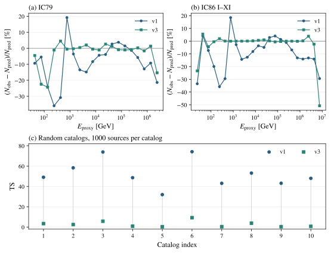
图注：v1与v3背景能量概率密度及其堆叠影响。面板(a)、(b)分别展示IC79与合并IC86 I–XI的能量代理分箱残差，定义为100×(观测数−预测数)/预测数；预测数由每个事例赤纬处的背景PDF在能量箱积分后求和得到。只画至少20个观测事例的箱，拟合仍使用完整样本。面板(c)为各向同性随机位置的1000源等权目录堆叠TS，拟合信号数和谱指数。每对v1/v3使用相同目录、设置与IceTracks-DR2事件，仅替换背景PDF。v3降低了背景残差及相应伪信号TS。 (a)、(b)横轴为缪子能量代理（GeV），纵轴为百分比残差；蓝圆点为v1，绿方点为v3；(c)横轴为随机目录编号，TS无量纲。
怎么看这张图：先看残差是否呈宽能区的同向偏移，再看随机目录TS的变化；这些目录共享同一观测数据，不能当成独立背景实现或完整假阳性率校准。 本文最直接的分析方法贡献及其因果诊断。
来源与置信度：arXiv HTML；source verified；https://arxiv.org/html/2611.33324v1/background_pdf_comparison.svg
图2
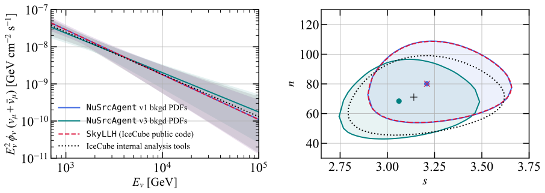
图注：NuSrcAgent与IceCube对NGC 1068的14年IceTracks-DR2幂律拟合比较。左侧为通量谱，右侧为信号数与谱指数的联合置信区域；谱包络与轮廓均对应68%置信水平。IceCube内部分析的谱及包络由其发表的信号数—谱指数轮廓通过公开DR2响应转换。左图能量范围仅为展示选择。 左图横轴为中微子能量（GeV），纵轴为E²乘缪子味粒子与反粒子通量，单位GeV每平方厘米每秒；右图横轴为谱指数s，纵轴为信号数n。蓝色、绿色、红色和黑色分别表示v1、v3、公开SkyLLH与IceCube内部分析。
怎么看这张图：v1复现公开SkyLLH，v3更接近内部结果；轮廓比较与显著性校准是两回事，正文v3的4.4σ仍为解析局部估计。 给背景改进提供真实源基准，并暴露公开/内部响应差异。
来源与置信度：arXiv HTML；source verified；https://arxiv.org/html/2611.33324v1/ngc1068_paper_20261105_pl.svg
图6
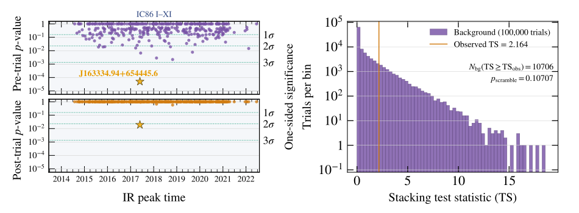
图注：采用10万次背景试验的387源逐源扫描与辐射能流积分加权堆叠结果。左上、左下分别为各源预试验和试验后p值，横轴为红外峰值年份，横线标示单侧1σ、2σ、3σ；黄色星号突出最强源。右侧横轴为堆叠TS，纵轴为每箱背景试验数（对数刻度），紫色直方图为10万次背景分布，橙色线为观测TS=2.164；超过观测值的试验为10706次。逐源全局概率由每次试验在整个目录中的最大TS计算，堆叠作为单独假说校准。
怎么看这张图：最强源从局部3.9σ降至全局2.1σ，堆叠仅1.2σ；不要把扫描修正再次施加到整体堆叠，也不要将局部峰值写成新源发现。 具体说明流程必须保存试验定义与多重搜索口径。
来源与置信度：arXiv HTML；source verified；https://arxiv.org/html/2611.33324v1/flaires_scan_stacking.svg
强相关工作
IceTracks-DR2提供本文默认事件与探测响应，是独立源搜索的同源基础；SkyLLH提供公开似然实现与背景基准。NuSrcAgent的新增层是对话式配置、审计记录、更多源表分析组织和v3背景估计，并不是重新定义中微子似然。作者特意把公开SkyLLH复现与IceCube内部结果分开，读者也应保留这一边界。
NGC 1068中微子证据建立了该源研究的重要背景，本文使用更新DR2上的公开/内部基准检验工具；TXS 0506+056历史中微子耀发则是时变示例的窗口来源。本文固定该已知窗口得到的局部概率不是对历史全搜索显著性的独立替换。适合的后续检索词是“public IceCube likelihood background PDF”“stacking coverage signal injection”，关注响应和统计构造是否真正一致。
同一事件 / 同类源线索：
相似工作：
基础理论 / 方法工作：
相反观点 / 张力线索：
（未提供）
2. High-energy Electron Transport with Discrete Inverse Compton Scatterings
- 来源：arXiv / astro-ph.HE
- 链接：https://arxiv.org/abs/2611.34320
- 作者：Ruihao Jing, Siming Liu
- 公告 / 来源日期：2026-11-26
- 阅读层级：重点精读
- 评分：novelty 8/10，importance 8/10，relevance 10/10，final 9.70/10
- 推荐理由：离散逆康普顿输运从散射核构建，对Geminga扩散推断产生可量化修正。
中文题目：让逆康普顿冷却逐次发生：高能电子输运与Geminga晕的扩散偏差
做了什么：脉冲星晕的高能电子一边扩散，一边把背景光子提升为γ射线。常见模型把逆康普顿散射写成连续失能，但在约100 TeV及更高能量，单次碰撞可带走很大能量，碰撞之间又可能等很久；平均冷却轨迹无法描述仍未散射的电子和随机产生的宽能谱。作者从Klein–Nishina微分散射率建立跃迁积分算符，与空间扩散和连续同步辐射共同演化，并用傅里叶—拉普拉斯变换、矩阵函数和数值逆变换求解，避免逐粒子蒙特卡洛抽样。
单能100 TeV注入的概率分布与蒙特卡洛一致后，作者用Geminga径向表面亮度检验实际影响。软注入谱、3微高斯磁场下，100 TeV扩散系数从连续模型的3.12降至离散模型的2.99，单位均为$10^{27}\,\mathrm{cm^2\,s^{-1}}$，差约4%。换成谱指数1、1微高斯磁场并拟合15.8–251 TeV的Tibet数据后，两值为4.41与3.82，注入效率也从0.0463降至0.0404。作者所称约15%差异针对后一组特定设定，不能推广成所有脉冲星晕的统一修正。
为什么重要：超高能γ射线晕的宽度经常被用来反推电子扩散速度，进而判断源附近是否存在慢扩散区。本文说明，即使空间输运规律不变，把随机辐射碰撞替换为平滑平均也会改变在某一电子能段停留的时间，因此改变拟合出的扩散系数和所需注入功率。贡献是提供可直接连接空间形态的确定性计算框架，并量化一个条件依赖的建模偏差；它没有通过统计证据证明离散模型已被观测优选，也没有推翻慢扩散晕的整体图像。
理论 / 观测 / 仪器方法价值：方法上最值得借鉴的是守恒离散化：只把真正跳出当前能量格子的散射记为损失，同格散射的获得与损失抵消，从而避免离散碰撞率与连续总碰撞率混用而人为丢失粒子。空间上通过缩放坐标处理平行和垂直扩散，能量上保留向低能非局域跃迁，最终一次求得联合空间—能量分布。实际迁移到其他源需输入注入史、磁场与辐射场，并检验网格、低能边界和逆变换的稳定性；数值诊断与真实源参数的不确定性属于不同层面。
为什么应该关注：对IACT、LACT及其他超高能γ射线形态研究，本文提示应把冷却近似纳入模型系统误差，而不只改变扩散指数或源龄。高能分带形态比单一积分亮度更有机会暴露这种效应，因为硬谱、弱磁场和更高γ射线能段会提高离散逆康普顿的重要性。值得跟进的是在同一数据集上放开磁场、注入谱和扩散参数后，约十个百分点的移动是否仍可识别；目前两个Geminga示例同时改变物理参数和观测能段，不能用它们分别测量每个因素的贡献。
展开详细解读：文章讲解、背景、理论、重点章节、图表与相关工作
文章详细讲解
科学问题是：观测某个能段的晕宽度时，电子究竟经历了怎样的能量历史？连续冷却认为同一初能与年龄对应唯一终能，因而有一条确定的扩散积分历史。离散散射则允许一部分电子多次失能，另一部分仍停留在高能端；同一终能的粒子也可能通过不同跳跃路径到达。形态拟合因此不仅依赖扩散系数，也依赖冷却历史的概率分布。
作者以背景光场上单次散射的微分率为起点，把高能电子向低能电子的注入写成积分获得项，把离开当前能量的电子写成损失项。同步辐射仍按连续失能处理，因为在本文场强范围内这一近似合适。空间项允许沿平均磁场的各向异性扩散；通过傅里叶变换消去空间导数，再用拉普拉斯变换处理时间，得到能量网格上的线性矩阵问题。其优势是无需大量随机粒子就能计算低概率高能尾和空间分布。
证据分两层。图1先在不含同步损失的理想问题中比较100 TeV脉冲注入，5、10、20、30千年时的分布与独立蒙特卡洛形状一致，并单独计入未散射的δ峰。图2、3再把电子分布折叠成逆康普顿γ射线亮度：默认软谱参数只导致约4%的扩散移动，而硬谱、弱磁场与Tibet高能分带组合产生更大差异。这一顺序把“算法是否能算对随机冷却”与“这种冷却影响真实参数多少”区分开来。
局限在于两种冷却方案都能给出相近亮度曲线，文中没有报告足以判别方案的似然比、参数后验或协方差矩阵。示例中部分源参数固定，拟合移动尚不能等同于带误差的扩散测量差异。下一步应在统一数据与响应下比较完整谱形和形态，同时扫描磁场、注入指数、截止能和扩散能量依赖；论文建立了进行这些检验的工具，但没有完成全部参数空间研究。
关键结果是怎么做出来的
第一步是规定碰撞核而非先规定冷却时间。作者采用完整Klein–Nishina微分率，对背景光子能量积分得到每单位失能的跃迁率，再把每个初能的所有可能终能归一为总碰撞率。运动学范围外的散射率设为零。这保证在高能区能量转移变大、碰撞变稀疏时仍由同一物理截面控制，而不是人为给连续冷却添加随机噪声。
第二步是建立与碰撞核相容的有限网格。能量采用对数分格，跃迁积分用梯形权重，连续同步项用一阶迎风格式。同格散射不造成跨格输运，低于最低能量的跃迁则作为边界流失计入。由此生成上三角能量矩阵：较高能格能填充较低能格，反向填充在冷却问题中不存在。若把物理总散射率直接放进网格损失项而不抵消同格事件，获得与损失会失配。
第三步是数值基准。辐射场包含2.7 K、0.26 eV每立方厘米的宇宙微波背景，以及20 K红外和5000 K星光，后两者能量密度均为0.3 eV每立方厘米，按灰体归一。作者注入100 TeV单能电子并关闭同步损失；图1红线仅画至少散射过一次的连续分量，橙阶梯把未散射δ峰一起分箱，才能和蓝色蒙特卡洛直方图直接比较。把红线高能端缺少δ峰误读成数值误差，会错判此验证。
第四步是较传统的Geminga设定。取各向同性，即阿尔芬马赫数为1，其余参数沿用参照研究，使用naima计算光子表面亮度。连续模型的失能率也由同一个散射核的一阶能量矩计算，因而比较针对连续化处理本身。图2得到连续3.12、离散2.99的扩散系数，原参照研究的3.2并不是此次成对对照的连续值。注入指数2.24较软、磁场3微高斯时，高能电子占比和逆康普顿独占冷却的重要性都较低。
第五步换成更敏感的物理与观测组合：指数1.0、截止100 TeV、磁场1微高斯，采用Tibet的15.8–39.8、39.8–100、100–251 TeV三个分带。图3同时调整扩散归一与注入效率，离散模型分别需要3.82与0.0404，连续模型为4.41与0.0463。相对于离散值连续扩散系数高15.4%；若表达为离散值相对连续值降低，则约13.4%。本稿明确分母，避免把约15%作为无条件的精确降幅。
最后应区分物理解释和发现强度。未经历大失能的幸存电子保留高能，也有粒子一次碰撞跨过某些能段，两种效应共同改变有效传播尺度；作者明确指出拟合移动方向依赖源谱、场强和光子能段。当前示例中离散方案用较低扩散和较低注入功率再现亮度，但没有给出两方案之间的统计偏好；这是值得纳入系统误差的模型效应，不是一次离散散射现象的独立探测。
展开背景、理论、公式、模型和章节导读
背景知识
脉冲星自转能可以通过脉冲星风及其星云转化为高能电子和正电子。逃离星云的粒子在周围星际介质中传播，散射微波背景、红外和星光产生延展γ射线辐射，称为脉冲星晕。它与星云内部更紧致的同步辐射源不同，观测到的角尺度同时编码注入年代、传播速度和冷却时间，不能仅用源的机械尺寸解释。
逆康普顿过程把电子动能转交给低能光子。在汤姆孙极限下，单次碰撞损失能量占比很小，经历很多次碰撞后的平均失能轨迹通常足够准确。电子能量升高后，其静止系中的入射光子不再低能，进入Klein–Nishina区，截面受抑而单次能量转移可很大。这里“连续方程”与“连续失能”不同：本文仍然用连续时间方程，却显式保留离散跃迁的统计。
同步辐射是同一批电子在磁场中辐射的另一条冷却通道。较强磁场会让连续同步失能占更大比例，压低离散逆康普顿对总能量历史的影响；弱磁场则使随机碰撞更突出。因此，不能只凭电子能量高就断言连续近似一定产生固定幅度偏差，还必须知道磁场和各背景光场。
Geminga是近邻脉冲星，延展TeV辐射为源附近扩散提供了重要约束，也与地球附近高能正电子来源问题相连。但γ射线亮度测量的是视线积分后的电子—光场作用，地球电子通量还受更远区域输运、源史和空间结构影响。本文只展示了晕形态参数的变化，没有计算新的正电子过量解释，也没有给出Geminga对地球通量的新确定比例。
基础理论 / 方法脉络
要把随机碰撞写进连续时间输运，最自然的对象是跃迁率核：给定初能，单位时间跳到某个终能区间的概率。用该核的零阶矩得到碰撞次数率，用一阶矩得到平均失能率，但后者丢失了单次跃迁大小分布及高阶矩。连续冷却模型只保留一阶漂移，因此不能由它恢复未散射概率和宽尾；两者平均能量相近也不保证光子谱或形态相同。
扩散本身是对大量空间散射的宏观近似。沿平均磁场与垂直磁场的扩散系数可不同，作者使用两者相同的能量指数，并把系数比与阿尔芬马赫数联系起来。这样可以用椭球坐标中的有效半径把空间问题化为径向积分。若真实源周围存在空间依赖扩散、弯曲磁场或有限边界，这个简化的解析反变换就不能直接照搬。
能量输运由两类算符组成。同步项在能量轴上平滑向下流动，逆康普顿项则能从很高能量直接填充较低能量。守恒的离散化必须给两者定义一致的能量格宽与边界流出；这里用上三角矩阵保存不可逆冷却结构。它不是假定电子只能损失一个小能量格，而是把所有允许的远距离能量跳跃保留在非对角元中。
傅里叶变换把空间二阶导数变成波数平方，拉普拉斯变换把时间演化变成复频率上的代数响应。作者进一步用矩阵平方根和指数完成空间积分，再沿Talbot复平面路径反演时间。数学上需要选定矩阵平方根的主支并满足谱条件；物理上则依赖均匀背景、零初始粒子和点源注入等设定。数值算法降低抽样成本并不自动消除网格误差、矩阵病态或反演消减误差。
公式与推导
以下按原文式(1)–(35)重排；第4、8步的极限解释是教学补充，不作为作者的新拟合。
- 定义碰撞所处区间：
这里$E$是电子总能、$\varepsilon$为背景光子能、$E_\gamma$为出射光子能，三者用同一能量单位；$\Gamma$刻画相对论散射的重要性，允许区间为$1/(4\gamma_e^2)\leq\chi\leq1$。微分率$f(E,E_\gamma,\varepsilon)$由原文Klein–Nishina表达式给出，不能用恒定汤姆孙截面覆盖整个高能区。
- 把光子核改写成电子跃迁：
净失能$\omega=E_i-E_f$，$T$的量纲为时间倒数乘能量倒数。对背景光场积分后，终能的概率仍保留，而不是只留下一个平均失能量。
- 零阶矩给出离开某个连续能量状态的率：
积分获得项来自更高能，损失项来自当前能；若覆盖所有终能并无边界损失，两项对能量积分后相消，保持电子数而非电子能量。
- 连续模型取一阶矩：
这是原文式(35)与小跃迁展开的连接。$b_{\rm IC}$为正的失能大小，单位能量/时间；近似需要单次相对失能小且谱在跃迁尺度上平滑。大跳跃时被略去的分布宽度不可忽视。
- 完整空间输运为
这里$\mathcal C_{\rm IC}$就是第3步获得减损失，$Q$为单位体积、能量、时间的注入，$b_0E^2$只表示同步损失，不能把逆康普顿又重复放进去。
- 有限网格使用出格率：
其中$\nu_j^{\rm low}$为跳到最低网格以下的率，$\mathbf A$包含出格损失及向下获得，$\mathbf F_{ii}=(E_i/E_{\rm ref})^\delta$。$s$为拉普拉斯频率，$q^2$吸收了扩散归一；这一步把物理守恒转成可求解矩阵。
- 空间反演写成
式中$R$是缩放半径而非物理距离，要求$R>0$且矩阵谱不跨越平方根主支的负实轴。再用28个Talbot节点完成时间逆变换，即得到用于辐射计算的电子分布。
- 连接观测的教学写法为
均匀各向同性背景、光学薄近似下，体发射率沿视线积分成为单位立体角亮度；再对观测能段积分才能比较图2、3。常见尺度估计$r_{\rm diff}^2\sim4\int D[E(t)]dt$说明为什么改变冷却历史会改变形态，但在离散模型中必须对各条能量历史平均，不能代入一条平均轨迹代替求解。
模型拟合 / 应用方法
输入分成核验证与天体应用两套。核验证固定单能脉冲注入、三个辐射场并关闭同步损失，输出归一的能量概率密度；它不拟合天文数据，也不涉及源距离或注入功率。实际复现时应先把未散射概率与连续分量一起积分到1，再与相同分箱的蒙特卡洛比较。论文展示了形状一致性，但没有给出一张网格收敛或运行时间标度表，因此效率优势不宜扩写成特定加速倍数。
Geminga应用则需要持续注入和辐射计算。第一次对照沿用参照论文的源参数，令马赫数为1，只改变冷却处理并重新拟合扩散归一。连续模型使用与离散模型一致的微分核积分出平均失能率，这比拿两个来源不同的经验冷却公式直接比较更干净。结果中的2.99与3.12是一对同设定的最佳值；参照研究的3.2应作为背景值而非差异计算基准。
第二次拟合同时调整扩散系数和自转能转化效率，给定硬谱、100 TeV截止与弱磁场，对Tibet三条能段径向曲线做对照。效率定义为注入电子与正电子功率占自转衰减功率的份额，0.0404就是约4.04%，不是能量无关的观测光子效率。离散模型保留更多高能发射粒子，所以所需注入归一可降低；同时改变传播长度，故扩散也跟着移动。
这两个参数与磁场、谱形存在明显退化：较弱同步冷却可增加高能电子，较硬注入也可增加同一能段粒子，扩散更快则分散中心亮度。文中未给完整误差或残差统计，不能判断约13%的移动超过多少统计标准差。后续应用应拟合同一组能谱与空间分布，明确点扩散函数、背景和曝光的处理，并逐步放开这些退化参数；这是本稿提出的检查，不是作者已经完成的联合响应分析。
重点章节 / 结果段落怎么读
-
第II节式(1)–(9)：先弄清初能、终能和光子能的关系，再跟踪获得与损失如何构成守恒碰撞项；这是连续失能为何不足的物理核心。
-
第III节式(14)–(21)：重点读出格率和同格抵消，再看能量矩阵为什么上三角。这里决定数值结果是否把粒子数处理正确，比记住反变换算法名称更关键。
-
第III节式(24)–(34)：理解缩放距离、矩阵平方根和Talbot节点各负责哪一步；注意均匀各向异性扩散与主支条件限定了方法适用范围。
-
第IV节图1：把连续分布、未散射δ分量和分箱概率分开，才能公平比较蒙特卡洛。随后阅读图2、3时逐项标记谱指数、磁场和γ射线能段的变化。
-
第V节：作者将主要贡献定位为联合空间—能量输运框架，而不是首次指出随机冷却会展宽能谱；这里也明确了与既有工作的分工。
关键图表与解读
图1
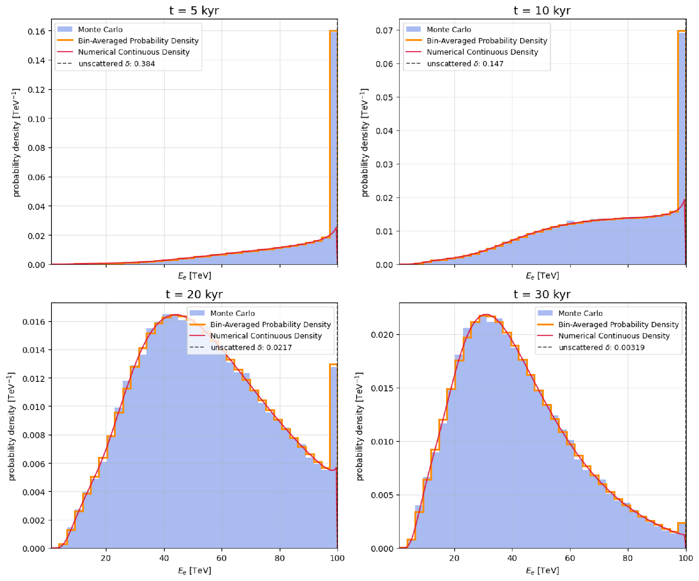
图注：离散逆康普顿冷却概率分布的蒙特卡洛与数值解比较。四个面板分别对应5、10、20、30千年；横轴为电子能量，纵轴为概率密度。蓝色直方图为蒙特卡洛，红实线为数值解中已散射的连续分量，不含未散射δ函数；各面板标注δ给出未散射概率。橙色阶梯为含该δ分量的数值分布分箱结果。 电子能量单位为TeV，概率密度单位为每TeV。
怎么看这张图：用橙阶梯与蓝柱比较整体概率，而不要要求只含连续部分的红线重现未散射峰；高能幸存和宽分布共同体现随机冷却。 验证核与数值解，同时直接展示连续轨迹遗漏的概率结构。
来源与置信度：arXiv HTML；source verified；https://arxiv.org/html/2611.34320v1/figure1.png
图3
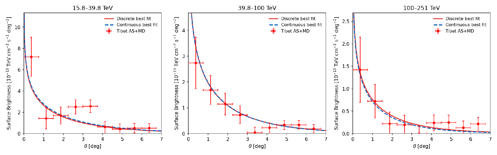
图注：Geminga在15.8–39.8、39.8–100和100–251 TeV能段的径向表面亮度。带误差棒红点为Tibet AS+MD观测；红实线和蓝虚线分别为离散、连续逆康普顿失能模型的最佳拟合。离散模型的100 TeV扩散系数为3.82×10²⁷平方厘米每秒、注入效率为0.0404；连续模型对应4.41×10²⁷平方厘米每秒和0.0463。效率指自转衰减功率转化为注入电子/正电子功率的比例。 横轴为距脉冲星的角距离（度），纵轴单位为10⁻¹³ TeV每平方厘米每秒每平方度。
怎么看这张图：两种模型都可再现相近形态，差异反映在反推参数，而非图中出现明显分离的预测；本组固定硬谱和弱磁场，不代表所有Geminga参数设定。 直接支持论文对扩散与注入功率建模偏差的量化。
来源与置信度：arXiv HTML；source verified；https://arxiv.org/html/2611.34320v1/figure3.png
强相关工作
本文的散射核沿用Blumenthal与Gould的辐射过程综述。该经典工作提供从电子与背景光子分布计算逆康普顿辐射的基础，本文新增的是把同一核写成离散能量转移算符并耦合空间扩散。因此，散射截面本身不是新结果，关键在于如何避免用其平均失能量替代全部输运信息。
John与Linden 2023和Xia等2025已讨论离散逆康普顿造成的高能尾、谱特征展宽与蒙特卡洛模拟。本文把与后者的一致性作为基准验证，进一步发展不依赖蒙特卡洛抽样的矩阵求解并展示Geminga空间亮度的参数影响。读者可用“stochastic inverse Compton cooling”“Geminga diffusion morphology”检索这条方法链，比较各研究是否采用同一磁场、背景光场和注入史。
同一事件 / 同类源线索：
相似工作：
基础理论 / 方法工作：
相反观点 / 张力线索：
（未提供）
3. An X-ray binary origin for the LHAASO peanut
- 来源：arXiv / astro-ph.HE
- 链接：https://arxiv.org/abs/2611.34543
- 作者：Laura Olivera-Nieto, Jakob van den Eijnden, Rembrand Ruppert, Pikky Atri, Sera Markoff, Kaya Mori, Gabriele Ponti, Brian Reville
- 公告 / 来源日期：2026-11-26
- 阅读层级：重点精读
- 评分：novelty 8/10，importance 8/10，relevance 10/10，final 9.70/10
- 推荐理由：LHAASO花生源休眠X射线双星假说提出可检验X射线对应体预测；不能当确认发现。
中文题目：LHAASO花生源会不会是休眠X射线双星留下的喷流遗迹？
做了什么：LHAASO花生源在银纬约−17.5度处延伸约4.6度，伽马射线可达约700 TeV，却没有明确的其他波段对应体。邻近毫秒脉冲星位于辐射区边缘；若把其约3 kpc距离赋给整个源，粒子必须跨越近250 pc且高度定向传播。本文提出另一种可检验假说：两个亮斑之间藏着目前处于宁静态的低质量X射线双星，过去的喷流把高能电子送入两侧，今天看到的是长期积累的辐射遗迹。
作者比较花生源与已知微类星体V4641 Sgr的形态、能谱和环境，以相近物理尺度为动机采用1.3 kpc的示例距离，对应约100 pc长的星云。已有V4641 Sgr单区轻子模型在降低电子注入归一化、把注入时间由约2000年延长至5000年后，可以描述花生源能谱。核心预测是中央区域存在可由深X射线观测和射电搜索发现的宁静态双星，喷流方向应与长轴接近。本文没有发现该对应体，没有测得距离，也没有通过统计模型比较证明双星解释胜过脉冲星解释。
为什么重要：这篇工作改变的是寻找未知超高能源对应体的方式：中心发动机当前很暗，并不妨碍它过去产生的粒子在几十至上百秒差距尺度继续辐射。若预测得到证实，伽马射线遗迹可帮助发现未在近几十年爆发过的双星，补充传统瞬变巡天的选择偏差。花生源位于高银纬、候选稀少且形态特殊，使该方案有具体检验价值；但目前证据等级仍是有物理依据的假说，不是已识别的新双星或已确定的宇宙线来源。
理论 / 观测 / 仪器方法价值：可借鉴的是把角尺度、未知距离、冷却时间和输运时间放在同一证据链里，再以已知系统校准合理参数区间。单区粒子演化用于检查能谱能否实现，喷流平流标度用于检查粒子能否走到观测位置，两者解决不同问题。应用时需提供环境辐射场、磁场、注入谱和活动时间，且高能逆康普顿必须包含Klein–Nishina修正。相似能谱提供可行性，不能替代空间输运求解或对候选天体的确认。
为什么应该关注：花生源是检验银河系极端粒子加速与输运的重要对象，直接关联LHAASO与IACT、LACT的联合研究。更低能段的形态和上限可约束冷却及注入史，中央区域深X射线和射电观测则检验双星预测。值得优先关注的是是否存在沿长轴的可靠多波段候选、距离约束和喷流方向，而不只是继续比较谱线。轻子模型成功不证明强子被排除；本文也没有给出可直接采用的中微子预测。
展开详细解读：文章讲解、背景、理论、重点章节、图表与相关工作
文章详细讲解
作者从一个距离与对应体相互绑定的问题出发。花生源附近有三个已知脉冲星，其中两个自转能损失功率太低，剩下的J0218+4232功率约10³⁵ erg/s，却位于大尺度伽马结构边缘且自行方向不沿结构。若距离采用该毫秒脉冲星的约3 kpc，星云跨度接近250 pc，解释需要非常各向异性的粒子输运。作者并不证明这种方案不可能，而是指出距离并非伽马射线数据独立测定，因而可以重新考虑中心加速器的位置与类型。
替代图像来自已知喷流双星。V4641 Sgr在电磁短时监测中并非持续极亮，却产生约100×10 pc的双侧高能星云，辐射到数百TeV。其环境远离银道面、气体稀薄，轻子逆康普顿解释受到支持。本文据此把花生源看成相似系统的更近、更暗版本，而非要求附近的已知天体必然负责。物理类比同时覆盖双侧不对称形态、硬谱和环境，但仍不是唯一成因识别。
在1.3 kpc示例距离下，花生源约位于银道面下370 pc，大小约100 pc，伽马光度约为V4641 Sgr的三百分之一。作者沿用既有GAMERA时间演化单区模型，其辐射场由银河弥散场与宇宙微波背景组成，逆康普顿包含高能修正。表1示例参数为磁场2.87微高斯、电子谱指数1.93、截止能0.99 PeV、注入时间5000年，电子功率为爱丁顿光度的0.0009%。这些数值是可行实例，不是带可信区间的唯一最佳解。
空间层面的论证是低磁场能减慢电子冷却，约0.1c的平流足以在冷却前把粒子送到数十乃至数百pc。双侧喷流也能自然产生非对称两瓣。不过单区谱模型没有拟合亮斑、连接带和横向宽度，未恢复喷流真实三维形状；注入谱、活动持续时间、速度和磁场之间仍有退化。尤其不能把示例中持续注入的时长直接叫做休眠了5000年，中心何时停止强活动并未由该模型测定。
最有判别力的是新的对应体预测：中央两个热点之间应有宁静态低质量X射线双星。按A0620−00的低亮度状态缩放，2–10 keV通量约6×10⁻¹⁵ erg cm⁻² s⁻¹，可作为深观测目标；黑洞双星的射电预期约20–40微Jy，若致密天体是宁静态中子星则射电表现不同。未发现大质量伴星和低消光使低质量伴星更合理，但尚未确认任何具体候选。
关键结果是怎么做出来的
第一步核对输入是既有观测而非本文新测量。花生源的形态和最高能端来自LHAASO，低能限制来自VERITAS初步结果及Fermi-LAT；V4641 Sgr的比较谱汇集Fermi、H.E.S.S.、HAWC和LHAASO。不同仪器、分析区域及能段的系统差异尚未通过共同数据重分析统一，故这里的比较重点是大体谱形和尺度，不是精密的联合参数估计。
第二步读图1，确认毫秒脉冲星在花生源边缘，作者标注的中央星号则仅为假设双星的示例位置。两边显著性图能量阈值不同：花生源超过100 TeV，V4641 Sgr超过1 TeV。相似形态激发模型，但不能用两图颜色直接比较真实面亮度，也不能把星号当作已检出的X射线点源。
第三步改变距离假设。采用1.3 kpc是为了让4.6度对应约100 pc，属于类比动机；它不是视差、吸收或运动学测距。图3左面板把距离转换后的花生源光度再乘300，以展示其与V4641 Sgr的谱形相似。这个人为缩放必须留在图注里，否则读者会误以为二者光度相当。
第四步做光谱可行性演示。作者保留既有模型的磁场、电子指数与截止能，主要降低注入归一化、延长注入时间，以匹配低能转折。表1给出完整实例，并明确其他谱指数和注入时间组合也可描述数据。右图图例的注入缩放是2×10⁻³，正文则概述为约1/300；因此解读只称降低到千分之几，不把两者伪装成完全一致的精确标定。
第五步独立检查传播。文中以约1微高斯举例，认为PeV电子冷却约万年，0.1c平流可走很远；这不是表1中2.87微高斯的相同数值设置。较强磁场使同步冷却更快，需要更快平流、不同投影或再加速补偿。本文强调参数可调整的可行范围，没有给出同时拟合空间与能谱的后验。
第六步落实可证伪预测并排查伴星类型。附录用三维消光图得到该方向在1.3 kpc处可见光消光约0.15等，OB星目录与Gaia未发现中央候选区域大质量恒星；这削弱高质量双星解释。X射线和射电通量由已知宁静态黑洞双星类比，不是严格保证的最低亮度；非检测需要结合覆盖范围、吸收、双星类型及本征亮度分布解释。
展开背景、理论、公式、模型和章节导读
背景知识
大多数未关联银河伽马射线源的问题是候选太多，而花生源相反：它在较高银纬，附近缺少能量足够的已知加速器。伽马射线谱通常不能直接给距离，只能通过吸收、尺度及合理源类等间接判断。把最近的已知天体距离赋给扩展源是一种模型选择，不能当作独立测量。
X射线双星由致密天体和供质恒星组成，吸积时可以产生明亮X射线与喷流。许多系统大部分时间宁静，只在短暂爆发中被发现，因此已知样本偏向近几十年活跃过的对象。一个长期没有爆发的双星可能尚未被识别，即使它过去向环境输送过大量高能粒子。
扩展伽马星云记录的是历史积分。粒子离开发动机后仍能通过逆康普顿或与气体碰撞辐射；几十至百pc结构不可能简单对应最近一次数天或数月爆发。MAXI J1820+070于2018年被发现，而其已报伽马结构距离双星超过10 pc，说明相关粒子活动可能早于发现。这为“先见遗迹、后找发动机”提供直观先例，而非直接证明花生源身份。
轻子方案把伽马射线主要归给电子逆康普顿散射，强子方案则主要依赖高能核子与气体碰撞。远离银道面的稀薄气体通常增加强子解释的能量要求，因此使轻子图像更有吸引力，但不能仅凭低平均气体密度完全排除未分辨云块或混合贡献。两个机制都需要检查加速能量、目标分布与输运历史。
一个常见误解是发现超高能光子就证明了质子PeVatron。电子也可能产生百TeV光子，且其辐射效率受Klein–Nishina效应、磁场和背景光共同控制。本文采用的主要是电子模型，所以其价值在于探索极端电子加速和休眠喷流系统，不能直接推导对银河宇宙线膝区或中微子的定量贡献。
基础理论 / 方法脉络
先把角尺度转换为物理尺度：在小角度下长度等于距离乘弧度角，光度则随距离平方变化。把距离从3 kpc改为1.3 kpc会同时缩短传播距离、降低所需辐射功率，因而大幅缓解输运和能量压力。它同时引入必须靠对应体检验的新假设，不能只记录模型变容易而忽略假设来源。
电子在弱磁场中可把较多能量通过逆康普顿释放；若磁场增强，同步辐射增强且电子寿命缩短。X射线与伽马射线比较因此能约束磁场。不过花生源还没有明确扩展X射线对应体，本文磁场主要借用类比系统，而不是对花生源完成独立的宽带测量。
平流是粒子随整体流体运动，传播距离近似速度乘时间；扩散则由随机散射造成，均方位移随扩散系数和时间增长。细长结构需要沿轴方向较快、横向较慢的传播。喷流可从流体方向性提供这种约束，脉冲星方案则更依赖周围磁场和散射的各向异性。二者不是仅凭谱形就能区分的机制。
注入时间控制累计电子数量和冷却转折：低能电子积累较久，高能电子更容易损失，因此输出光子谱不等于注入谱。GAMERA求解电子随时间演化再计算辐射，在高能端使用完整散射修正。一个单区模型平均化了空间变化，适合检查总体能谱可行性，不能直接预测两热点与中间连接带的亮度分布。
模型的可检验部分是对应体及其几何，而不是某一套示例参数。若中央候选确有双星轨道、低质量伴星、合适距离和沿花生长轴的喷流，则多项相互独立证据会同时收紧解释。单独一个弱X射线点源仍可能是背景AGN或普通恒星，需要位置概率、多波段谱及时间变化共同确认。
公式与推导
本文没有给出完整解析推导，以下是解释其数值模型及输运论证的标准教学链。小角度下，
其中$d$为距离、$\theta$用弧度、$b$为银纬。$d=1.3\,{\rm kpc}$、$\theta=4.6^\circ$给投影长度约104 pc，$b=-17.5^\circ$给高度约−391 pc；文中使用约100 pc、约370 pc的量级表述，差异反映取角和位置的近似，不能当精密测距。
由通量转光度需要同一能段积分：
下标p指花生源、V指V4641 Sgr。图3左先采用1.3和6.2 kpc再把花生源光度乘300，这只是可视化谱形比较，不能丢掉缩放因子引用绝对功率。
注入电子可用指数截止幂律概括：
这里$Q$单位为每能量每时间的粒子数，$L_e$为功率。表1的$p=1.93$、$E_c=0.99\,{\rm PeV}$是示例输入。归一化标作爱丁顿光度的百分数，故$9\times10^{-4}\%$实际为$9\times10^{-6}L_{\rm Edd}$，不是千分之一爱丁顿功率。
粒子连续性连接注入与现在的能谱：
这是标准一般形式，包含教学上写出的逃逸项；不声称本文另外拟合了逃逸时间。GAMERA负责数值演化和辐射计算，本文主要改变注入归一化与持续时间。若考察真正停止注入后的遗迹，还须给出$Q$关闭时刻。
Thomson极限下电子的辐射损失近似为
能量密度用一致单位，损失率为能量每时间。此式展示磁场和背景光如何控制冷却，但PeV电子散射部分背景光已进入Klein–Nishina区，不能直接用固定$U_{\rm ph}$的Thomson形式得到论文光子谱。
只取同步损失得到清楚的尺度：
加入逆康普顿会缩短总寿命。文中约1微高斯、万年冷却是量级示例；表1用2.87微高斯，同步寿命相应短约八倍，因此不能把这两套磁场的寿命直接混用。
平流传播距离与其所需时间为
50 pc可代表100 pc两瓣结构的一侧投影尺度；真实长度还取决于倾角。要求$t_{\rm adv}\lesssim t_{\rm cool}$解释为什么低磁场和较快喷流有利，也表明更强磁场需要速度、几何或再加速补偿。
最后把数值电子分布映射到逆康普顿光子谱：
目标光子谱$n_{\rm ph}$含银河辐射与微波背景，完整Klein–Nishina核负责高能修正。得到的光子产生率除以$4\pi d^2$才是观测通量。此链把距离、注入、冷却和辐射联起来，也说明仅凭一条谱不能独立求出所有参数。
模型拟合 / 应用方法
本文实际实施的是既有模型的参数调整演示，并非全局统计拟合。输入是公开花生源谱点与低能上限，比较对象为V4641 Sgr已有模型。作者沿用单区轻子设定、银河弥散辐射场和微波背景，在计算电子演化与辐射时使用GAMERA；改变注入归一化及时间以描述谱形。
表1固定磁场2.87微高斯、注入指数1.93、截止0.99 PeV，给注入时间5000年及功率比例。低能谱转折促使时长从既有实例的2000年增加2.5倍，但作者明确不同谱指数与时长组合也可行。因此不能将5000年写成已测量源龄，更不能赋予正文未提供的统计误差。
图3右是模型曲线与数据的相容性检查，未报告联合似然、最佳拟合误差、残差统计或与毫秒脉冲星方案的证据比。归一化的正文近似与图例精确标注也不完全一致。可靠表述是降低至原模型千分之几可实现相近谱形，具体归一化需复现代码和统一数据口径后才能用于精密推断。
空间解释并未进入同一个似然。双侧平流和冷却标度说明粒子有机会到达远端，但没有同时优化横向宽度、热点中心、连接带和能量依赖形态。真正的联合检验应利用不同能段空间模板、背景不确定性及仪器点扩散函数，并检验中心注入是否能再现不对称结构；这些是后续建议。
对应体搜索需要另一条推断链：深X射线巡查中央区域，再以射电、光学/红外和时间变化确认双星及其距离。按A0620−00缩放的6×10⁻¹⁵ erg cm⁻² s⁻¹和20–40微Jy是设计观测的参照，并非所有宁静态黑洞或中子星双星都必须超过的硬下限。区域未覆盖完全或灵敏度随位置变化时，非检测不能简单排除整个源类。
重点章节 / 结果段落怎么读
第一节点读§1：从已知毫秒脉冲星的边缘位置与自行错位理解输运难题，同时记住约3 kpc距离来自候选关联，不是伽马数据的独立结论。
第二节点读§2.1与图1/2：梳理V4641 Sgr的物理尺度、低气体密度和硬谱为何构成类比。比较图的能量阈值不同，形似本身不构成对应体确认。
第三节点读§3和图3左：看1.3 kpc假设如何同时改变长度与光度，以及人为乘300只为比较谱形。这里是模型假设进入结论的关键位置。
第四节点读§4与表1：区分单区能谱示例和喷流平流的空间标度，检查不同磁场设置的冷却时间，避免把可行实例写成唯一解。
第五节点读§4.1及附录A：把深X射线、射电、低消光和缺少大质量星的证据组合成观测方案；中央星号仍为假设位置，双星尚未发现。
关键图表与解读
图1
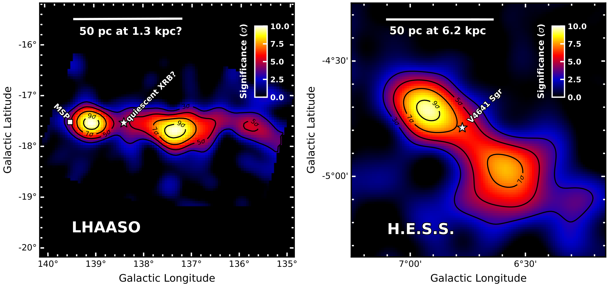
图注：左：LHAASO花生区域超过100 TeV的显著性图，白方块为附近毫秒脉冲星，星号是本文假设宁静态双星的一个示例位置。右：H.E.S.S.观测V4641 Sgr区域超过1 TeV的显著性图，星号为真实双星；为统一显示，不画负显著性。坐标为银经、银纬，色标为显著性；50 pc标尺分别采用假设的1.3 kpc和V4641 Sgr的6.2 kpc。
怎么看这张图：先看两侧不对称延展及候选的位置关系，再看标尺上的距离假设。左侧星号不是已检出源，两图能量阈值与仪器响应也不同。形态相似为提出喷流假说提供动机，不能作为已经完成的空间拟合或对应体关联。 显示替代对应体位置及空间类比。
来源与置信度：arXiv HTML；source verified；https://arxiv.org/html/2611.34543v1/maps.png
图3
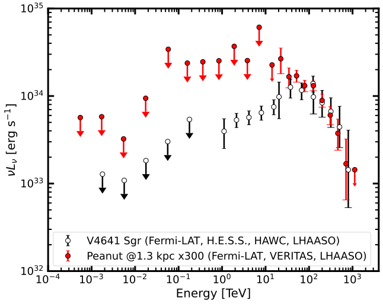
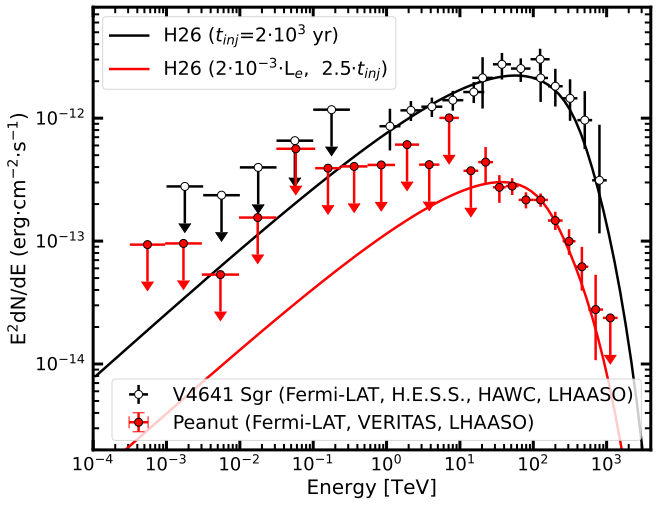
图注：左：采用V4641 Sgr距离6.2 kpc、花生源假设距离1.3 kpc，把图2通量转换为谱光度；花生源光度额外乘300以便比较。右：原始通量谱与既有V4641 Sgr模型（黑）及调整后的花生源模型（红）。白色和红色点分别对应V4641 Sgr与花生源，向下箭头表示上限；横轴能量单位TeV。
怎么看这张图：左图重合说明经人为缩放后的谱形相近，不是绝对光度相等。右图红线提供一个可行轻子实例；图例注入功率为原模型2×10⁻³，正文近似写成约1/300，二者不可作为一致的精确归一化。本文没有给参数后验或替代模型似然，因此曲线贴合不能证明双星方案胜出。 展示光度假设、谱形类比及模型可行性边界。
来源与置信度：arXiv HTML；source verified；https://arxiv.org/html/2611.34543v1/luminosity_spectra_scaled.svg；https://arxiv.org/html/2611.34543v1/flux_models.svg
强相关工作
LHAASO的花生源发现工作提供形态和能谱事实；De Sarkar以及Kleimenov等讨论毫秒脉冲星的各向异性输运与磁场结构。本文没有重新拟合并排除这些方案，而是指出对应体和距离可另选，提出中央双星替代。应并读这些模型的粒子能量、环境磁场、真实传播长度和方向性要求，而非只比较一张谱图。发现论文是观测起点，Kleimenov等的检索编号为2611.15473。
V4641 Sgr是本文最强的类比锚点，HAWC、LHAASO与H.E.S.S.发现的延展高能结构，以及后来的X射线对应体研究支持长期喷流活动图像。本文直接借用其GAMERA模型，增加的是将该机制推广到无已知双星的花生源，并提出宁静态对应体搜索。可从黑洞喷流系统的超高能辐射与V4641 Sgr的X射线喷流追踪证据；二者能增强类比可信度，却不能代替花生源自身的对应体确认。
同一事件 / 同类源线索：
相似工作：
基础理论 / 方法工作：
（未提供）
相反观点 / 张力线索：
4. X-ray Polarization of the Western Lobe of SS 433
- 来源：arXiv / astro-ph.HE
- 链接：https://arxiv.org/abs/2611.34592
- 作者：Philip Kaaret, Jack T. Dinsmore, Naomi Tsuji, Samar Safi-Harb, Ningyue Fan, Roger W. Romani, Stefano Silvestri, Kaya Mori
- 公告 / 来源日期：2026-11-26
- 阅读层级：重点精读
- 评分：novelty 8/10，importance 8/10，relevance 10/10，final 9.70/10
- 推荐理由：SS433西瓣偏振上限与东瓣显著差异直接检验PeVatron磁场有序性。
中文题目：SS 433西瓣X射线偏振低于东瓣：相近能谱背后的不同磁场结构
做了什么：SS 433的两束喷流在距双星约25–30 pc处重新变亮，两侧硬X射线能谱相似，却未必具有相同磁场结构。此前东瓣头部测得接近50%的偏振，说明同步辐射区域存在有序磁场。本文用成像X射线偏振探测器IXPE在2025年的两轮观测研究西瓣头部，过滤后的每台探测器总曝光约963 ks。作者结合钱德拉高分辨率图像和背景能谱，给事件分配空间、能谱及粒子背景权重，以便从源区约70%的背景计数中提取微弱偏振。
三种分析均未检出西瓣偏振。通常的光谱偏振拟合给出99%上限49%；联合权重分析将其收紧至32%，归一化Stokes参数与零一致。使用与东瓣一致的加权分析和偏振度先验，后验随机抽样中99.5%的样本满足西瓣偏振低于东瓣，作者换算为双侧约2.8个标准差。差异说明两侧投影磁场有序程度或未分辨结构不同；西侧更密的环境、正面撞云引发的湍流都是合理解释，但尚未由这次观测单独确定。
为什么重要：这项结果把微类星体粒子加速区研究从总强度和能谱推进到磁场几何。同样接近1.6的光子指数并不保证同样的磁场有序性；同一中心发动机发出的两侧喷流，也会在与环境相互作用后形成不同偏振。贡献尤其在于用可重复的背景加权方法，使一次非检测成为有物理判别力的两侧比较。结论是西瓣平均偏振较低，而不是证明那里没有磁场、没有同步辐射或完全没有局部有序结构。
理论 / 观测 / 仪器方法价值：值得借鉴的是把事件位置、能量和光电子轨迹形状共同纳入源与背景的区分，并将潜在背景偏振作为拟合量。钱德拉提供源空间模板和天体背景谱，IXPE约束仪器背景，曝光图处理探测器坏像素条带。对于低面亮度扩展源，这比只对大孔径累加偏振更有效，但收益以模板准确、背景可转移和响应标定可靠为前提，不能把更窄上限自动等同于完全消除了系统误差。
为什么应该关注：SS 433已在TeV乃至百TeV能段被观测到，理解X射线头部的磁场结构有助于判断电子在哪里加速、如何离开激波。对IACT和LACT相关研究，下一步是把两瓣分辨的伽马射线谱与X射线偏振、分子气体位置联合，检查输运和冷却是否也不对称。当前结果主要约束电子同步辐射的投影磁场，不能直接测出质子加速效率或建立中微子通量。
展开详细解读：文章讲解、背景、理论、重点章节、图表与相关工作
文章详细讲解
问题不是SS 433能否产生高能电子，而是同一双向喷流的两个加速区为什么会表现不同。系统喷流速度约为光速0.26倍，方向随时间进动，整体几乎位于天空平面。离开中心后，X射线在两侧约25–30 pc处重新增强，意味着当地存在加速、磁场增强或两者共同作用。东瓣此前的高偏振给出沿流向较有序的投影磁场，西瓣因此成为检验这是否为喷流共有性质的自然对照。
困难在于西瓣很暗且扩展，IXPE角分辨率有限，孔径中多数事件并不来自目标。作者用钱德拉图像构造三个亮度等值轮廓，在包含背景的最小可检测偏振度比较后选择中等轮廓和2–5.5 keV能段。该区域有13773个总计数、估计背景9601个、净源4172个。源偏振推断因而高度依赖背景稀释及统计涨落处理，原始计数偏振不能直接视为源偏振。
直接事件分析不扣背景，给出3.2%±4.1%的表观偏振，未检出信号。Xspec光谱偏振分析同时拟合强度与Stokes谱，固定吸收柱密度并假设偏振在能段内不随能量变化，得到49%的99%上限。联合权重分析进一步得到归一化Q为−0.01±0.12、U为0.01±0.13，形式偏振度1.4%、误差12.5%，上限降至32%。不同中央值来自统计方法不同，不能解释成源随时间变化。
东、西瓣差异通过两套偏振度后验直接比较，避免只凭一个上限低于另一个点估计作判断。作者采用处理Rice幅度偏差的先验，从两后验抽样，99.5%的配对满足西低于东。这是有条件于先验及分析模型的概率陈述。它支持两侧磁场组织不同，但仍不能区分小尺度方向抵消、真正增强的湍流，以及不同区域发射权重引起的净偏振降低。
讨论把差异与外部证据联系起来：西瓣更靠近银道面，既有密度梯度模型预测其头部环境约为东侧四倍；CO图显示西侧云块较直接挡在亮X射线区上游，东侧则横向偏离亮核。正面碰撞可能增强湍流，擦边剪切可能拉伸磁场。不过这些是机制线索，本文没有完成三维磁流体模拟或证明云位置是偏振差异的唯一原因。
关键结果是怎么做出来的
起点是2025年4月19–24日和10月24日至11月9日的全部三个IXPE探测器数据。作者以背景区域2–8 keV计数率识别耀发，按240秒时间格剔除高于均值三倍测量标准误差的时段，并采用DU2在2025年4月异常后的粒子筛选参数。过滤后第一轮各探测器约239 ks、第二轮约724 ks；接近一百万秒是每台累计曝光，不能把三台相加当作单台连续观测时长。
源区由钱德拉0.5–7 keV图像平滑至与IXPE响应匹配的尺度，再选择三个等值轮廓。中等轮廓配合2–5.5 keV能段得到约39%的最小可检测偏振度。选区依据强度和背景灵敏度，而非挑选偏振最高或最低的区域。背景限制在偏振响应较好的5角分半径内，同时避开头部w1区域，减少目标污染。
每次观测、每台探测器分别提取I、Q、U谱。I谱在3 keV以下分箱80 eV，以上120 eV，Q/U谱分箱400 eV。吸收幂律与恒定偏振模型固定柱密度1.8×10²² cm⁻²，得到χ²/自由度192.1/200和光子指数1.56±0.15。2–10 keV通量9.7×10⁻¹³ erg cm⁻² s⁻¹的范围宽于2–5.5 keV拟合能段，需理解为采用该谱模型计算的通量。
加权分析先扣除钱德拉背景谱中的仪器部分，再通过IXPE响应转换建立天体背景；茧状发射虽主要低于2 keV，其高能尾仍被纳入。IXPE粒子型与光子型仪器背景各用未吸收幂律描述，粒子归一化由轨迹分类分布约束，其他谱参数由背景区拟合，χ²/自由度为161/147。这个优度约束背景谱，不是所有偏振系统误差的总体检验。
空间权重来自钱德拉2–5.5 keV图像，背景采用均匀模型，叠加曝光图及DU2坏像素条带。粒子权重使用0至1之间的轨迹粒子性，保留分类不确定性，避免一刀切丢失光子。每台探测器的光子背景偏振及粒子轨迹总体方向偏好也可自由变化，最终均未显著偏振。不同事件由此贡献不同信息，是约束改善的实际来源。
最后读图4：西瓣后验在零附近最大，东瓣峰值接近49%，32%线为西瓣上限，约70%线为理想同步辐射极限。99.5%对应后验配对，不是西瓣偏振的2.8σ检测。图5再把CO与X射线叠加展示出来，说明作者为何提出两种撞云几何；证据链在此从测量进入解释，可信度层次不能混写。
展开背景、理论、公式、模型和章节导读
背景知识
微类星体是有吸积盘和喷流的恒星级致密天体系统。SS 433的特殊之处在于光谱可以直接跟踪含重子的喷流，其可见物质速度约0.26c，喷流又嵌在W50超新星遗迹之中。中心发动机、喷流和环境共同决定辐射，不能把几十秒差距外的X射线亮区直接当作中心双星当下状态的照片。
同步辐射由相对论电子在磁场中偏转产生，通常具有较高线偏振潜力。单个小体积内即使磁场很强，只要不同位置的投影方向相互抵消，大孔径测得净偏振也可以很低。总强度主要反映电子数量、能谱与磁场强度的组合，而偏振补充磁场方向及空间组织信息，两者敏感的物理量不同。
两侧X射线头部均有很硬的谱，已有观测延伸至约30 keV；TeV观测又证实离中心很远的区域存在高能粒子。X射线同步电子寿命较短，因而更强调当前或近期加速位置。头部缺少能直接对应的显著射电发射，使射电偏振难以替代X射线诊断，IXPE因此提供了先前缺少的信息。
偏振非检测不等于物理偏振为零。偏振度由两个有噪声的Stokes分量平方和开根号得到，天然非负；即使真实值为零，测得幅度也倾向正值。背景较多时，这种偏差及先验依赖更明显。读本文须同时看Q/U、上限和后验，不能把1.4%±12.5%当作普通可正可负的高斯参数。
环境不对称构成天然对照实验。西侧更近银道面，其射电瓣沿轴方向也更短；密度梯度影响大尺度动力学，云块则局部改变流速、激波和剪切。本文用这些事实解释同样喷流输入为何可能形成不同场排列，但密度、云几何与偏振之间的因果关系仍待观测和模拟检验。
基础理论 / 方法脉络
IXPE测量光电吸收后电子轨迹的初始方位，线偏振使其呈两倍角调制。仪器调制因子随能量和轨迹质量改变，所以每个事件等权求和通常不是最高效的方法。真实源谱与背景谱通过能量响应进入测量，决定一个事件有多大概率属于目标。
Stokes强度I代表总光量，Q/U记录相差45度的两个线偏振分量。不同发射区的Q/U可以直接相加，偏振度却不能简单平均。两个同样明亮、偏振方向正交的区域会抵消净偏振而保留强总强度，因此低偏振不能单独证明每一处都高度湍流。
光学薄幂律电子在均匀磁场中的同步辐射有由谱指数确定的最大偏振。本文光子指数约1.56对应约70%的理想极限，东瓣约49%已经相当高。将偏振压低比例转换为湍流能量比例，还需场分量统计、视线积分和发射权重假设，本文没有直接拟合这些量。
不偏振背景既稀释源信号又增加统计涨落；有方向偏好的背景还会使Q/U偏移。空间模板、能谱和轨迹分类联合的目的，是识别更像源的事件，并允许残留背景有方向结构。钱德拉背景必须经过响应转换才能用于IXPE，不能直接相减两台仪器的计数谱。
系统轴接近天空平面，使两侧整体视向差异不像对准视线的AGN那样突出，但局部冲击面和磁场方向仍可能不同。正面撞云与侧向剪切可分别增强无序结构或拉伸磁场。由相容性走向确定机制，需要分辨的偏振预测和气体三维分布，不能仅依赖投影图。
公式与推导
以下为标准教学推导，完整事件似然以leakagelib实现为准。光电子方位响应可写为
其中$\Pi$为无量纲偏振度，$\chi$为偏振角，$\mu(E)$为调制因子。两倍角反映方向相差180度等价；真实拟合还纳入能量重分布和轨迹质量。
展开三角函数得到Stokes分量：
这里$q=Q/I$、$u=U/I$。本文$q=-0.01\pm0.12$、$u=0.01\pm0.13$均允许零，故低幅度时偏振角没有稳定解释，不能据点估计给西瓣画唯一磁场方向。
暂取背景不偏振，源与背景混合满足
由4172源计数和9601背景计数得$f_s\simeq0.303$。未扣背景的3.2%因而不能直接与东瓣源偏振49%比较。此式只给直觉，实际响应及背景随能量变化，需完整拟合。
等权近似的99%最小可检测偏振度为
这里$S,B$是计数。扩大孔径同时增加源与背景，所以需要优化。MDP是零偏振假设下的灵敏度尺度，不是实际数据的置信上限，39%的MDP与32%的上限并不矛盾。
事件加权的直觉可由混合模型表示：
位置$\boldsymbol{x}_i$、能量$E_i$、粒子分类量$c_i$和方位共同决定信息。本文背景实际包含天体、仪器光子及粒子成分；该式为教学概括，不代替软件的完整似然。
电子分布$N(E_e)\propto E_e^{-p}$的光学薄同步幂律段满足
代入$\Gamma=1.56$得约0.70。这要求均匀投影场与理想电子分布；低于此值不唯一指向某种湍流强度。
多区域相加时
局部高偏振可以因方向抵消形成整体低偏振。从西瓣上限推断场无序时，须考虑多个有序分量叠加；当前数据没有分辨到足以逐块测定场方向。
两瓣差异由后验积分定义：
作者随机抽样实现，并用正比于$1/\Pi$的先验抵消从$QU$平面变为幅度时随$\Pi$增长的面积因子。该概率依赖先验和非负边界，不能解释为西瓣非零偏振的检测。
模型拟合 / 应用方法
输入是两轮三台IXPE事件和响应，以及钱德拉图像、背景谱。基线模型为吸收幂律乘恒定偏振，柱密度固定，光子指数和归一化拟合，偏振度与角度控制Q/U。作者不需额外跨探测器通量常数。良好拟合和与既有结果一致的指数支持发射归属，但不单独检验偏振是否随能量变化。
加权模型用钱德拉blanksky扣除仪器背景，再用fakeit转至IXPE响应。IXPE仪器粒子型、光子型背景用未吸收幂律表示，粒子归一化由轨迹分类工具估计。背景孔径的谱组成传递到源孔径，因此空间均匀背景与天体模板适用性是实际系统假设。
转换的钱德拉源图提供空间权重并叠加曝光图。位于亮结构、能谱更像源的事件能贡献更多偏振信息。每台探测器的光子背景偏振及粒子方向偏好都可变化，降低残余背景被误认为源的风险；未检出背景偏振说明数据不要求这些方向信号。
报告须区分Q/U近似误差、非负偏振后验及单参数99%上限。图3的68%及95%轮廓属于双参数联合区域，不能直接与32%上限混读。99.5%的差异采用同种加权方法与先验；文中没有展示所有可选先验、空间梯度及替代模板下都维持该概率的系统扫描。
未来可改变背景孔径、模板平滑和能量分段，检查边缘及DU2条带是否驱动差异。这是建议，并非已完成检验。物理上应比较分子云三维位置与磁流体合成偏振图，检查撞云能否在保持硬谱的同时产生足够去偏振，才能从相容解释走向机制约束。
重点章节 / 结果段落怎么读
第一节点读§II和图1：明确头部、背景新月孔径及三种候选轮廓。抓住13773总计数与4172净源计数的区别，才能理解加权动机；39%是区域选择的灵敏度指标。
第二节点读§III.1–III.2及图2：比较未扣背景的直接分析与扣背景、折叠响应的I/Q/U谱拟合。重点是统计口径不同，不能把3.2%、12.4%当成不同时刻的真实源变化。
第三节点读§III.3：追踪钱德拉背景转换、IXPE仪器背景、空间模板、粒子权重及坏像素处理。这些步骤解释上限为何改善，也指出结果依赖哪些辅助数据。
第四节点读图4及邻近段落：先看西瓣的零边界，再看东瓣宽分布及32%上限，最后看99.5%配对抽样定义。区分两瓣差异和西瓣自身的检测。
第五节点读§IV和图5：密度梯度与CO位置是机制线索。正面碰撞、剪切、反向激波和回流均为可检验解释，没有一种被偏振上限唯一选中。
关键图表与解读
图4
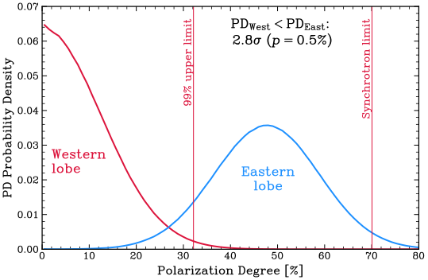
图注：西瓣（红）与东瓣（蓝）偏振度后验分布，均来自加权分析。竖线分别标出西瓣99%上限和理想同步辐射极限。横轴为偏振度百分数，纵轴为概率密度；在本文先验下，后验配对得到西瓣低于东瓣的概率99.5%。
怎么看这张图：西瓣分布在零附近最大，意味着没有检出非零偏振；32%上限低于东瓣约49%的峰值，但两分布仍重叠。差异概率来自完整抽样。约70%是均匀场同步极限，不是仪器灵敏度或另一侧的测量。 直接显示主要新增结果。
来源与置信度：arXiv HTML；source verified；https://arxiv.org/html/2611.34592v1/pd-pdf-con-pol.svg
图5
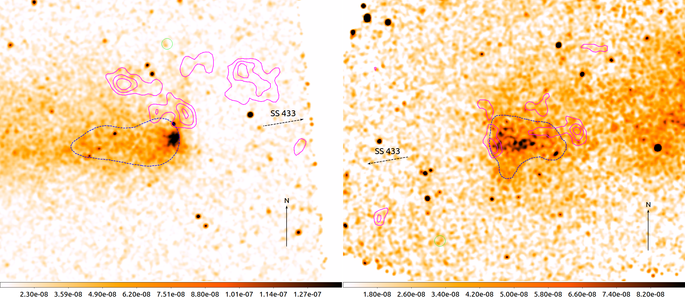
图注：SS 433东侧（左）与西侧（右）头部的钱德拉0.5–7 keV图，单位计数 s⁻¹ arcsec⁻²；像素1.968角秒，高斯平滑标准差2像素。品红线是CO积分轮廓，东侧速度范围46.5–58.3 km/s，西侧51.7–56.5 km/s；蓝虚线为IXPE分析区域。黑虚箭头指向SS 433，实箭头指北且长2角分。
怎么看这张图：沿指向SS 433的反方向追踪流向：西侧云块直接位于亮区上游，东侧横向偏离亮核。正面碰撞与剪切是候选几何，但这里只给投影位置；CO积分速度与图像色标不同，不能用颜色直接比较两侧亮度。 连接偏振差异和环境机制。
来源与置信度：arXiv HTML；source verified；https://arxiv.org/html/2611.34592v1/chandraco.png
强相关工作
本文直接接续Kaaret等的SS 433东瓣IXPE观测与Fan等的加权再分析。前者建立东瓣高偏振、投影磁场沿喷流方向的图像，后者提供与本研究相匹配的统计处理。新增信息不是首次证明SS 433有同步辐射，而是为同一系统另一侧建立可比较的偏振约束。检索关键词为“SS 433 eastern lobe IXPE Kaaret Fan weighted polarization”，比较时需特别核对孔径、背景及先验。
Sakemi等的CO研究与既有W50密度梯度模型则提供环境解释：气体说明碰撞可能发生在哪里，偏振说明发射磁场在孔径内是否有序。超新星遗迹IXPE中环境密度与低偏振的趋势提供类比，但喷流速度、磁场放大及积分尺度不同，不能直接当定量标定。后续关键是构建能同时预言亮度、能谱和偏振的环境相互作用模型。
同一事件 / 同类源线索：
相似工作：
（未提供）
基础理论 / 方法工作：
（未提供）
相反观点 / 张力线索：
（未提供）
5. Measuring the flavor composition of high-energy neutrinos from the Milky Way
- 来源：arXiv / astro-ph.HE
- 链接：https://arxiv.org/abs/2611.34797
- 作者：Mauricio Bustamante
- 公告 / 来源日期：2026-11-26
- 阅读层级：重点精读
- 评分：novelty 8/10，importance 8/10，relevance 10/10，final 9.70/10
- 推荐理由：联合半球探测银河中微子味组成预测，明确联系源磁场和衰变并量化未来精度。
中文题目：把银河系当作味组成参照：全球中微子望远镜能测到什么？
做了什么：银河系高能中微子的总辐射已经可测，但电子、缪子和τ三种味所占比例仍不清楚。味比例反映产生链，也可能在长距离传播中被新物理改变。作者以IceCube实测的银道分区通量和能谱为输入，构建IceCube、KM3NeT、Baikal-GVD、P-ONE、TRIDENT、NEON、HUNT与IceCube-Gen2的联合事件预测，同时拟合银河系分区、银道外天体物理通量和大气背景。南极的IceCube主要通过簇射看内银河系，北半球探测器补充高指向精度的缪子径迹，两者结合才能约束味组成。
在源端由带电π介子衰变产生中微子的假定下，IceCube取15年、其余台站均取满规模10年曝光，八台联合可将内银河系源端电子味份额$f_{e,S}=1/3$测到68%置信水平下约27%的相对精度，即区间约0.245–0.425。仅现有三台的对应精度约88%，IceCube与KM3NeT两台约90%，足以在约2σ区分纯中子衰变情景。全文进一步预测银河系—河外味差可探测强磁场中的缪子冷却或中微子衰变；这些均是有响应和源模型假设的灵敏度预测，不是已经测出的味比例。
为什么重要：总通量与能谱相近的源群可能通过不同粒子链产生中微子，单靠强度不易区分。味组成增加一项物理诊断，而银河系的短传播基线又可与河外长基线作对照：若两者不同，原因可能在产生区环境，也可能在传播中新物理。本文的重要推进是把这一概念落实到公开探测响应、实际银道亮度、背景和系统误差的联合预测，并展示“增加不同类型事件”为什么比只扩大同一种探测器更关键。不过，π衰变味比本身仍不能区分星际气体漫射产生与许多同样通过π衰变工作的未分辨源。
理论 / 观测 / 仪器方法价值：最有参考价值的是全球探测器联合建模：按位置计算每天可见的银道方向，将真实味、能量、方向折叠成径迹、簇射和双簇射，再把各台共享的天体物理/大气参数与各台自己的效率、能标、指向误差分开。作者用已发布分析检验近似响应，且列出没有通过预设容差的项目。应用到新阵列时，应保留这种验证记录与不确定度来源，而不能仅按体积放大IceCube事件数后宣布精确预测。
为什么应该关注：对天体中微子与多信使研究，最值得关注的是银河系可以成为一个实际测量的味参照，而不是永远固定为理论的1:1:1地球端比例。γ射线对银河系强子发射的约束可帮助解释其源成分，北半球水下阵列则直接补齐关键径迹样本。后续优先问题是响应、误识别和能量依赖味变化能否在真实数据中达到本文要求；27%是理想满规模曝光情景，不能读成从今天起十年内必然兑现的工程日程。
展开详细解读：文章讲解、背景、理论、重点章节、图表与相关工作
文章详细讲解
科学问题分成两层：银河系内的高能中微子是否遵循普通π介子衰变链，以及河外中微子为何可能与它不同。正常π衰变在源端给电子与缪子味1:2；若强磁场使缪子在衰变前冷却，电子味高能产额被压低；中子β衰变则产生反电子中微子。宇宙学距离上的中微子衰变也能改变河外味比。因此测量两类天区的味差，比单独把某个味比与固定理论值比较更灵活，但仍需要明确哪些物理假设在反演中被使用。
作者把银道限制在银纬绝对值8度以内，主要使用三个银经分区，每区独立拟合强度、谱指数和味比，同时用银纬绝对值30度以外的天空约束河外成分。观测量按重建能量、银纬及事件类型分箱，并追踪方向误差造成的跨区域泄漏。径迹对缪子味敏感，簇射主要提供电子和τ味的总信息，少量双簇射补充τ味识别。所有成分一起拟合，避免先把河外或大气背景当作已知后高估味灵敏度。
关键结果是内银河系最容易测量，因为它每单位立体角比外侧区域亮约4–5倍，又适合北方望远镜看到上行径迹。图1的地球端置信区呈长条：缪子味被径迹压紧，电子与τ味仍互相退化。图2进一步假定源端无τ味，通过振荡矩阵反演出源端电子味的一维区间，八台联合达到27%相对精度。这个约束变紧同时来自数据和源端假设，不能把它当作无需假设的三味直接测量。
局限与下一步来自预测本身。若干未来台站缺完整公开响应，作者用IceCube或ARCA资料缩放补全，表A.2也保留了验证偏差。主结果采用能量平均味比和均匀分区亮度；附录测试CRINGE通量或六分区，内区误差变化不大，但还不能据此覆盖所有真实源分布。八台可以在某些情景排斥内区π衰变，却未必能证明银道内各区味组成不同，因为外区统计仍太弱。
关键结果是怎么做出来的
第一环是把实测银道信息写成预测输入，而不是使用任意乐观通量。三分区内区为$|l|<40^\circ$，外区分别覆盖其东西两侧，均取$|b|<8^\circ$。表C.1列出的5 TeV每味能量通量归一为19.1、5.1、3.5，单位$10^{-11}\,\mathrm{TeV\,cm^{-2}\,s^{-1}\,sr^{-1}}$，谱指数为2.83、2.93、2.87；第三个指数采用IceCube下限。正文另提及$|l|<30^\circ$的响应验证区，那属于六分区设置，不应与主三分区边界混写。
第二环是校准事件类型响应。IceCube银道簇射样本有59592个事例，其中约87%为大气背景；作者从公开合并有效面积分解各味贡献，拟合选择效率，并处理带径迹却被保留为簇射的缪子味。指向分布用King函数及能量依赖修正拟合公开分位数，角分位数均方偏差约1.6%。重做16个区域的通量拟合时，13个的68%区间端点在10个百分点以内，内银河系约±32%，接近发布值。这支持主要标定，但不是所有响应细节均精确复现。
第三环是利用地理互补。每个天区在不同纬度台站每天有不同的上行可见时间；作者以720步跟踪恒星日，径迹只保留天顶角大于85度的方向。IceCube在南极看内银河系主要是下行，需依靠簇射抑制大气缪子；KM3NeT等北方台站则把它作为上行径迹观测。增加径迹会压缩图1中的缪子味方向，却不会独自解决电子—τ味简并。
第四环是联合统计。作者用期望事件数而非随机抽出的单次数据作为Asimov样本，最小化各台各类型的泊松偏差，并对最多55个干扰参数加适当先验或范围。银河各区与河外味比均放开，天体物理谱形、大气产额、效率、能标和指向随之优化。图2把地球端区域投射到无源端τ味的振荡轨迹上，并对2040年预期混合参数误差剖面化，才得到内区27%、河外13%的相对精度。
第五环检查输入替换。若真实通量改用CRINGE，内区68%区间变为0.235–0.435，约30%而非27%；改六分区为26%。采用集中于银道中线的空间模板会提高信噪比，也使排除中子衰变的Δχ²增加，但地球端区域各味坐标只缩小至多约0.05。这表明主要互补机制较稳健，同时提示“排除远处极端假说”和“测量最佳值附近误差”对模板的反应不同。
第六环扩展到物理判别。带源谱折断的河外强磁场模型在八台情景中约11 kG和22 kG分别达到3σ、5σ冷却灵敏度；若两个较重质量态以相同寿命质量比不可见衰变，银河系—河外对照在2σ可达到约$1.5\times10^4\,\mathrm{s\,eV^{-1}}$。这些数字来自不同假设检验，不能与图2的68%参数误差混称为发现置信度。冷却检验用1000个伪实验校准零假设，并对其未充分抽样的高Δχ²尾部外推，5σ预测因而还有统计尾部校准的限制。
展开背景、理论、公式、模型和章节导读
背景知识
中微子有电子、缪子、τ三种弱相互作用味，天体产生时的比例取决于母粒子如何衰变。通常质子与气体或光子作用产生带电π介子，π先产生缪子味中微子，缪子再产生电子味和另一缪子味，合计约1:2:0。这里统计中微子与反中微子之和，但探测效率并不完全相同；中子衰变只产反电子中微子，比较时尤其不能假定粒子与反粒子各半。
味本征态与传播中的质量本征态不同。对千秒差距以上基线，振荡相位在能量和距离分布上平均，源端味比例通过一个概率矩阵映射到地球端。π衰变因此接近1:1:1，而不是中微子在途中真的随机“忘掉”所有源信息。概率矩阵仍保留不同源配比间的小差异，只是反演会被混合参数误差和探测器味简并限制。
中微子望远镜并不逐个读出味标签。缪子带电流作用产生长径迹，方向重建好；电子带电流、τ带电流及所有味的中性流多呈簇射，方向较宽。足够高能的τ可在相互作用和随后衰变位置形成双簇射，但数量有限。味分析依赖的是多种响应卷积后的统计分布，因此同样数量的径迹与簇射并不对应相同的源端味数。
银河系中微子的可能来源包括宇宙线撞击星际气体和未分辨的紧致天体。两者如果都产生普通π衰变链，味组成相同，测出π衰变并不能独立给出它们的分担比例。真正具有判别力的是强磁场冷却等偏离普通链的环境，或在河外更长距离才显著的衰变。这使银河系味测量既是天体物理诊断，也是检验传播定律的参照基线。
基础理论 / 方法脉络
味比例的和等于1，三味只含两个独立参数，常用三角图表示。径迹主要约束缪子味份额；只要电子与τ味互换仍产生相近簇射数，似然就沿该方向形成长条。双簇射、不同能量沉积特征和改进的味识别可进一步压缩它，但不能假定目前三种味都有等精度的独立计数器。
源端无τ味是合理但额外的物理约束。常见π、缪子和中子衰变链都满足此条件，源端只有电子份额一个自由变量；振荡后它在地球味三角上形成一条轨迹。把二维长条限制到这条轨迹，得到的一维误差会明显更小。因此读图2必须同时记住无源端τ味、标准振荡、正常质量排序和所用混合参数误差的条件。
磁场诊断来自寿命与辐射损失的竞争。缪子能量越高，时间膨胀使衰变越慢，同步冷却则更快，超过临界能量后高能电子味贡献被抑制。临界能量反比于磁场，所以高能味转变可探测磁场。银河系星际微高斯磁场下对应临界能远高于观测范围，而源区万高斯磁场可把转变推到百TeV附近。实际谱还包含冷却粒子在低能端堆积，不能只把味比例突然替换。
衰变诊断则由传播时间与洛伦兹膨胀寿命竞争。短基线银河系中微子可能仍保留标准振荡味比，而河外的较重质量态已经衰变，只剩稳定态的味投影。寿命太长时两者都不衰变，太短时两者都充分衰变，差异都变小；灵敏度最高位于两条基线之间。这解释了衰变显著性随寿命的非单调变化，也说明不能把单一最大可探测寿命当作所有衰变模型的通用界限。
公式与推导
以下连接正文、End Matter式(1)–(2)与补充式(C2)；事件积分和冷却时间的展开是为解释分析链的标准教学写法。
- 先定义源端比例：
它是无量纲通量份额，不是某个探测样本中直接看到的事件比例；这一差别要求下一步先传播再折叠响应。
- 长基线平均振荡给出
这里$U$为轻子混合矩阵，$i$编号质量态。本文π衰变对应地球端约$(0.33,0.34,0.33)$。平均条件来自相位在长距离/有限能量分辨下不可分辨，不是忽略振荡。
- 无源端τ味时，
$x=f_{e,S}$连接π衰变$1/3$、缪子阻尼0和中子衰变1，地球端为一条直线。中子基准的反中微子性质还需在事件响应中单独处理，不能仅靠这条线涵盖全部探测差异。
- 教学形式的期望计数是
$d,t,i$分别代表探测器、类型和重建箱，$T$为曝光，$A$为有效面积，$R$包含选样、能量/方向迁移及误识别，$b$为背景。面积乘时间乘微分通量并积分得到无量纲事例数；均匀源天区也可能因方向迁移泄漏到其他箱。
- 补充材料使用泊松偏差与先验：
$n_i$是给定真实参数的Asimov期望，$\eta_k$是系统误差参数。每个待测味比例处重新优化其他参数形成剖面；一维68%和95%阈值取$\Delta\chi^2=1,3.84$。这些阈值依赖渐近近似，不能替代边界或特殊零假设检验。
- 对同一源端味的检验写为
$G$与$EG$为银河系和河外；两项都重新拟合谱和干扰参数。这里检测的是味差，不直接断定差异必由哪一种物理机制造成。
- 在自然单位下，缪子衰变时间$t_{\rm dec}=\tau_\mu E_\mu/m_\mu$，同步失能时间随$m_\mu^4/(B^2E_\mu)$变化。令二者相等得到原文
末式用中微子约携带三分之一母缪子能量的估计。$E_c$是中微子转变尺度而非母缪子临界能，二者不可混用。
- 不可见衰变的存活率为
采用自然单位时$L_{\rm eff}$亦可视为传播时间；报告寿命质量比时单位为秒每电子伏。指数说明高能中微子衰变较少，河外长基线更敏感。若只剩$\nu_1$，地球端比例趋于$|U_{\alpha1}|^2$；把各源红移与谱积分后才得到本文的衰变曲线。
模型拟合 / 应用方法
主拟合同时包括三个银道区域及银道外天空，每区银道归一、谱指数和味组成自由，河外味另设自由参数。河外谱采用IceCube联合径迹—簇射的折断幂律结果，大气中微子由MCEq、H4a宇宙线与Sibyll-2.3d强子模型计算。大气缪子主要进入簇射样本；上行径迹通过地球屏蔽大部分缪子背景。响应中的真实能量与重建沉积能必须区分，尤其不同味的中性流和τ衰变可带走不可见能量。
系统误差并非全部独立。部分大气产额、宇宙线谱和借用同一响应的能标在不同台站共享；每台效率、能标和指向也各有参数。表C.1对有合作组公布误差的量使用其先验，对缺信息的量明确写出假定来源，例如部分未来台站约10%的效率/能标/指向不确定度与50%的误识别项。读者若要替换新台站响应，应同时替换这些相关性，不能只更新有效面积。
响应验证具有具体边界。作者在多项点源发现通量、能量中位数和事件类型比例上重算公开结果，但表A.2仍列出Baikal高能簇射面积、TRIDENT软谱点源门槛及Gen2部分味簇射率不满足预设容差的项目。作者解释这些偏差来自参考模型、响应版本或选样差别；本稿把它们保留为预测准确度限制，不将整张表写成全部通过。更完整的合作组响应可直接改善这部分可靠性。
磁场检验另有谱形拟合。每个场强下先令冷却后的河外谱匹配IceCube13个能段，零假设允许额外谱折断去模仿冷却造成的弯曲，以免把普通曲率误认为味转变。源谱折断自由度改变高场强下的显著性，且作者用有限伪实验校准后外推尾部。因此约11/22 kG的3/5σ结果是指定源谱、曝光与检验方案下的性能预期，需要与真实数据的谱不确定性一起评估。
衰变测试假定正常排序、两个较重态等寿命质量比，河外源密度随恒星形成率演化至红移4，银河系源置于选定指数薄盘。不同寿命下重新拟合谱、味与系统项；若只让第三质量态衰变，最大味偏移更小，八台显著性最高约3.5σ。模型选择本身就改变灵敏度，所以本文不是对任意中微子衰变的无条件寿命限制。
重点章节 / 结果段落怎么读
-
正文“Flavor at the sources and at Earth”：跟着π、缪子与中子三条产生链读，特别注意中子只产反中微子以及源端无τ味假设；它们决定图2反演的条件。
-
“Telescopes”与补充A.1–A.8：先看不同纬度的径迹可见时间，再看有效面积、沉积能和方向迁移如何连接真实味与事件类型。表A.1可区分哪些响应来自本台、哪些借用别台。
-
“Analysis”、补充C及表C.1：逐项识别自由参数、共享误差与单台误差，理解为什么不能先固定河外背景再给银道味比误差。
-
图1、图2与补充D、E：先读地球端长条退化，再读源端一维区间，最后比较模板替换和分区差异检验；这有助于区分测量精度与排斥极端模型的能力。
-
End Matter与补充F：把缪子冷却和中微子衰变看成两套不同物理假设检验，核对谱形重拟合、伪实验尾部和质量态假设，再使用显著性数字。
关键图表与解读
图1
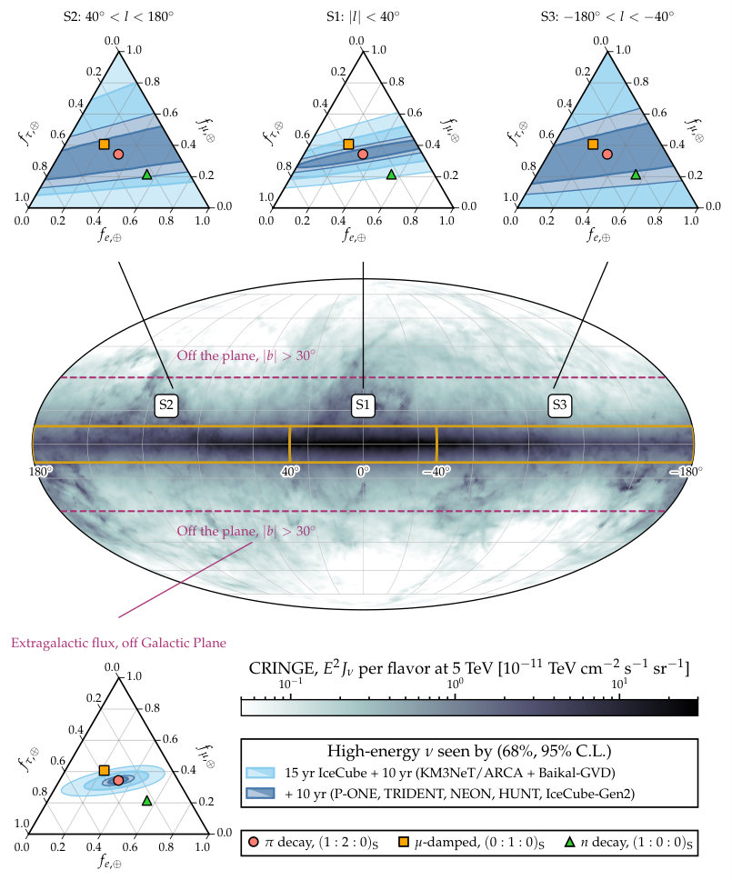
图注：银道沿线与河外高能中微子在地球端的味组成预测。三个银经分区均位于银纬绝对值8度以内，与河外通量一同拟合，包含各项系统误差。天空图仅用CRINGE通量作示意；实际预测取每区均匀亮度及IceCube测得的归一、谱指数。所有区域和河外源端均假定π介子衰变。各味三角图展示相应预测置信区，最亮的内银河系测量最好。 浅蓝为IceCube15年加KM3NeT与Baikal-GVD各10年，深蓝再加入其余五台10年；区域给68%和95%置信水平。圆点、方块和三角分别标π衰变、缪子阻尼、中子衰变基准；三角坐标均为地球端无量纲味份额。
怎么看这张图：比较长条的宽与长：径迹压紧缪子味，簇射难分电子与τ味，因而长条不是三个味都精确测量。天空示意图也不是实际采用的逐像素源模板。 展示台站互补导致的味方向退化及天空分区。
来源与置信度：arXiv HTML；source verified；https://arxiv.org/html/2611.34797v1/gp_three_segments_triangles.png
图2
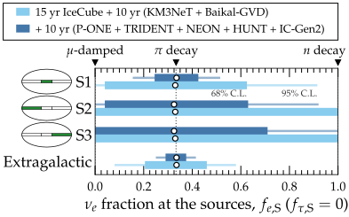
图注：银道各分区及河外源端的电子中微子份额。由图1地球端味组成反演，假定源端不产生τ味；混合参数在2040年预期误差内变化。所有区域的真实源端值均设为π衰变的1/3。内银河系在95%以上置信水平可由现有台站区分中子衰变；八台联合还可区分缪子阻尼源。 横轴为无量纲源端电子味份额；各行依次为S1、S2、S3和河外通量，较粗/较细横带对应68%/95%置信区。浅蓝为现有三台曝光组合，深蓝为八台组合，白圈标真实值1/3。
怎么看这张图：27%是对真实值1/3的相对68%精度，非27个百分点；一维源端限制比图1三味限制更紧还使用了无源端τ味假设。 直接支持核心精度和物理产生链判别。
来源与置信度：arXiv HTML；source verified；https://arxiv.org/html/2611.34797v1/source_fe.svg
图5
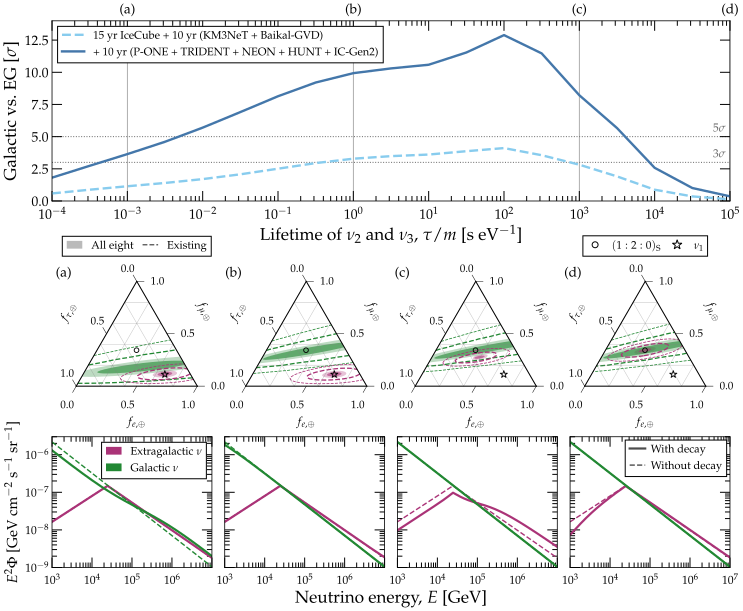
图注：两个较重质量态ν₂和ν₃不可见衰变时的银河系—河外对照。上面板为排斥两类通量共享、能量不变味组成的显著性；中间面板给四个标示寿命处的地球端味组成，三个银道分区共享一个组成，深浅区域分别为68%和95%置信区；下面板给内银河系与河外的全味强度，衰变和无衰变结果在10 TeV–1 PeV间相互归一。八台情景中，两种组成在超过七个数量级的寿命区间内相差大于3σ。 上图横轴为两个重态的共同寿命质量比（秒每电子伏），纵轴为σ；浅蓝/深蓝分别为现有三台/八台组合。中图绿色为银河系、紫红色为河外味区域；下图横轴能量以GeV计，纵轴E²全味强度以GeV每平方厘米每秒每球面度计，粗细线分别为有/无衰变。
怎么看这张图：显著性在中间寿命最强：河外已衰变而银河系尚未衰变；两端都相似时对照失去力量。此图采用两个重态等寿命及指定源分布，不能外推到任意衰变。 解释短/长基线对照的独特新物理用途。
来源与置信度：arXiv HTML；source verified；https://arxiv.org/html/2611.34797v1/decay.svg
强相关工作
银河系基准来自IceCube银道高能中微子观测及2026年沿银道能谱测量。前者提供簇射样本与响应，后者提供本文分区通量和谱形。本文增加的是利用全球径迹—簇射互补预测味测量，而非重新发现银河系中微子，也未对这些真实事件完成新的味拟合。
Bustamante与Ahlers 2019建立了从地球端味约束反推源端产生比例的方法；本文将它改写为频率学剖面并应用到银河系与河外的联合分析。Song等2021讨论未来味测量，全球中微子监测研究发展多台站互补响应；本文将空间分区、真实银河系亮度和味信息结合起来，科学目标比简单提高点源发现事件数更具体。
高能中微子作为宇宙磁场探针与高能中微子衰变限制分别对应本文的两类应用。新增的银河系参照可降低对固定河外源端味假设的依赖，但并不自动消除源群差异与传播新物理之间的退化。读者可沿“muon cooling flavor transition”“Galactic extragalactic flavor comparison”追踪更灵活源谱与味能量依赖的研究。
同一事件 / 同类源线索：
相似工作：
基础理论 / 方法工作：
相反观点 / 张力线索：
（未提供）
6. AT2024dky as an Off-nuclear Tidal Disruption Event Candidate
- 来源：arXiv / astro-ph.HE
- 链接：https://arxiv.org/abs/2611.33768
- 作者：Yuhan Yao, Ryan Chornock, Itai Sfaradi, Jinyi Shangguan, Raffaella Margutti, Robert Stein, Elena Maria Rossi, Yijia Zhang
- 公告 / 来源日期：2026-11-26
- 阅读层级：重点精读
- 评分：novelty 8/10，importance 8/10，relevance 8/10，final 9.00/10
- 推荐理由：偏核TDE候选的晚期射电紫外与宿主证据，为游离中等质量黑洞提供新检验对象。
中文题目：AT 2024dky：距星系中心 4.26 千秒差距的潮汐瓦解候选及其低质量黑洞线索
做了什么：作者在 ZTF 档案中放宽“必须位于星系核”的筛选条件，找到持续蓝色的暂现源 AT 2024dky。它位于红移 $z=0.0592$ 的大质量静止星系中，与星系中心相差 $3.724''$，对应投影距离 4.26 kpc。早期光变峰值为 $M_g=-18.50$，半高全宽约 29.1 日，峰后约 80 个静止系日颜色仍接近 $g-r\sim-0.1$。作者结合峰后两年多的 Keck 近紫外检出、VLA 离核射电检出、宿主低恒星形成率及 X 射线上限，逐项比较潮汐瓦解事件与多类超新星。
多条证据共同倾向恒星被离核大质量黑洞撕裂的潮汐瓦解解释，但缺少早期光谱，论文仍将其称为候选。晚期 10 GHz 辐射约 $1.26\times10^{38}\,\mathrm{erg\,s^{-1}}$，近紫外约 $6.74\times10^{40}\,\mathrm{erg\,s^{-1}}$，与长期盘或外流相容。较低的早期及晚期光度使作者偏向约 $10^5$–$10^6M_\odot$ 黑洞，但不同质量推断分散、依赖吸收与盘模型；这不是动力学测得的质量，也不能据此认定形成通道。
为什么重要：离核黑洞常缺少稳定气体供给，传统活动星系核搜索容易漏掉它们；恒星偶然被撕裂则能暂时照亮沉寂黑洞。AT 2024dky 的位置偏移远大于常见天体测量误差，说明放宽核区筛选有机会补回这种人群。科学增量在于把明显离核的位置与多波段分类证据连接，同时宿主中心还存在一个低光度活动核，表明候选黑洞与中心大黑洞不能简单混为同一对象。不过单个候选及非完整选择函数还不能给出离核黑洞发生率。
理论 / 观测 / 仪器方法价值：方法上最有用的是分层证据比较：持续蓝色先缩小候选类型，晚期射电、近紫外颜色与宿主恒星形成率再分别检验剩余超新星解释；任何单一诊断都保留反例和覆盖不足。晚期盘拟合还把单波段检出与 X 射线上限结合，并将后验光谱通过 Chandra 仪器响应检查，避免直接把计数率上限当成不依赖谱形的光度上限。这个流程可用于无早期光谱的暂现源，但不能把定性多证据优势伪装成已标定的分类概率。
为什么应该关注：离核潮汐瓦解提供探索游荡黑洞、低质量黑洞占据率和星系并合遗产的途径，也与高能暂现外流的长期射电和 X 射线演化相连。本源最值得跟进的是晚期近紫外是否持续衰减或成平台、射电谱和光变是否支持外流，以及更深 X 射线或高分辨成像能否约束盘及伴随恒星系统。本文没有高能中微子或 TeV 探测，现阶段价值在于建立值得持续追踪的低质量黑洞候选，而非给出多信使关联。
展开详细解读：文章讲解、背景、理论、重点章节、图表与相关工作
文章详细讲解
科学问题分成两层：这个暂现源是否确实离核，以及它是否由潮汐瓦解而非超新星产生。第一层有 Gaia、ZTF 与后续成像的独立位置支持，偏移约 3.72 角秒，明显大于约 0.1–0.2 角秒的典型或实测系统偏差。第二层更困难，因为没有早期光谱，且持续加热的相互作用超新星也可能保持蓝色。作者因此没有只靠颜色宣布分类。
作者先用两套不要求核区位置的档案筛选选中候选，重做 ZTF、ATLAS 强制测光和多带高斯过程光变，再取得 Keck 晚期成像、VLA 射电及 EP/Chandra X 射线观测。Keck 通过星系二维分解提取微弱点源，VLA 将暂现源位置与中心核射电源分开，Chandra 也分别测量两处。这些空间分离步骤十分重要，否则中心活动核会污染对暂现源的解释。
主要结果来自交叉约束：蓝色长时间稳定使普通超新星不利，晚期较强射电与潮汐瓦解相容，但仍允许某些 IIn；宿主整体极低恒星形成率进一步不利于大质量恒星爆炸；晚期近紫外亮而含红移 Hα 的 $R$ 波段未检出，又使典型氢相互作用超新星不利。每项都有例外，所以合起来是强烈支持而非逻辑上的绝对排除。X 射线未检出本身不能区分两大类。
质量和起源是下一层推断。平台光度关系、早期峰光度经验关系以及直接薄盘拟合给出不完全一致的质量，盘拟合还偏好极小初始盘质量，提示假设可能不充分。作者总体偏向光学潮汐瓦解样本中的低质量端，但未选定古老小并合、动力学抛射或原位形成。深图像没看到近期并合形态，也不能排除早期并合留下的残核。
关键结果是怎么做出来的
第一环是离核定位。宿主核 Gaia 位置与各目录的差异远小于暂现源偏移，Gaia 与 ZTF 暂现源位置彼此相差约 0.15 角秒。晚期 $u^{\prime}$ 点源相对早期位置偏约 0.2 角秒，但宿主拟合中心也有类似系统偏移，作者在纳入该项后判断位置相容。VLA 的第二个源直接落在早期暂现源位置，而另一个源对应核，支撑“不是中心活动核光变”的基本判断。
第二环是早期光变。强制测光按时间分段采用 1、2、5、7 日箱，对超额散度扩大加权平均误差，再用多带高斯过程插值。$g$ 峰位于 MJD 60372.37，静止系半高上升与下降分别 9.5、19.6 日。与 2455 个已分类、亮度及覆盖受控的 ZTF 暂现源比较，24/25 个 TDE 满足宽蓝色标准，而普通 Ia、II、Ibc 大多会变红；但 Ibn/Icn 的 6/6 和部分 IIn 同样通过，因此不能将颜色通过率直接当作本源 TDE 概率。
第三环是晚期射电。距首次强制测光检出 866 日，VLA 在 10 GHz 测得 $0.15\pm0.02$ mJy，误差含额外 10% 标定项。射电光度落在已知 TDE 晚期范围内，比普通超新星多处于极亮端。作者特别指出 Ibn/Icn 一年以上射电比较样本只有极少数，不能凭一个深上限排除整个类别。这使射电成为支持性证据，而不是独立的分类判决。
第四环是宿主和近紫外。统一宿主 SED 拟合得 $\log_{10}(M_{\rm gal}/M_\odot)=11.10^{+0.04}_{-0.07}$，过去100 Myr平均恒星形成率的模型相关95%上限为 $0.061M_\odot\,\mathrm{yr^{-1}}$。Keck 在858日测到 $M_{u'}=-13.07\pm0.09$，但 $M_R>-14.15$。蓝且亮的晚期源不易由普通老年星团解释，典型 IIn 的 Hα 红端增强也较难相容；不过部分剥离包层超新星晚期紫外很亮，Ia-CSM 的 Hα 也可能低于现有 $R$ 极限，正文保留这些例外。
第五环是 X 射线计数与模型。EP 源孔径9个计数对预期背景4.4，仅1.8σ，不报检出；Chandra 暂现源处零计数，90%计数率上限 $2.44\times10^{-4}\,\mathrm{s^{-1}}$。中心核8计数对背景1.58，对应单侧3.5σ的边缘检出，属于另一空间位置。把计数换成光度必须指定谱形，不能把中心核弱检出写成离核暂现源检出。
第六环是质量诊断的一致性检查。若 $u^{\prime}$ 正好是盘平台，经验关系得 $\log M_{\rm BH}=5.16\pm0.05\,\mathrm{(stat)}\pm0.75\,\mathrm{(sys)}$；峰值经验关系得 $6.36\pm0.53$；直接薄盘加 X 射线上限拟合为 $6.68^{+0.53}_{-0.55}$。后三者不构成三个相互独立且一致的精确测量。直接盘模型的盘质量中位数仅约 $1.7\times10^{-3}M_\odot$，与大量完整瓦解碎片进入盘的假设有张力；吸收或再处理可改变低质量模型的 X 射线约束。
展开背景、理论、公式、模型和章节导读
背景知识
潮汐瓦解发生在恒星靠近黑洞时，跨越恒星的差异引力超过其自引力，碎片部分逃逸、部分回落并形成辐射或外流。事件可照亮原来几乎没有持续吸积的黑洞，因此比稳定活动核搜索更适合气体贫乏环境。但光学辐射可能来自再处理、碎片冲击或盘，其光度并非总能直接换成黑洞质量。
离核黑洞可能来自小星系被大星系剥离后留下的核，也可能经过多黑洞引力弹弓抛射，或在致密星团中形成。黑洞并合的引力波反冲是另一种途径，但必须同时检查宿主中心是否仍有另一个大黑洞，以及离核候选质量是否与原中心匹配。本文中心仍有较大活动黑洞，因此不支持把暂现源简单解释为该中心黑洞整体反冲离开。
持续蓝色是一种有用但不唯一的标记。普通放射性加热超新星膨胀后冷却、颜色变红，而潮汐瓦解的再处理区或盘可保持较热；然而喷发物与致密星周介质持续碰撞也能不断加热，使某些 IIn/Ibn/Icn 超新星保持蓝色。多波段证据的作用就是区分这些不同维持高温的方式。
晚期射电常来自外流冲击周围介质后的同步辐射，TDE 和超新星都可产生。近紫外则可能直接暴露长寿命吸积盘，也可能来自晚期冲击；X 射线是否可见还取决于内盘温度和吸收。因此没有某一个“见射电就一定是TDE”或“不见X射线就没有黑洞”的规则，本文的分类必须按整条证据链理解。
基础理论 / 方法脉络
位置证据先于光谱模型。角距离乘角直径距离给投影间距，只是天空投影而非三维距离；系统位置误差要同时检查星系核和暂现源。本文的4.26 kpc偏移相对天体测量误差很大，所以“离核”稳健程度高于“TDE”分类和黑洞质量估计，这三层不能等同。
高斯过程是对稀疏、多带光变的统计插值，输出同一时刻各带流量及误差，方便求颜色、峰值和半高时间。它不是直接的潮汐回落物理模型，也不会仅凭拟合成功就证明 TDE。黑体拟合把这些带通流量约束为温度和发光半径，但在只有光学、缺少紫外峰时会有温度—半径退化。
晚期薄盘可在不同频段表现为 $f_\nu\propto\nu^2$ 的瑞利—金斯段，或多温盘中间段 $\nu^{1/3}$，颜色因此可以较蓝。内盘温度更直接控制 X 射线，所以在同样近紫外光度下，较低质量黑洞可能预测更强软 X 射线；这就是把近紫外与上限联合使用的原因。但若内盘被吸收或再处理，这种质量选择会变化。
经验光度—质量关系来自样本标定，会继承宿主质量标度关系及通量选择。若低质量黑洞事件本来更暗，通量受限样本只保留其亮尾，简单回归可高估暗弱事件的质量。作者还注意到全部核区 TDE 样本有正相关，而按光谱子类分别看不明显。因此“暗，所以可能低质量”是有信息的倾向，却不是不依赖样本的测量定律。
公式与推导
先给出与本文位置和光变处理相连的教学关系：
角度 $\theta$ 必须用弧度；本文采用的宇宙学与 $z=0.0592$ 把 $3.724''$ 转为4.26 kpc。后一式解释静止系半高时间与观测日历间隔的区别。
分箱强制测光按逆方差加权，其教学表达为
第二因子是作者在箱内超额散度时使用的误差膨胀；它不改变源分类，但防止不稳定测点获得过大权重。随后用 GP 在共同时间估计颜色，AB颜色的教学关系为
持续约 $-0.1$ 的颜色表示光学谱较蓝，不等于已经直接测出恒定的全部辐射温度。
为解释黑体拟合，可从普朗克谱及球面发光写出标准关系：
实际拟合须红移并积分各滤镜响应，而非只代一个中心波长。积分得到
论文报告 $T_{\rm bb}=12170^{+1820}_{-1340}$ K、$R_{\rm bb}=(9.08^{+1.67}_{-1.51})\times10^{14}$ cm 与 $L_{\rm bb}=(1.29^{+0.28}_{-0.16})\times10^{43}\,\mathrm{erg\,s^{-1}}$；发光半径是有效光球尺度，不能当成黑洞事件视界或恒星半径。
晚期盘的频率区间决定颜色，标准近似为
作者据此讨论 $u'-R$ 可以很蓝，与观测上限 $u'-R<1.08$ 相容；但仅有一个检出和一个上限，还不能证明一定处于哪一谱段。
本文式(1)使用已标定的平台质量关系：
在 $u^{\prime}$ 对应静止系 $9.2\times10^{14}$ Hz，插值得 $b\simeq8.41$，代入晚期光度得到5.16的对数质量。0.05 dex统计误差远小于0.75 dex系统散度，而且应用前提是单次晚期测量确实采到平台，不能省略。
薄盘模型把光度与爱丁顿尺度联系，附录采用
这用于图10比较不同质量模型的内区吸积率；$\eta$ 为辐射效率，并非本文另行测得的常数。X 射线观测更原始的是计数率，以下是响应折叠的教学表达：
$R(E)$ 代表对所用计数区间的仪器响应，$N_E^{\rm intr}$ 为入射光子谱；这解释相同内禀光度为何能给不同计数率。作者实际对一万条后验谱作吸收与响应折叠，仅0.29%超过观测计数上限，用来检查采用的光度硬边界，而不是证明所有可能谱形都受同一光度限制。
最后，旧恒星系统的上限由标准星等关系得到：
采用 $M_{R,\odot}=4.60$ 与老年星族 $\Upsilon_R=2.4$，论文得 $M_{\star,\rm cluster}\lesssim7.6\times10^7M_\odot$。这是所假定星族的伴随恒星系统上限，不是对黑洞质量的另一次测量。
模型拟合 / 应用方法
早期光变使用 ZTF/ATLAS 强制测光、基线修正和分时段分箱，多带 GP 提供颜色与峰时。黑体在 $\log T$、$\log R$ 上用均匀先验，范围分别为 $10^3$–$2\times10^5$ K、$10^{13}$–$10^{17}$ cm，并通过滤镜响应计算红移模型。原文 III.1 将构建 SED 的时刻写为 $\delta t=0$，而图1及后续称为峰值；这里沿用报告数值但不额外把两种时刻定义强行等同，保存这一文本口径差异。
Keck 分解对宿主、背景和 PSF 都作处理，用场星建立经验 PSF并与SDSS校准。$u^{\prime}$ 点源的统计误差通过改变背景重复50次拟合评估，且包含约0.08 mag零点不确定性；作者用有无点源模型F检验报告11.8σ，这只描述该图像模型下点源需要程度，不是TDE分类显著性。$R$ 未检出则固定位置逐步加PSF通量、重拟合宿主，以相对无PSF模型 $\Delta\chi^2=9$ 给3σ上限。
宿主质量和过去100 Myr平均SFR由 prospector 拟合，并对五个已知离核TDE宿主采用同一流程。SFR低值是模型相关95%上限，描述整个星系，不等于测出暂现源局部绝无年轻恒星。与相互作用超新星宿主比较显示明显环境差异，但仍存在低SFR异常对象；本文据此增强分类偏好，没有生成经过总体发生率校准的贝叶斯类别概率。
晚期 FitTeD 用相对论扩散薄盘，固定盘形成时刻于光学峰值，采样黑洞质量、自旋、初始盘质量、初始半径、黏滞时间与倾角。质量对数先验为[4,7.5]，盘质量对数为[-5,0]，初始半径对数 $r_0/r_g$ 为[1,4]，黏滞时间对数日为[0,3.5]；自旋在[-0.998,0.998]均匀，$\cos i$ 在[0,1]均匀。$u^{\prime}$ 用高斯似然，$R$ 和X射线上限作硬边界，故不是完整计数级联合似然。
特别要区分X射线数值口径：指定 $\Gamma=2$ 时 Chandra 0.1–10 keV光度上限约 $6.3\times10^{40}\,\mathrm{erg\,s^{-1}}$；盘拟合采用更宽松的内禀基准 $3.0\times10^{41}\,\mathrm{erg\,s^{-1}}$，再折叠后验谱验证。后验计数率95百分位 $1.09\times10^{-4}\,\mathrm{s^{-1}}$，低于观测90%上限，表明这一基准对所探索谱合理，而非所有谱都等价。
拟合的主要失败提示是盘质量太小：只有约3%后验达到 $0.04M_\odot$，且多近边缘朝向，初始半径与黏滞时间约束弱。若真实源仍有超爱丁顿外流或内盘再处理，直接薄盘假设可能把质量推高。峰光度关系也有通量选择和光谱类别退化。因此作者偏好的 $10^5$–$10^6M_\odot$ 应作为综合量级判断，不能选取某个最小误差条来宣称精确质量。
重点章节 / 结果段落怎么读
-
第II节与第III.2节、图2：先核对搜索不限定核区位置，比较不同仪器的核与暂现源坐标，建立离核判断，暂不跳到分类。
-
第III.1节与第IV.1节：看分箱、GP和控制样本选择，理解为何持续颜色比单个峰值亮度更有区分力，以及Ibn/Icn为何仍是竞争解释。
-
第III.3–III.6节及第IV.2–IV.5节：把晚期近紫外、射电、宿主环境与X射线各自的检出/上限分开，重点保留每种超新星反例及样本覆盖限制。
-
第V.2节配图9和附录图10：比较平台关系、峰值关系、直接盘拟合三种质量，不仅记中位数，还要看系统误差、X射线谱形和小盘质量张力。
-
第V.1、V.3、V.4节：区分中心低光度AGN与离核候选，理解为什么现有资料不能在古老小并合、动力学抛射和原位形成之间定论，并把恒星系统质量上限与黑洞质量分开。
关键图表与解读
图4
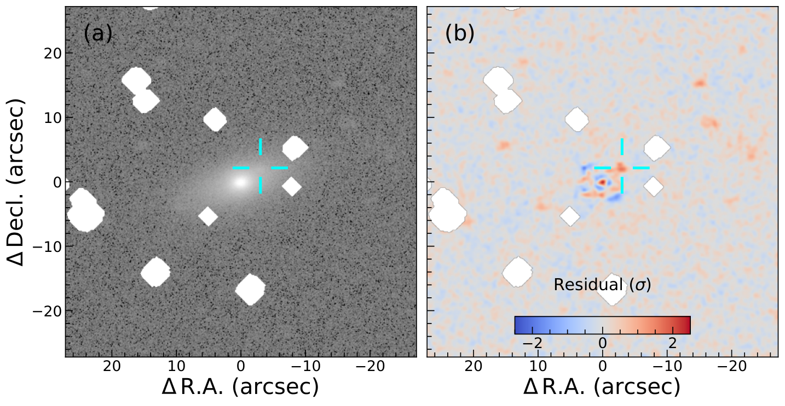
图注：Keck/LRIS 的 $u^{\prime}$ 波段图像（a），以及减去 GALFIT 最佳宿主星系模型后的残差（b）。为显示青色十字标出的暂现源，残差图额外用标准差为2像素的高斯核平滑。北向上，东向左。横纵坐标分别为相对赤经、赤纬（角秒）；右图色标为以噪声标准差表示的残差。
怎么看这张图：对照原图与宿主扣除残差，确认晚期近紫外点源确实来自离核位置。显示用平滑不能被当作独立提高探测显著性，位置和通量误差还要看正文的宿主模型及背景检查。 展示晚期近紫外源与宿主分离这一关键实测证据。
来源与置信度：arXiv HTML；source verified；https://arxiv.org/html/2611.33768v1/residual_U_band.png
图7
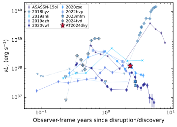
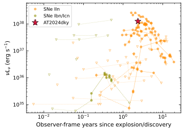
图注：AT 2024dky 约10 GHz的射电光度与比较源。上面板为文献中已有TDE的射电演化，下面板为相互作用供能超新星；各比较样本来源见正文。横轴为观测者系自瓦解/发现（TDE面板）或爆炸/发现（超新星面板）以来的年数，纵轴为 $\nu L_\nu$（$\mathrm{erg\,s^{-1}}$）。红星标出AT 2024dky，向下三角为比较样本上限。
怎么看这张图：本源在866日的点位于多例TDE的晚期射电范围，也不能排除射电明亮的IIn等对象。上下样本并非同样完整，Ibn/Icn一年后覆盖特别稀少，因此不能把某类未出现同亮度点写成严格排除。 支持分类的多波段证据，同时便于说明超新星比较的局限。
来源与置信度：arXiv HTML；source verified；https://arxiv.org/html/2611.33768v1/AT2024dky_radio_lc.svg；https://arxiv.org/html/2611.33768v1/AT2024dky_radio_SNe_8to10GHz.svg
图10
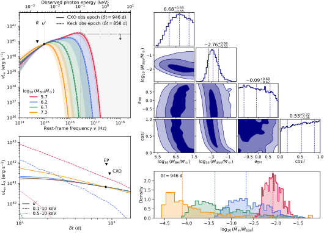
图注：用 FitTeD 对 AT 2024dky 晚期辐射作扩散盘建模。颜色分别标记 $\log_{10}(M_{\rm BH}/M_\odot)=5.7,6.2,6.7,7.2$ 附近±0.05 dex的后验样本。左上：Keck/LRIS与Chandra历元的内禀能谱，黑色符号为$u^{\prime}$检出及$R$上限，水平点线为采用的0.1–10 keV Chandra光度上限 $3\times10^{41}\,\mathrm{erg\,s^{-1}}$。左下：不同波段盘光变的中位数，与$u^{\prime}$和X射线限制比较。右上：对初始半径及黏滞时间边缘化后的黑洞质量、盘质量、自旋和$\cos i$后验。右下：Chandra时刻内区吸积率除以 $\dot M_{\rm Edd}=L_{\rm Edd}/(\eta c^2)$ 的分布，竖虚线为中位数。左上横轴为静止系频率（Hz），顶轴为观测光子能量（keV），纵轴为 $\nu L_\nu$；左下横轴为 $\delta t$（天），纵轴为带光度或 $\nu L_\nu$，单位均为 $\mathrm{erg\,s^{-1}}$。
怎么看这张图：同一近紫外点可由宽范围质量解释，差别主要体现在X射线和盘质量。看较高黑洞质量需要较小初始盘质量的退化，结合正文仅约3%后验达到0.04太阳质量，理解直接薄盘解释的压力。 展示质量推断并非精确一致测量及直接盘模型的适用边界。
来源与置信度：arXiv HTML；source verified；https://arxiv.org/html/2611.33768v1/cxo_posterior_sed_mass_bins.svg
强相关工作
Yao 等对 AT 2024tvd 的离核潮汐瓦解研究（2025，本文参考文献139，https://arxiv.org/abs/2502.17661）是这项放宽核区选择工作的直接背景。AT 2024dky 将搜索推到明显更大投影偏移，并通过档案颜色寻找遗漏候选。两者共同说明仅在核区寻找TDE会产生位置选择偏差，但本篇还没有公布完整候选样本与效率，不能据此定量修正发生率。
Cendes 等的长期射电TDE研究（2024，本文参考文献19，https://arxiv.org/abs/2308.13595）提供500–3200日仍出现射电辐射的观测背景，使本源866日检出具备比较基础。其作用是说明晚期射电并不罕见，而不是排除所有晚期相互作用超新星；本文对Ibn/Icn长期射电覆盖稀少的限制尤其值得保留。
Mummery 等的光学TDE标度关系（2024，参考文献87，https://arxiv.org/abs/2308.08255）与 FitTeD 相对论演化盘工具（2025，参考文献86，https://arxiv.org/abs/2408.15048）分别对应经验质量估计和直接物理拟合。两种路线在本源产生不同偏好，恰好暴露单次近紫外点、上限谱形和盘物质质量假设的作用，而非可通过简单加权平均消除的误差。
同一事件 / 同类源线索：
相似工作：
基础理论 / 方法工作：
相反观点 / 张力线索：
（未提供）
7. Black hole accretion flows as dark matter bolometers
- 来源：arXiv / astro-ph.HE
- 链接：https://arxiv.org/abs/2611.34172
- 作者：Ran Ding, Ningqiang Song, Cong Zhang
- 公告 / 来源日期：2026-11-26
- 阅读层级：重点精读
- 评分：novelty 8/10，importance 8/10，relevance 8/10，final 9.00/10
- 推荐理由：自洽加入暗物质电子冷却的吸积能量方程并约束散射，需分清暗物质分布与吸积退化。
中文题目：把 M87* 热吸积流当作暗物质量热计：电子冷却对轻暗物质散射的条件约束
做了什么：作者提出一种从吸积流热平衡寻找轻暗物质的方法：黑洞附近的暗物质虽然被引力加速，但亚 MeV 粒子的动能仍可能小于几 MeV 的热电子能量，弹性散射于是将电子能量带走。论文把这一冷却项加入 M87* 的双温、平流主导吸积流模型，重新求解电子和离子温度及射电至毫米波谱，再与 2017 年事件视界望远镜同期多波段核区观测比较。分析先拟合吸积流加喷流的无暗物质冷却基线，随后固定该组天体物理参数，扫描暗物质质量与散射强度。
在所采用的陡峭、非湮灭暗物质尖峰和固定基线模型下，暗物质冷却主要压低约 $30r_g$ 以内的电子温度与毫米波辐射。作者给出 90% 置信水平上限：在 $m_\chi=1$ keV 附近，重媒介和轻媒介参考截面约分别达到 $10^{-38}$、$10^{-37}\,\mathrm{cm^2}$。这是谱形允许多少额外冷却的条件约束，并非发现暗物质；它的强度尤其取决于黑洞附近暗物质密度及电子加热、吸积与喷流模型。
为什么重要：低质量暗物质在地面探测器中留下的能量常低于阈值，而高温天体可以反过来向它转移能量。本文把这种“看普通物质少了多少能量”的思路，落实到有电子与离子独立能量方程的热吸积流，避免只凭某个冷却时间与源寿命的粗略比较。毫米波同步辐射对电子温度高度敏感，使视界附近观测能够约束新的散射通道。但约束比地面实验强的说法应连同暗物质尖峰及固定天体参数假设一起引用，不能视为完全独立于天体环境的排除结果。
理论 / 观测 / 仪器方法价值：方法价值在于把微观碰撞积分、宏观热平衡与可观测光谱贯通：先对暗物质入射方向和热电子分布平均能量交换，再把体积冷却率加入电子方程，与吸积动力学和辐射转移一起求解。补充材料还检查离子温度、电子密度是否显著变化，帮助判断压低光谱究竟来自温度还是密度。该框架可扩展到其他暗扇区反应或其他低光度黑洞，但每次都须重新计算碰撞项、源的密度环境和辐射成分。
为什么应该关注：对高能天体与暗物质研究，本文提供了将射电毫米波与粒子散射连接的具体接口：高能电子的热分布既是辐射源，也是能量交换的探针。后续值得关注的是把额外冷却放进双温广义相对论磁流体模拟，同时拟合总谱、图像和偏振，以检验电子加热退化和暗物质分布假设。本文尚未做这种联合分析，也没有从 EHT 图像本身直接测出暗物质；当前结果来自同期核区谱与半解析吸积模型。
展开详细解读：文章讲解、背景、理论、重点章节、图表与相关工作
文章详细讲解
科学问题是能否利用低光度黑洞周围的热电子，而不是低温地面靶材，探测轻暗物质与电子的相互作用。对固定质量密度，粒子越轻，数密度越高；黑洞引力给予的动能又与粒子质量成比例。亚 MeV 暗物质在本文关注半径内比电子“冷”，可以充当额外热汇，导致原本应有的同步辐射减少。
作者选择 M87*，因为 2017 年 EHT 活动期有较完整的准同时核区射电毫米波数据，并且热吸积流解释毫米波辐射有独立物理基础。他们采用 riaf-sed 的稳态、轴对称、双温模型，含同步辐射、制动辐射和逆康普顿过程；用外部吸积率、电子直接加热份额、外流指数和喷流归一化拟合基线。加入暗物质后，不仅改光谱归一化，而是重新解热力学方程，使电子温度与辐射共同响应。
结果显示额外冷却主要影响内区电子，离子温度及由电中性维持的粒子密度变化较小；低频喷流仍在，所以大散射极限的谱趋近固定喷流分量。随着暗物质质量降低或截面增加，毫米波吸积辐射被压低，过度压低则与观测不符。重媒介在约 2 MeV 以下可比所比较的直接探测实验更敏感，轻媒介的限制则随质量增加更快变弱，反映散射矩阵元中的动量依赖。
限制是模型条件较强。暗物质采用绝热增长形成的陡峭非湮灭尖峰，并非观测直接测得的内区密度；暗物质速度采用各向同性的单一维里速度近似。暗物质扫描期间天体参数固定，未对电子加热与吸积率重新边缘化，也没有时变全相对论磁流体结构。作者建议未来联合图像、偏振与谱来增加稳健性，本文结果应理解为新方法及有明确假设的灵敏约束。
关键结果是怎么做出来的
第一环是观测与辐射成分分离。输入为 EHT 2017 活动期准同时的 1.7–230 GHz 多设备数据，基线同时包含吸积流和喷流。低频主要由喷流贡献，向毫米波吸积流份额上升，在约 230 GHz 的 EHT 波段占主导。正因为两者对额外电子冷却反应不同，仅看到低频谱拟合良好并不能证明内区热平衡正确，必须看毫米波段。
第二环是基线校准。补充材料表 S1 固定黏滞参数 $\alpha=0.3$、气压与总压比 $\beta=0.9$、绝热指数 1.5 及外边界条件，四个可变参数通过 MCMC 拟合。报告的全局最优 $\chi^2=67.8$；在 $5r_g$，电子温度约 $1.6\times10^{10}$ K、密度约 $1.7\times10^6\,\mathrm{cm^{-3}}$、磁场约 20 G，与文中引用的 EHT 单区估计相容。这是选定模型的校准，不应把该 $\chi^2$ 单独读成无条件优良拟合的概率。
第三环是微观能量交换。作者在流体参考系与质心系间变换电子和暗物质四动量，计算每次散射电子能量变化，再用暗光子交换的相对论矩阵元加权。补充材料明确保留电子失能与得能两种符号，因此净冷却不是预先把每次碰撞都强制视为散热；它来自给定质量、速度和电子温度分布的平均。
第四环是热结构响应。体积冷却率加在电子能量方程右侧，其大小又依赖求解得到的局部温度。图 S3 显示主要改变发生在内区，离子温度和密度相对稳定，支持“热电子降温使毫米波谱变暗”的解释。图2中的谱随散射增强逐渐接近固定喷流基线，是此自洽热响应的可观测后果，而不只是人为在高频端加一段吸收。
第五环是限制的统计口径。给定暗物质质量及参考截面，作者将预测谱与数据作高斯似然比较，得到 90% 置信水平上限。图3分别展示轻、重媒介，图4在 $\alpha_D=0.5$ 和 $m_\chi=m_{A'}/3$ 的固定基准下转换为暗光子混合参数，与 NA64 比较。在 $m_{A'}=1$ MeV 处约一个数量级的改善，只对应这一基准和天体模型，不是对任意暗光子理论都成立。
最后一环是适用范围检查。作者把轻媒介质量取 0.1 eV，避免严格无质量媒介的红外发散，并报告约 1 keV 以下媒介质量变化对其冷却约束影响很小。辐射模型展示截到 $10^{12}$ Hz，以免把可能由非热电子主导的更高频段强行纳入热模型。论文还明确较重暗物质可能转而加热等离子体，此时不能直接沿用“散射越强，谱越暗”的当前结论。
展开背景、理论、公式、模型和章节导读
背景知识
暗物质的引力证据并不确定其粒子质量或与普通物质的散射强度。传统直接探测看靶核或电子获得的反冲能，粒子越轻，常见实验的信号越容易落到阈值以下。天体能量收支提供互补思路：如果看不见的粒子能高效吸收普通物质热量，已观察到的发光物质便限制这种新散热不能过强。
低光度活动星系核通常没有薄而高效辐射的标准盘特征。热、稀薄、几何较厚的流体中，离子获得的大部分耗散能可以随物质落入黑洞，而不是即时辐射出去，这叫平流主导吸积。电子和离子的库仑耦合不足以维持相同温度，必须分别记账；本文的新冷却主要作用于负责辐射的电子，因此这种双温描述至关重要。
同步辐射来自磁场中运动的电子，内区热电子发出的低频光又会被吸收，形成对温度十分敏感的谱峰。源的温度小幅改变可以引起峰附近很大通量差异。与此同时，喷流也贡献射电辐射，所以把全部射电光都当成吸积流会错误估计冷却空间；本文显式加入喷流并使用其频谱形状作成分分离。
黑洞增长可能使原有暗物质晕在中心形成尖峰，但尖峰的斜率和归一化依赖形成史及粒子性质。本文选择非湮灭暗物质的陡峭尖峰来计算局部碰撞率。它是灵敏度的重要来源，也是关键系统假设：散射效应大致随暗物质数密度增加，较低或被破坏的尖峰会改变限值，不能只引用截面数值而省略源环境。
基础理论 / 方法脉络
首先比较能量而不是单纯比较速度。引力势给不同质量粒子相近的速度尺度，但动能与质量有关；在约 $5r_g$，MeV 级暗物质的典型动能约 0.1 MeV，而电子可具有数 MeV 热能。所以高速运动的暗物质仍可能从电子吸热。“冷”在这里指能量交换方向所需的分布条件，不是说暗物质速度小到可忽略。
吸积流能量方程记录耗散、离子—电子交换、平流和辐射。电子直接获得耗散的一小部分，其余先加热离子；冷却变化又会反过来影响局部温度和辐射率。本文是在这套方程中增加暗物质能量交换，而非让电子在固定温度下无限放热。给出修改后温度剖面，是从微观散射到真实光谱必须经过的步骤。
暗物质相空间分布简化为每个半径有一个维里速度、方向各向同性。电子则按局部温度的热分布平均。两体碰撞使用相对论运动学，散射后电子在质心系的方向决定其回到流体系后的能量；既有得能也有失能碰撞，净值由矩阵元与入射分布共同决定。
参考截面 $\bar\sigma_{\chi e}$ 是为了和直接探测文献采用共同参数化，不代表所有实际动量下截面都相同。重媒介时传播子近似常数，轻媒介时大动量转移受到不同权重；随着暗物质质量增加，轻媒介的能量交换效率相对重媒介更快下降。因此图3两面板不同的曲率有微观原因，不能当成两种独立天体温度模型造成的差别。
公式与推导
以下先沿用论文自然单位 $c=\hbar=k_B=1$。由引力半径与维里速度估算开始：
这给出暗物质能量与半径、质量的关系。它是判断可能冷却的标度，真正碰撞计算仍采用相对论四动量。
补充材料式(S1a)用外流指数 $s$ 描述向内损失的物质：
这里 $\rho$ 为气体质量密度，$H$ 为盘高度，$v_r<0$ 为流入速度；给定吸积结构才知道每个半径有多少靶电子。离子和电子的能量收支在加入暗物质后成为
其中所有 $q$ 都是单位体积、单位时间的能量变化率，$\delta$ 是直接电子加热比例。额外项只加入电子方程，但两种温度仍通过库仑交换和动力学耦合。
主文式(2)定义
正的 $\omega$ 表示电子给暗物质能量；热平均保留两种符号。由密度转成粒子数，作者采用主文式(5)的非湮灭尖峰：
此式仅用于文中内外截断之间，不能延伸到黑洞内部；更小质量意味着更多可散射粒子，同时每粒子动能更低。
两体运动学由补充材料式(S5)的总不变量确定：
下标 M 区别于外流指数 $s$，$\theta$ 是入射夹角。求质心系末态并反向洛伦兹变换后，得到每种末态的 $\omega$；式(S12)再积分为
其中 $p_*$ 是质心系动量，$d\Omega_*$ 为末态电子立体角。这一步将散射几率和实际交换能量相乘，才得到可放进热方程的率。
暗光子耦合用主文式(7)的参考截面表示：
这里 $\epsilon$ 是动能混合，$g_\chi$ 是暗耦合，$m_{A'}$ 是媒介质量。实际动量依赖另由
体现，$t_{\rm M}$ 为动量转移不变量；重媒介时近似一，轻媒介对大转移的响应不同。求出降温后，论文引用热同步谱峰的近似标度 $\nu F_\nu\propto T_e^7$ 来解释强灵敏度，实际谱由辐射转移计算，不把这一标度当成所有频率共同的精确公式。
最后的高斯谱比较可用教学形式写为
它说明模型与数据差异如何进入统计量；这里是对文中“高斯似然”的教学展开，不另行断言作者采用了文中未说明的协方差或阈值实现。本文扫描中的天体物理参数固定，故该上限不是把这些不确定性全部边缘化后的结果。
模型拟合 / 应用方法
输入观测是 2017 年 EHT 活动期准同时核区射电毫米波谱，拟合范围 1.7–230 GHz。流体模型包括稳态轴对称结构、$\alpha$ 黏滞和伪牛顿引力势，喷流谱形取已有模型，只允许一个频率无关归一化变化。作者把总模型谱截到 $10^{12}$ Hz，避免把可能由非热电子主导的更高频部分用热模型解释。
基线 MCMC 的可变参数为 $\dot M_{\rm out}/\dot M_{\rm Edd}$、$\delta$、外流指数 $s$ 与喷流归一化。表 S1 的范围分别是 $[5.5\times10^{-5},5.5\times10^{-3}]$、$[10^{-3},10^{-1}]$、$[10^{-2},1]$、$[0.25,4]$；其余动力学和外边界参数固定。图 S1 展示边缘后验与 68%、95% 可信区域，不能把这些基线参数的可信区间与图3暗物质截面的 90% 置信限混为一谈。
全局最优四参数的十进对数依次为 $(-2.300,-2.224,-0.468,0.158)$。作者报告 $\chi^2_{\min}=67.8$，但此处没有据此给出新的约化卡方或拟合优度概率；解读也不补造自由度。基线还与已有谱计算作复现比较，并检查 $5r_g$ 处的温度、密度、磁场与 EHT 单区估计相容，这些是模型正常工作的物理诊断。
随后暗物质扫描固定上述基线，逐点重新求热结构和谱，使用高斯似然给截面上限。固定喷流且忽略喷流暗物质冷却，作者指出若加入该冷却会进一步压低相同频段辐射；但这不消除吸积率、电子加热与暗物质密度等其他退化。不能因喷流这一项倾向保守，就称全部结果已经对天体系统误差保守。
密度尖峰是最需独立验证的输入：采用非湮灭分布、黑洞自旋参数 0.9375，内截断随极角约为 $1.5$–$3.5r_g$，外界约 $3.87\times10^5r_g$。本文没有对尖峰形成史、密度归一化和流体参数联合采样，也未利用偏振或干涉可见度收紧退化。未来稳健性检验应逐项改变这些输入，而不是仅重复同一固定基线的谱比较。
重点章节 / 结果段落怎么读
-
引言的能量比较：先核对 $K_\chi\sim m_\chi r_g/(2r)$ 与热电子能量，理解为何黑洞加速后的轻暗物质仍可冷却，而较重粒子可能加热。
-
第 II 节与补充 S1：把离子、电子热方程和喷流成分一起读，确认四个拟合参数、固定边界及毫米波吸积流占优的频段。
-
第 III 节与补充 S2：跟随能量变化的符号、入射角平均和质心系变换，特别检查密度尖峰与速度分布是假设输入，而非谱拟合测得。
-
图2、图 S3 与第 IV 节：先看内区电子温度下降，再看谱压低，最后看截面排除；这条顺序可避免直接把排除图当成未经模型转换的观测。
-
结论与图4：区分已经完成的固定基线谱上限、采用 NA64 参数基准的混合限制，以及尚未完成的 GRMHD、偏振和图像联合分析。
关键图表与解读
图2
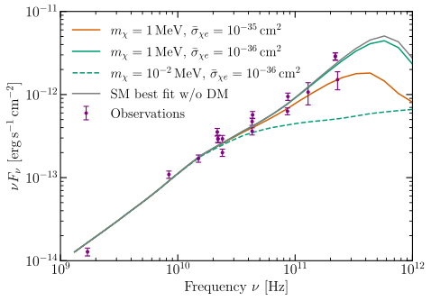
图注：M87* 预测能谱与观测比较。带误差棒的数据为 2017 年 EHT 活动期准同时取得、由文中所列射电与毫米波设备测量并汇编的观测。灰线为仅含标准模型过程的最佳拟合基线，彩线加入暗物质与电子散射造成的冷却。这里采用重媒介暗物质模型，轻媒介结果定性相似。横轴为频率 $\nu$（Hz），纵轴为 $\nu F_\nu$（$\mathrm{erg\,s^{-1}\,cm^{-2}}$）；均为对数刻度。
怎么看这张图：重点看毫米波端相对低频射电的压低：吸积流在这里占比更高，温度下降会显著降低辐射。大散射极限仍有固定喷流，不应把剩余通量误认成冷却失效。 把额外散射与实际可观测谱形连接，是排除限的直接证据。
来源与置信度：arXiv HTML；source verified；https://arxiv.org/html/2611.34172v1/spectrum_comparison.svg
图3
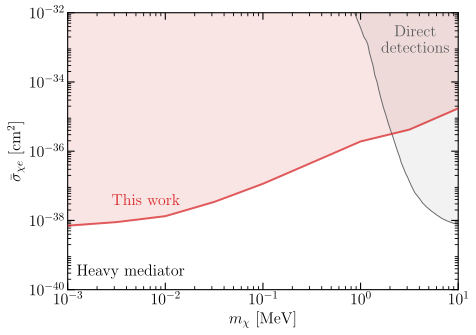
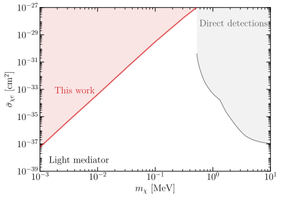
图注：参考暗物质—电子散射截面 $\bar\sigma_{\chi e}$ 随暗物质质量 $m_\chi$ 的 90% 置信水平上限，左图为重媒介，右图为轻媒介。红色区域为本文吸积流暗物质冷却给出的限制，灰色区域为已有直接探测实验限制。横轴为 $m_\chi$（MeV），纵轴为 $\bar\sigma_{\chi e}$（$\mathrm{cm^2}$）；两面板均为对数坐标。
怎么看这张图：比较两面板随暗物质质量变化的斜率，并把低质量处灵敏度与参考截面的动量依赖联系起来。红区以所采用尖峰和固定天体基线为条件，不能按颜色面积宣称无模型依赖的优越性。 展示主要粒子物理结果及轻重媒介的区别。
来源与置信度：arXiv HTML；source verified；https://arxiv.org/html/2611.34172v1/sigmadm_mchi_heavy.svg；https://arxiv.org/html/2611.34172v1/sigmadm_mchi_light.svg
强相关工作
Nemmen、Storchi-Bergmann 与 Eracleous 的低光度活动星系核谱模型（2014，本文参考文献75，https://arxiv.org/abs/1312.1982）提供吸积流加喷流的物理与数值基线。本文借此分离不同频率的辐射来源，并新增暗物质—电子碰撞项，而不是提出一个完全不同的 M87* 发射模型。公开 RIAF-DM 代码（https://github.com/CongZhang-123/RIAF-DM）是将其能量平衡方案扩展或复算的直接入口。
Algaba 等关于 M87 2017 年 EHT 活动期宽波段性质的工作（2021，本文参考文献13，https://arxiv.org/abs/2104.06855）是实际数据背景；EHT 同期多设备覆盖使谱形比较具有基础，但不是所有频点都来自相同视界尺度分辨率。Gondolo 与 Silk 的暗物质尖峰研究（1999，本文参考文献48，https://arxiv.org/abs/astro-ph/9906391）则提供中心密度增强的理论脉络。两类工作分别约束辐射输入和环境假设，不能用前者观测质量高来替代后者密度模型的验证。
文中还与 SENSEI、DAMIC-M 和太阳反射暗物质探测比较。它们检验相近的参考散射参数，却有不同能阈、传播和环境系统误差。本文增加的是热吸积能量损失通道，而不是让这些独立实验的限制自动消失；跨图比较须保持媒介、暗物质质量和密度假设一致。
同一事件 / 同类源线索：
相似工作：
基础理论 / 方法工作：
相反观点 / 张力线索：
（未提供）
8. Determining the Spin-down of the White Dwarf in J191213.72-441045.1 using Optical Time-Series Photometry
- 来源：arXiv / astro-ph.HE
- 链接：https://arxiv.org/abs/2611.34642
- 作者：Callum J. Hodge, Ingrid Pelisoli, A. J. Brown, N. Castro Segura, V. S. Dhillon, M. J. Dyer, J. A. Garbutt, M. J. Green
- 公告 / 来源日期：2026-11-26
- 阅读层级：重点精读
- 评分：novelty 8/10，importance 8/10，relevance 8/10，final 9.00/10
- 推荐理由：第二颗白矮星脉冲星首个自转减慢测量检验供能预算及同步模型。
中文题目：白矮星脉冲星 J1912−4410 首次测得自转减速：旋转能能否独自供给辐射？
做了什么：J1912−4410 是由快速自转白矮星与冷 M 型伴星组成的脉冲双星，自转周期约 5.3 分钟、轨道周期约 4.03 小时。作者用 2022–2026 年 ULTRACAM 共 28 夜高速多色测光，提取单个光脉冲的到达时间，先建模轨道相位相关的脉冲形状偏移，再以迭代二次星历测量长期漂移。$g$ 波段给出 $\dot P=4.13(8)\times10^{-12}\,\mathrm{s\,s^{-1}}$，$u,r$ 波段相容，而 $i$ 波段拟合不稳定，不能合并为同样可靠的确认。
由白矮星质量、半径估计转动惯量，作者得到自转损失功率 $9^{+6}_{-5}\times10^{25}$ W，与先前约 $10^{26}$ W 的系统总光度处于同一量级。如果完全靠旋转供能，就需要很高的能量转化效率；但功率的不确定性大，论文明确不能排除纯自转供能。另一个诊断是磁耦合 synchronar 模型所需表面磁场约 $110\pm50$ MG，高于已有约 50 MG 上限，形成模型张力。结果支持继续检验吸积等附加能源及白矮星脉冲星多样性，尚非唯一辐射机制的定论。
为什么重要：有周期性非热辐射并不等于一定由自转能供给。第二个已知白矮星脉冲星的长期减速测量，第一次让能量预算从类比 AR Sco 转为本源的定量检验。重要区别是本源自转功率没有像 AR Sco 那样明显高于总光度；其非热辐射可能需要高效率或额外能源。与此同时，计时直接测得的周期导数较精确，而旋转功率仍受半径和转动惯量控制，这种精度层级必须分清，不能把一个精确的减速数值转换成过度确定的能源结论。
理论 / 观测 / 仪器方法价值：可借鉴的是从脉冲形状变化中提取长期相位漂移的流程。作者先去除缓慢轨道光变，以高斯互相关提取峰值，再用轨道傅里叶项吸收约百秒的相位依赖偏差，迭代周期编号与二次星历并通过多色、线性对照和分年度处理检查。对长周期射电暂现源及其他双星脉冲系统，这提醒我们将发射几何造成的峰时变化与真实转动变化分开；同时也要保留经验模板、峰选择与散点剔除带来的方法依赖。
为什么应该关注：这类白矮星双星把磁场、伴星相互作用和非热粒子加速联系起来，是理解长周期脉冲源能源的少见实验室。值得优先跟进的是改善白矮星半径与总光度、获得更长基线的红端计时，以及同步多波段观测能否区分吸积活动和磁相互作用。对于高能天体研究，本文提供的价值是能源预算与脉冲计时诊断，而不是直接预言 TeV 或中微子信号；现有结果尚不足以认定所有白矮星脉冲星共享或必然不共享同一机制。
展开详细解读：文章讲解、背景、理论、重点章节、图表与相关工作
文章详细讲解
科学问题是 J1912−4410 是否像原型 AR Sco 一样，主要用白矮星旋转动能维持非热辐射。此前已有脉冲、磁场上限以及可能残余吸积的线索，但缺乏本源自转减速，无法把可用机械功率与辐射功率直接比较。作者因此把目标放在多年光学脉冲相位，而不是仅测一个短时周期。
数据来自 NTT 上的 ULTRACAM，多年共 28 夜，三个波段同时观测但 $r$ 与 $i$ 不能同时取得。作者作偏置、平场、同一比较星的孔径测光和太阳系质心时间改正，主分析选误差较小且覆盖最多的 $g$ 波段。去除轨道背景后，先用试验星历预测峰，再通过高斯互相关确定到达时间，更新周期编号、二次项和轨道残差修正直到收敛。
长期 O–C（观测减计算）曲线存在二次弯曲，得到正周期导数及负频率导数；$u,g,r$ 的线性与二次模型 F 检验支持二次模型。作者进一步把减速率转为旋转能损失，并与已有总光度比较；转动惯量中的质量和半径误差使功率范围较宽，所以能源推断比“存在减速”弱得多。磁耦合模型所需场强与已有上限的比较则是第二条、同样有模型条件的检验。
局限主要不是脉冲有没有，而是每个光峰究竟对应什么几何结构。轨道相位残差可达约 100 秒，远大于双星光行时，且出现跳变，可能来自自转和拍频脉冲重叠；简化模拟只能重现部分特征。$i$ 波段不稳定、轨道光变逐年改变，也提示宽波段发射并非固定模板。论文由此提出机制多样性的可能性，但明确需要更好能源估计和更多系统来检验。
关键结果是怎么做出来的
第一步控制光变中的低频背景。作者每夜减去中位流量，把全部数据按轨道周期折叠为 50 个相位箱，选各箱最低 7.5% 的点作为不含脉冲的底部背景，以十项傅里叶级数拟合并减去。这个选择旨在避免把脉冲本身当成轨道变化。附录 A 显示背景形状逐年变动，但按整段或逐年去除得到的最佳二次星历不变，是对长期结论的一项实际稳定性检查。
第二步提取可跟踪的峰。初始搜索窗为预测峰前后各 60 秒，互相关高斯宽度在 5–40 秒试验后选使残差最小的值，$g$ 波段为 29.3 秒。峰在窗口边缘或不比两侧更高时剔除，多候选时选最接近预测者；到达时间误差由蒙特卡洛并结合曝光时间估计。这里强调的是峰时估计与周数连接，不能只用一次全局周期图代替长期计时。
第三步识别轨道相关计时偏差。初始二次星历的残差按轨道折叠后出现高度不对称图形，最大变化约 100 秒，相当于约 43 个太阳半径的光行距离，是系统轨道间距约 36 倍。作者因此排除单靠轨道光行时解释，并加入十项傅里叶修正，搜索窗扩大到 180 秒。每轮先拟合、掩去偏离超过 30 秒的高散度点、再拟合更新星历，这些步骤共同定义最终计时估计。
第四步验证二次项。最终 $g$ 波段星历周期为 $0.00369680055(5)$ 日，二次系数为 $7.63(15)\times10^{-15}$ 日每周期数平方，误差来自 bootstrap。周期零点放在数据中部以减小周期与导数相关性，附录 B 的 MCMC 检查与最佳星历一致。独立从线性星历重新迭代后，$u,g,r$ 的 F 检验均支持二次项；正文未给此处可直接引用的具体 $p$ 值，因而不再补写“多少 sigma”。
第五步核对能源。以既有质量、半径代入转动惯量，蒙特卡洛传播得到旋转功率；95% 范围约 $10^{25}$–$2.2\times10^{26}$ W。作者估计其低于 $10^{26}$ W 的概率为 59%，这并不足以排除纯旋转供能。真正与 AR Sco 的差别是本源缺少一个数量级的明显功率余量。若辐射需要接近百分之百效率，吸积或其他来源便值得进一步检验，但尚未被本篇计时直接测定。
最后检验模型而非只比功率。采用 synchronar 模型中的磁转矩条件，结合伴星半径、轨道间距和减速率，得到最低场强 $110\pm50$ MG，与约 50 MG 既有上限存在张力。作者还用自转与拍频的两列高斯脉冲合成数据，产生轨道周期性及跳变残差，却没有精确重现真实图形。因此该模拟是机制可行性的提示，不是已成功拟合出唯一的两个发射区。
展开背景、理论、公式、模型和章节导读
背景知识
白矮星是低中质量恒星演化后的致密残骸，其体积远大于中子星，磁层中的成对粒子产生条件也不同。所谓白矮星脉冲星，是观察到与白矮星自转或双星拍频相关的宽波段周期辐射，并不意味着它与传统中子星射电脉冲星拥有完全相同的辐射机制。其伴星可以参与磁相互作用并提供粒子，因此双星几何不可忽略。
原型 AR Sco 的白矮星自转约 1.95 分钟，轨道约 3.56 小时，具有高线偏振的光学脉冲和相对弱的吸积证据。其自转功率高于总光度，为旋转供能提供了较宽余量。J1912−4410 的自转和轨道周期更长，且有可能残余吸积的 X 射线线索，所以简单把 AR Sco 的解释移植过来需要独立检查。
自转频率是星体转动的频率，拍频则反映自转与轨道相对运动。磁结构周期性扫过伴星时，辐射可能按两者差频调制；在观察者看来，自转与拍频成分叠加会改变单次光峰位置，即使真实转动十分稳定。因此“峰的到达时间”与“刚性转动的几何标记”并非始终一一对应。
长期计时通过把实际到达时间与固定周期预测比较，累积很小的周期变化。周期导数虽然微小，多年累积成可测相位弯曲；而轨道几何与脉冲形状会造成更大但周期性的偏差。先分离这些时间尺度，才能让二次弯曲成为自转减速证据，而不是采样不同轨道相位的假象。
基础理论 / 方法脉络
若转动周期缓慢变化，每经过一圈比上一圈略长，脉冲相对线性星历的延迟随周数近似二次增长。二次项的正号意味着周期增长，即自转减速。该近似假定在四年数据内高阶导数不必显式建模；本文没有报告需要额外长期高阶项，因此解读沿用其二次方案，不扩展成复杂转矩变化模型。
到达时刻还叠加轨道相关形状项。光行时必须受轨道尺度限制，其对应距离不可能远超双星间距；本文约百秒残差正因此指向发射几何或叠加信号。傅里叶级数可以经验表示这种周期变化，但它本身不识别真实发射位置，尤其残差看似分成六段的结构可能被拟合放大。
旋转动能依赖转动惯量，而非仅依赖周期。对白矮星，惯量需要质量、半径及内部结构系数；半径以平方进入，测量误差往往在能量预算中放大。本文周期导数约百分之二精度，却有约 31% 的半径误差，说明继续增加几个计时点不一定最有效地解决能源问题，独立改善恒星参数更关键。
synchronar 模型把白矮星磁层与伴星大气耦合，磁重联加速粒子并耗散旋转能。它必须提供足够转矩，与测得的角动量损失匹配；这使减速成为所需磁场强度的诊断。本文用既有模型方程求最低场强，结论依赖该机制和几何，并非不依赖辐射模型的磁场直接测量。
公式与推导
先用缓慢变化周期作教学展开，$E$ 为整数周数、$T$ 为到达时刻，忽略高阶导数时
这一关系也是本文由二次系数求周期导数的依据；若 $T,P$ 用日，$C_2$ 也用日，$\dot P$ 的日/日等于秒/秒。原文式(1)给出
它表示已经处理轨道残差后的长期星历；括号为末位数误差。因而
正号说明变慢，不是转速增加。频率转换按原文式(2)：
日制周期在代入 Hz 时须换为秒，避免把星历的日单位直接用于功率计算。
本文所报减速时间尺度是
这是当前转速变化尺度，不是已测得的真实年龄；也不要自动替换成某些中子星偶极制动语境中的 $P/(2\dot P)$。忽略观测期内惯量变化，标准旋转能及正的损失功率为
这一教学微分给出原文式(3)。周期导数更大并不单独保证功率更大，还要比较 $P^{-3}$ 和惯量，不能只按两源 $\dot P$ 比例推断能源。
作者用结构关系估计惯量：
这里 $M,R$ 是白矮星质量、半径，$k$ 为所采用恒星结构近似的系数。由此得到 $L_{\rm sd}=9^{+6}_{-5}\times10^{25}$ W；半径不确定性经平方进入，使精确计时并不等于精确功率。
为理解能源要求，可作明确的教学诊断
该中心值比值不是新的拟合结果，也不意味着效率已经精确测定大于一；实际功率范围宽，59% 的低于光度概率不构成排除纯自转的强证据。若有其他能源，所需旋转转化效率可下降。
最后把残差与几何相连。以下为解释用关系：
其中 $M_2$ 是伴星质量、$a$ 是轨道间距。约 100 秒残差对应约 43 个太阳半径，远超由开普勒定律得到的间距，因此不能全归于光行时；相近的自转与拍频脉冲叠加则可在不改变实际轨道尺寸的情况下移动观测光峰。
模型拟合 / 应用方法
预处理对所有观测保持同一比较星，去掉坏计数、时间不可靠的首帧及中位绝对偏差大于 7 的异常点。轨道背景取每相位箱最低 7.5% 的点，是为减少脉冲污染而作的经验选择；作者经过试验和目检设置这些阈值，本文没有给出对所有阈值联合边缘化的概率模型。因此复用方法时应同时保存阈值和覆盖情况。
峰时拟合以已有线性星历及 AR Sco 导数的数量级作初值，不是把 AR Sco 的导数强加给本源。每轮从局部互相关找峰、分配整数周期，再用 Levenberg–Marquardt 算法拟合二次项。零周数选在数据中部降低参数相关；到达时误差由蒙特卡洛评估，最终系数误差来自 bootstrap，另用 MCMC 检查三系数相关性与结果一致性。
轨道相位残差由十项傅里叶级数表示，加入后扩大峰搜索窗到 180 秒。每次迭代先拟合，再掩去超过 30 秒偏差的高散点，第二次拟合用于更新初值；收敛定义为相邻星历变化不超过误差。这里的经验轨道修正很重要，却没有自动解释残差来源；它可能同时吸收发射区可见性、自转与拍频干涉等多种物理。
稳健性证据包括 $u,g,r$ 独立结果一致、线性模型从头重复拟合后 F 检验支持二次模型，以及轨道背景按年或整体去除不改变最佳二次星历。相反，$i$ 波段常不收敛且结果不一致，虽然其夜数比 $r$ 更多，不能简单全归因于点数不足。作者提出波段依赖的峰时或发射区可能性，但未确定原因；因此不把四波段描述成全部确认。
能源和磁场检验使用既有恒星参数，误差经蒙特卡洛传播，主导项是质量和半径而非计时系数。旋转功率的 95% 区间与总光度重叠；磁场需求 $110\pm50$ MG 与约 50 MG 上限也应称张力，不补造统计排除显著性。简化两高斯脉冲模拟使用典型宽度 70 秒、相对振幅 0.04、噪声 0.002 等设置，证明能产生大幅峰时跳变，却不是对完整数据的生成模型拟合。
重点章节 / 结果段落怎么读
-
引言与第2节：先分清 J1912−4410 的主自转信号与 AR Sco 的主拍频信号，再核对 28 夜覆盖、同时观测波段及为何以 $g$ 为主。
-
第3节配图2：跟随轨道背景去除与峰识别，关注最低7.5%选点、搜索窗和高斯宽度为何影响计时，而非只记仪器名称。
-
图3到图4及式(1)：先看轨道相关的大残差如何建模，再看多年二次弯曲；附录 B 的相关性检查帮助理解星历误差口径。
-
第4.1–4.2节：把周期导数、转动惯量、旋转功率、总光度和最低磁场依次连接，特别保留不能排除纯自转供能的声明。
-
第4.3–4.4节与附录 A/C：用人工双频脉冲理解残差机制的可能性，再看红端拟合失败和年际光变；这些是下一轮观测的重点，而非可删掉的技术细节。
关键图表与解读
图4
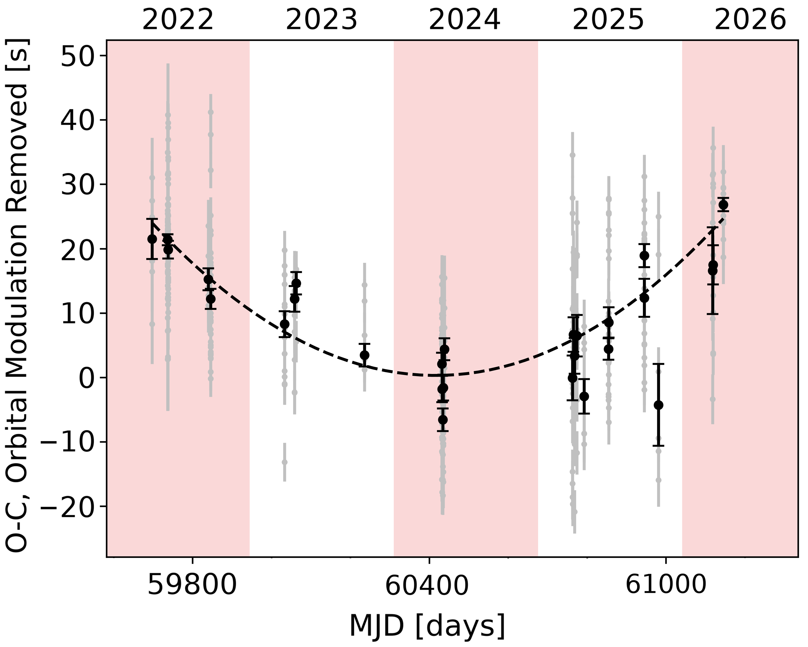
图注：$g$ 波段脉冲到达时刻减去线性星历、并校正图3轨道相位残差后的 O–C 图。灰点为单个到达时刻数据；黑点按观测夜分箱，表示平均 O–C，误差为箱内均值标准误。虚线为二次拟合；红白交替背景区分不同观测年，年份标于上方。横轴为MJD（天），纵轴为去掉轨道调制后的O–C（秒）。
怎么看这张图：看多年曲率而非只看夜内散点；正二次项对应周期逐渐增长。夜平均有助于展示趋势，但误差不等于已包含所有脉冲形状系统误差；u、r的独立相容性提供补充支持。 直接支持首次长期自转减速的主要结果。
来源与置信度：arXiv HTML；source verified；https://arxiv.org/html/2611.34642v1/Figures/OminusC_proper.png
强相关工作
Pelisoli 等发现 J1912−4410 的工作（2023，https://arxiv.org/abs/2306.09272）建立从射电到 X 射线的 5.3 分钟脉冲白矮星双星背景，也提供本文的初始星历、轨道参数与总光度量级。其紫外后续研究（2024，https://arxiv.org/abs/2311.05558）给出本文功率和磁场比较所依赖的恒星参数。本文新增的是四年计时的长期减速，未独立重测这些输入，因此能源限制仍继承它们的不确定性。
Pelisoli 等对 AR Sco 的长期测光与光谱（2022，https://arxiv.org/abs/2208.08450）提供峰识别和周期连接的方法来源，也是比较减速与轨道残差的主要对照。Katz 的 synchronar 模型（2017，https://arxiv.org/abs/1609.07172）把能量耗散放在伴星大气磁相互作用中，本文用实测减速检验其所需转矩和磁场。差别在于本源功率余量较小、磁场需求与已有上限有张力，尚不能据此宣布原型的所有机制已经被否定。
同一事件 / 同类源线索：
相似工作：
基础理论 / 方法工作：
相反观点 / 张力线索：
（未提供）
9. Screening of New Abelian Long-Range Forces
- 来源：arXiv / astro-ph.HE
- 链接：https://arxiv.org/abs/2611.34838
- 作者：Marco Costa, Andrey Shkerin, Ananda Thomlinson
- 公告 / 来源日期：2026-11-26
- 阅读层级：重点精读
- 评分：novelty 8/10，importance 8/10，relevance 8/10，final 9.00/10
- 推荐理由：Higgs介导电荷屏蔽改变天体长程力约束，揭示传统上限适用条件。
中文题目：给长程矢量力加入希格斯机制后：天体电荷屏蔽如何改写第五力与中微子约束
做了什么：长程新力的许多天文限制，把恒星或地球的总电荷直接代入固定质量矢量场的势。但若这个质量来自希格斯机制，带新电荷的希格斯场会被巨大天体电荷激发，反过来抵消源场。本文在阿贝尔希格斯模型中联立求解静态标量场与矢量势，区分由自相互作用支撑的薄壳屏蔽和由空间梯度支撑的屏蔽，再把结果重新映射到等效原理实验、中微子振荡和双星计时的既有观测限值。
结论不是所有第五力限制同时失效。对于轻媒介的 $B-L$ 力，MICROSCOPE 弱耦合边界约 $g\sim10^{-25}$ 相当稳健，但强屏蔽会把作用程缩到卫星轨道以内，重新开放部分更大耦合区间；地面 Eöt-Wash 又覆盖其中一部分。太阳中微子对电子味力的最强限制较易被削弱。影响最大的是 $L_\mu-L_\tau$：在本文理想化中子星模型及对应参数范围内，希格斯屏蔽可消除原先的偶极辐射与近星点进动约束。这里是重新解释已有实验，不是发现新力。
为什么重要：质量很小并不自动意味着某个具体源产生的力很长程。实验真正测量的是环境中的势或势梯度，而后者由质量产生机制与天体电荷共同决定。本文把“仅给矢量玻色子加质量”的 Proca 近似，与包含额外动力学自由度的理论明确区分，显示原先二维质量—耦合排除图还隐含希格斯质量假设。尤其是中子星缪子数巨大，哪怕极小的希格斯响应参数也可能使线性源电荷近似失效，因此不能直接把最强双星上限当成所有紫外完备模型的共同结论。
理论 / 观测 / 仪器方法价值：可借鉴的是先求环境响应，再比较实验量的流程：从天体密度、半径和总电荷出发，求两场的边值问题，按实验位置计算 $-gV'$ 或 $gV$，最后套用已知力限值或物质势限值。解析渐近式提供筛选参数区和检验数值解的工具；薄壳与梯度两种机制的分界，则解释为何某些界限随希格斯质量持续变化，另一些趋于饱和。这种方法适用于评估环境相关新物理限制，但局部吸引质量、多源非线性叠加和非均匀物质需要单独建模。
为什么应该关注：中微子振荡中的额外味势和紧致双星的非引力能量损失，都常被用来寻找标准模型之外的相互作用。本文提醒相关读者：把观测精度提高转成更强耦合限制之前，需要确认被约束的源电荷是否仍等于粒子数。值得跟进的是中子星旋近与引力波波形中的动态屏蔽，以及希格斯参与中微子质量产生时的附加作用；本文尚未给出这两种情形的完整预测，也没有直接讨论高能中微子望远镜的事件率。
展开详细解读：文章讲解、背景、理论、重点章节、图表与相关工作
文章详细讲解
科学问题是观测限制究竟限制了哪一种长程力理论。Proca 理论只保留固定质量矢量场，源的粒子数决定外部 Yukawa 势；阿贝尔希格斯模型还包含带电标量，它在天体周围可以偏离真空值。作者固定真空矢量质量，用无量纲比值 $\tilde g=g/\sqrt\lambda=m_V/(\sqrt2m_\phi)$ 描述新增自由度，考察同一实验上限如何随这个比值改变。
作者先采用静态球对称源，给定中心正则及无穷远真空边界条件，解相互耦合的两条场方程。强屏蔽要求标量幅度明显超过真空值、环境矢量质量乘源半径远大于一。标量的有效康普顿波长若比源小，其内部可近似常数，由势能平衡得到薄壳；若比源大，梯度项不能忽略，得到另一种标度。两者都使矢量势小于直接累加总电荷的结果，但外场形状和实验灵敏度不同。
关键结果分三类。地球第五力的弱耦合排除起点仅小幅移动，但在轻希格斯情况下，继续增加耦合反而令卫星位置的场指数减小，排除区因而有上下两侧。中微子测量的是势能而非力，太阳和地球在不同参数处进入屏蔽，最严格的太阳来源约束可先消失。中子星则因缪子电荷大，在远小于地球屏蔽所需的 $\tilde g$ 下已受影响，屏蔽后的有效电荷随耦合增加而降低，偶极辐射和进动限制不再单调。
局限直接关系到这些结论的可迁移性。地球用均匀球体近似，太阳采用指数电子密度，中子星用均匀缪子密度及两种状态方程。局部扭秤源的非线性屏蔽尚未完整计算，作者因此不画部分参数区的界限；没有计算希格斯与中微子的额外直接作用，也未把静态解推广为完整旋近波形。下一步应针对这些真实源几何和动态响应重算，不能把图中的未排除区解释为已被所有其他实验允许。
关键结果是怎么做出来的
第一步建立源与模型的对应。$B-L$ 的中性物质电荷主要由中子数给出，电子味差的地球和太阳电荷来自电子；$L_\mu-L_\tau$ 的显著宏观源则是含缪子的中子星。作者给希格斯单位新电荷，不额外引入与普通物质的直接耦合，故新增响应由规范相互作用和标量自耦合控制。理解各实验使用哪个源，才能理解屏蔽开始的不同阈值。
第二步用解析极限给数值结果定标。薄壳内部标量的诱导电荷恰好补偿均匀源密度，但表层仍留下外场；重希格斯相对矢量场能迅速跟随局部势，远处外场保留带对数修正的近库仑尾。轻希格斯相对缓慢变化，矢量场则在增强后的环境质量尺度上衰减。梯度屏蔽中内部没有逐点精确抵消，却仍可参数上有效抵消，不能把“无薄壳常数解”误读为“无屏蔽”。
第三步映射地球实验。本文取地球半径约 6300 km、中子数 $2\times10^{51}$、MICROSCOPE 高度约 700 km。对于 $m_V\lesssim10^{-13}$ eV，弱耦合边界约 $10^{-25}$ 仅有数量级一的改变；$\tilde g\gg1$ 时，卫星对 $g\gtrsim10^{-24}$ 的源场可能失去灵敏度。结合地面扭秤后，作者在适用区间得到约 $10^{-24}\lesssim g\lesssim10^{-23}$ 的重新开放窗口。它来自两种实验空间尺度不同，不是把整个排除曲线简单整体下移。
第四步处理振荡。作者将已有实验允许的额外太阳、地球势能分别取为约 $10^{-11}$ eV 和 $3\times10^{-14}$ eV。太阳中微子取产生区近中心的势，地球中微子取近地表势，超轻媒介还需计算太阳势传到地球轨道的贡献。太阳自身限制及太阳远场在 $\tilde g\gtrsim10^{-4}$ 开始显著受影响，地球来源约在 $10^{-1}$ 才开始改变，随后趋于与等效原理限制可比。图2把这三种物理来源组合，不能只按“太阳/地球数据”两条名称理解。
第五步检验双星。在 $m_V\ll10^{-19}$ eV 的示例中，作者用 J0737−3039 与 J1738+0333，并以 BSk22、BSk26 状态方程估算较乐观和较保守的缪子份额。两颗星进入屏蔽的先后不同，偶极矩可以先过零再反号，导致排除区出现缺口；近星点进动则因屏蔽本身改变反平方律而在部分区域增强。数值势与解析的楔形边界标度一致。总体上，偶极和进动限制分别可在约 $\tilde g\gtrsim10^{-16}$、$10^{-13}$ 后消失，具体临界值依赖双星、状态方程与媒介质量。
展开背景、理论、公式、模型和章节导读
背景知识
第五力是对已知四种基本相互作用之外作用的统称，并不指定某个粒子。若新矢量场耦合到重子数与轻子数的组合，宏观物体即使电中性，也能对新力带电。等效原理实验比较不同组成物体的加速度，利用其新电荷与质量比不同来寻找额外力；因而它对源场大小和试验物体组成都敏感。
质量为 $m_V$ 的自由媒介在真空中通常具有约 $m_V^{-1}$ 的作用程。Proca 模型把这个质量看成给定参数，可以很好描述某些低能现象；但它没有交代产生质量的额外自由度是否在实验环境下被激发。希格斯机制把质量与带电标量的真空幅度联系起来，源场改变标量幅度时，局域有效质量也随之变化。这就是本文需要超越固定质量势的原因。
屏蔽的物理图像类似让一团反号诱导电荷围住大电荷源：减小远场可降低场能，但形成云团需要梯度能和自相互作用能。哪一种能量占主导，决定云团如何分布。这里不是简单把天体内部电荷消除，也不是普通等离子体的热德拜屏蔽，而是经典带电希格斯场的非线性响应。
中微子振荡测量各味传播相位的差，额外味相关势即使没有可测宏观加速度，也能改变振荡。双星计时则通过轨道周期变化或近星点运动探测额外辐射和非牛顿势。它们探测同一新场的不同函数，因此受屏蔽影响的方式各异；不能把某一实验的有效耦合上限原样移给另一实验。
基础理论 / 方法脉络
模型采用自然单位，标量幅度、势与质量均有能量量纲，耦合 $g$ 和 $\lambda$ 无量纲。固定新希格斯电荷为一后，真空参数关系把新增自由度压缩成质量比 $\tilde g$。当标量无限重而矢量质量保持固定时，标量无法响应环境，回到 Proca 极限；这提供了数值解最直接的基准。
静态球对称近似把问题降为径向边值问题。中心导数为零避免奇点，无穷远标量恢复真空、势归零。源内部矢量势将标量有效势的最低点推向较大的幅度，而更大幅度又提高矢量质量、压低矢量势。需要联立求解正是因为这是一条自洽反馈链，不能先任意选择一个屏蔽因子再乘在线性答案上。
两个无量纲长度判断机制：$m_{V,\rm eff}R\gg1$ 保证源可以有效屏蔽，$m_{\phi,\rm eff}R$ 决定标量是否有足够空间在内部达到近常数。后者大时可忽略内部梯度，后者小时必须由梯度支撑。由此得到薄壳条件 $Ng^2/\tilde g^2\gg1$ 与梯度条件 $Ng^2/\tilde g^2\ll1$；梯度机制只在 $\tilde g\gg1$ 有相应强屏蔽区。
从解到观测还要区分势、梯度和有效电荷。等效原理实验在具体位置测力，中微子传播敏感于势能，双星辐射敏感于两星电荷质量比的差。远场有效电荷在强屏蔽中不再正比于真实粒子数，甚至随 $g$ 增大而减小；因此排除区可以有封闭上边界、缺口和楔形，而不必是传统单向上限。
公式与推导
下面按原文方程串起机制；自然单位中长度为能量的倒数，$N$ 是源的总新电荷数。先由真空质量定义得到
因此固定 $m_V$ 并不能固定环境响应，仍须给定 $m_\phi$ 或 $\tilde g$。
原文式(2)给出标量幅度 $f$ 与时间分量势 $V$ 的方程：
正的 $V^2$ 项使 $f$ 增大，于是 $m_{V,\rm eff}=\sqrt2gf$ 超过真空质量。该反馈是屏蔽的起点，边界条件是 $f(\infty)=v,V(\infty)=0$ 及中心导数为零。
在强屏蔽薄壳内部忽略梯度和 $v^2$，先得 $f^2=2\tilde g^2V^2$，再由均匀密度 $n=3N/(4\pi R^3)$ 得原文式(4)：
内部诱导项 $-2g^2\bar f^2\bar V=-gn$ 抵消源项，只留下边缘贡献；这一步仅适用于两种有效质量乘半径都远大于一。
重希格斯相对矢量场的外部近似为原文式(5)：
它使用近表面平面近似，要求 $r-R\ll R$；不能把这个表达式无条件外推到地球轨道。更远处在真空质量截断前，原文式(6)给出
有效电荷主要由耦合决定而非继续随 $N$ 线性增长，对数因子在双星进动问题中不能丢掉。
轻希格斯相对缓慢变化时，矢量势近似为原文式(7)：
有效质量控制近源范围内的衰减，故增大耦合可能让远处实验看不到源。梯度主导时，令 $\Delta f\sim f/R^2$ 与相互作用平衡，则原文式(8)给出
这使 $g\bar V$ 对耦合近似饱和，解释部分实验边界为何不再随 $\tilde g$ 变化。
最终比较的是不同观测量，而不是统一的“屏蔽后耦合”：
前者对应原文式(9)的第五力映射，后者对应振荡势限值。双星中还需由有效电荷求偶极矩；式(11)在强屏蔽下给出 $d\propto[\tilde g g\sqrt{\log(1/\Omega R)}]^{-1}$，所以增加 $g$ 会减弱辐射。原文式(12)的小偏心率进动公式为
此处 $a$ 是半长轴，$u$ 描述势偏离反平方律的形状。即便真空 Yukawa 截断很弱，屏蔽引入的对数形状也可产生进动，解释为什么削弱远场与局部增强某类限制能够同时发生。
模型拟合 / 应用方法
本文没有用新的原始观测事件拟合一个发现信号，而是将已有实验允许的最大额外效应重新投影到阿贝尔希格斯参数空间。输入包括天体半径、总新电荷或密度剖面、真空媒介质量、耦合与质量比；输出是势、径向力和双星有效电荷。已有实验的 $g_{\rm eff}$ 是 Proca 假设下的界限标签，并不是非线性模型中可处处通用的实际耦合。
数值验证的核心是解两场径向边值问题，并与薄壳、梯度及弱响应极限比较。地球采用均匀源，太阳使用中心密度约 $1.5\times10^{26}\,\mathrm{cm^{-3}}$、尺度约 $6.6\times10^4$ km 的指数剖面。太阳中微子取中心附近势的近似，地球来源取表面势；这是物理简化而非完整重新拟合振荡数据，不能声称已重做全部实验似然。
中子星使用 BSk22 与 BSk26 两种状态方程提供缪子份额，再以均匀分布求屏蔽。双星希格斯云近似为单星云的叠加，作者报告已检查非线性修正对这里结果不显著。不同星先后屏蔽导致偶极矩零点，图3中的缺口应由该机制理解，不应按数值噪声抹平；两种状态方程的分歧展示源电荷不确定性。
最重要的失败方式是把背景环境当成常数质量却实际并非如此。在部分扭秤参数区，背景有效质量变化尺度与实验至局部质量的距离相当，简单 Yukawa 势近似无效，作者明确留待专门计算。另一个边界是忽略场对中子星状态方程的反作用；本文在没有希格斯直接物质耦合时估计屏蔽压低势能，使相关反作用条件在微扰模型内得到满足。这不是任意扩展模型都可忽略反馈的证明。
图中的排除范围是条件约束，展示的数值阈值应随 $m_V$、$\tilde g$、源和实验几何一起引用。本文没有提供一个跨所有模型的共同后验概率或发现显著性，也没有重做局部环境和中微子质量模型的系统误差预算。后续复算最有效的检查是保留这些输入条件，验证小响应极限回到原有界限，并在进入强屏蔽时检查数值解和解析标度连续衔接。
重点章节 / 结果段落怎么读
-
从“Abelian Higgs Model”及式(1)–(3)读起：确认新增参数、边界条件和有效质量的定义，理解为何固定真空媒介质量仍不足以预测实验信号。
-
连读“Thin-shell screening”和“Gradient screening”：重点比较梯度与自相互作用的平衡条件，再区分近表面、远场和真空质量截断三个距离区，避免混用解析式。
-
读 $B-L$ 部分时跟着实验高度走：先看 MICROSCOPE 的弱耦合边界为何稳健，再看大耦合为何失去灵敏度，最后看 Eöt-Wash 对重新开放区域的覆盖与局部源例外。
-
读电子味力部分时把太阳中心、太阳在地球轨道的远场、地球表面势分开记；它们分别对应不同振荡限制，图2的边界切换由这些源进入屏蔽的先后决定。
-
读缪子味力和图3：先用有效电荷理解偶极矩过零，再由非反平方势理解近星点进动。最后核对 Discussion 中动态旋近、局部实验几何和希格斯—中微子作用的未完成范围。
关键图表与解读
图1
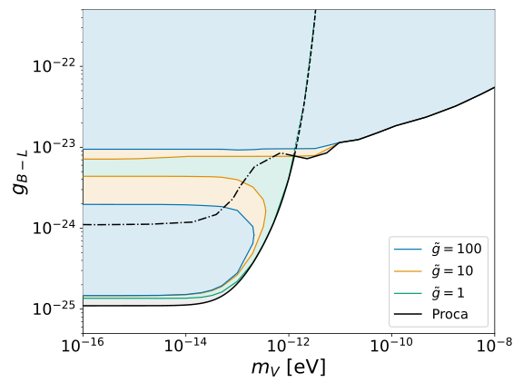
图注：阿贝尔希格斯模型中，不同 $\tilde g$ 下对 $B-L$ 力的排除区域。图中结合 MICROSCOPE 与 Eöt-Wash 的限制；虚线与点划线分别表示非主导的 MICROSCOPE 和 Eöt-Wash 限制。横轴为真空矢量质量 $m_V$（eV），纵轴为无量纲耦合 $g_{B-L}$；不同颜色对应不同 $\tilde g$，黑线为Proca基准。
怎么看这张图：看同一媒介质量下排除区是否还有大耦合边界：轻希格斯引发的有效作用程缩短，使卫星可能看不到强屏蔽源。再比较地面实验能补回哪些区域；局部源屏蔽尚未算清的部分不能自行补线。 直接展示原第五力界限稳健部分与重新开放窗口。
来源与置信度：arXiv HTML；source verified；https://arxiv.org/html/2611.34838v1/plot_bl_combined3.svg
图3
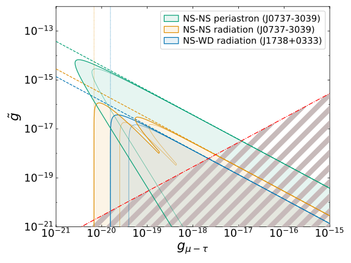
图注：阿贝尔希格斯模型中，双中子星 J0737−3039 和中子星—白矮星 J1738+0333 对 $L_\mu-L_\tau$ 力的限制，取 $m_V\ll10^{-19}$ eV，并采用两种中子星状态方程。虚线表示式(11)、(14)预言的 $\tilde g\propto g^{-1}$ 斜率，点线为 Proca 极限的耦合界限；斜线填充区域由幺正性排除。横轴为无量纲耦合 $g_{\mu-\tau}$，纵轴为无量纲质量比参数 $\tilde g$；绿色为双中子星进动，橙色为双中子星辐射，蓝色为中子星—白矮星辐射。
怎么看这张图：先找偶极辐射排除区的缺口，再看进动约束形成的楔形区域。缺口来自两颗星不同步进入屏蔽时偶极矩过零；这是条件排除图，不能解释为新力探测或所有质量范围均无约束。 支持本文最强变化：缪子双星界限的非单调性及屏蔽消除效应。
来源与置信度：arXiv HTML；source verified；https://arxiv.org/html/2611.34838v1/plot_radiation_periastron_ggt_best4.svg
强相关工作
Nelson 与 Walsh 的《Chameleon vector bosons》（2008，原文参考文献34，https://arxiv.org/abs/0802.0762）已讨论带电标量对新矢量力的屏蔽。因此本文的新意不在首次提出“矢量也能屏蔽”，而在系统区分薄壳与梯度机制，并将其贯通到地球等效原理、太阳/地球中微子及缪子双星三组约束。检索关键词可用 Abelian Higgs screening、chameleon vector bosons，阅读时关注背景场是否允许响应。
Dror、Laha 与 Opferkuch 的《Probing muonic forces with neutron star binaries》（2020，原文参考文献9，https://arxiv.org/abs/1909.12845）提供缪子双星力约束的直接比较基线；Liu 与 Tang 的近星点进动工作（原文参考文献50，https://arxiv.org/abs/2501.10927）对应另一种轨道诊断。本文并未否定这些观测精度，而是改变将观测转换为耦合限制时采用的场论及有效源电荷。
中微子部分衔接 Coloma、Gonzalez-Garcia 与 Maltoni 对 $U(1)'$ 模型从非标准相互作用到长程力的振荡限制（原文参考文献43，https://arxiv.org/abs/2009.14220）。差别在于本文重新计算环境势，再采用已有允许势能尺度；要获得包含希格斯参与中微子质量产生的完整结论，还需要超出本文的模型相关分析。
同一事件 / 同类源线索：
相似工作：
基础理论 / 方法工作：
相反观点 / 张力线索：
（未提供）
相关简报
1. Over a Half-decade Study of Crab Giant Pulses Observed with I-LOFAR
- 来源：arXiv / astro-ph.HE
- 链接：https://arxiv.org/abs/2611.33524
- 作者：Owen A. Johnson, David J. McKenna, Sai C. Susarla, Evan F. Keane, Letizia Vincetti, Joseph P. McCauley, Aaron Golden
- 公告 / 来源日期：2026-11-26
- 阅读层级：相关简报
- 评分：novelty 7/10，importance 8/10，relevance 9/10，final 9.05/10
- 推荐理由：六年Crab巨脉冲大样本分离长期DM与散射关联，对传播校正有具体价值。
中文题目：六年蟹状星云巨脉冲监测：色散与散射追踪天文单位尺度等离子体
问题、方法与结论：作者用爱尔兰LOFAR台站在2020年6月至2026年3月取得154个历元、347.9小时的102–198 MHz数据，检测到550445个巨脉冲；其中5474个信噪比超过100，用于精细色散量和散射分析。先以跨频相位一致性修正色散量，再在约9.53 MHz子带比较修正薄屏与厚屏散射模型。色散与散射的原始Pearson相关约0.70–0.71，去除长期趋势后峰值降至约0.48–0.50，共同长期漂移不能全部当成局部结构证据。
意义与贡献：2024年一次色散增强的高斯半高全宽约47.6天，超额色散量约0.02 pc cm⁻³。若由脉冲星120 km/s横向运动扫过单一结构产生，对应约3.3 AU；若云自身以约1000 km/s运动，则可达约30 AU。它提示星云含远小于光学纤维的电子密度子结构，而非直接成像测得云团。
可借鉴之处：可借鉴的是将检出用的最大信噪比色散量与科学分析用的相位优化值分开，逐子带比较散射模型，并以不同滑动中位数窗口检查相关性。长期高信噪比单脉冲监测能补充高频计时，但低频增强色散灵敏度的同时也增加散射偏差。
局限与关注点：尺度取决于相对速度，约10²–10³ cm⁻³密度还假设视线深度接近横向尺度。散射与色散并不独立，主脉冲和间脉冲分类、流量分布尾部均受展宽和选择影响。太阳风信号被星云变化掩盖；循环谱去散射仅为建议，未实际实施，现存滤波器组数据缺少所需原始电压。
图10
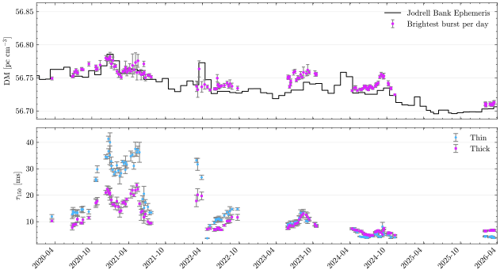
图注：六年I-LOFAR监测的色散量与散射变化。上图为测得的色散量，与Jodrell Bank发布的蟹状星云脉冲星星历值比较；下图为各历元采用厚屏模型和修正薄屏模型得到的散射时间尺度。
怎么看这张图：先比较上、下图的共同长期下降与短期偏离。两者同时变化支持传播介质发生变化，但共享的展宽偏差和时间相关性要求结合去趋势结果解读，不能仅凭曲线相似确定云的形状。 直接承载六年监测与局部介质变化的主证据。
来源与置信度：arXiv HTML；source verified；https://arxiv.org/html/2611.33524v1/scattering_and_DM.svg
2. A Chandra X-Ray Survey of the Middle-aged Supernova Remnant G22.7-0.2 Interacting with Molecular Clouds
- 来源：arXiv / astro-ph.HE
- 链接：https://arxiv.org/abs/2611.34404
- 作者：Harry Van Der Ark, Kaya Mori, Charles J. Hailey
- 公告 / 来源日期：2026-11-26
- 阅读层级：相关简报
- 评分：novelty 7/10，importance 8/10，relevance 9/10，final 9.05/10
- 推荐理由：Chandra分辨SNR云团硬X射线延展源，PSF及尘埃控制支撑加速环境诊断。
中文题目：钱德拉分辨G22.7−0.2中的硬X射线小团块：非热轫致辐射候选
问题、方法与结论：作者用2024年四次钱德拉观测、总计58.05 ks曝光，研究中年超新星遗迹G22.7−0.2与分子云交界处的硬X射线源。依据各次指向与既有XMM-Newton、NuSTAR能谱分别模拟点扩散函数，再比较径向轮廓并反卷积。N1略展宽，N2明显展宽；90%包围通量半径分别为0.82和2.35角秒，在4.4–4.7 kpc距离下约为0.018和0.052 pc。N3与已知双星XMM1作为点源处理。
意义与贡献：N2已有光子指数为1.2±0.4，结合紧致但可分辨的形态，支持低能宇宙线电子在致密气体中产生非热轫致辐射。这为老化激波仍能照亮小尺度分子云提供候选证据。N1能谱较软，同步辐射团块或磁通管也可解释，不能合称同一类已确认对象。
可借鉴之处：可借鉴的是对每个源、每次观测分别进行ChaRT与MARX光线模拟，以同场已知点源检验方法，再考虑尘埃散射。仅凭像面宽度或硬谱都不足以确认展源。调查共检出23个显著源，17个相对既有六源为新增检测，20个此前没有公开X射线源表条目。
局限与关注点：N2仅113个净计数，反卷积依赖Moffat径向模型且源不对称，统计与点扩散函数误差不能由距离误差代替。尘埃检验依赖主要尘云靠近源的假设；云密度未独立测定。约0.6太阳质量是采用模型密度的球对称估算。需分子线、重复成像及谱诊断区分机制，不能据此宣称已发现强子PeVatron。对应体搜索还受消光和目录灵敏度限制。
图4
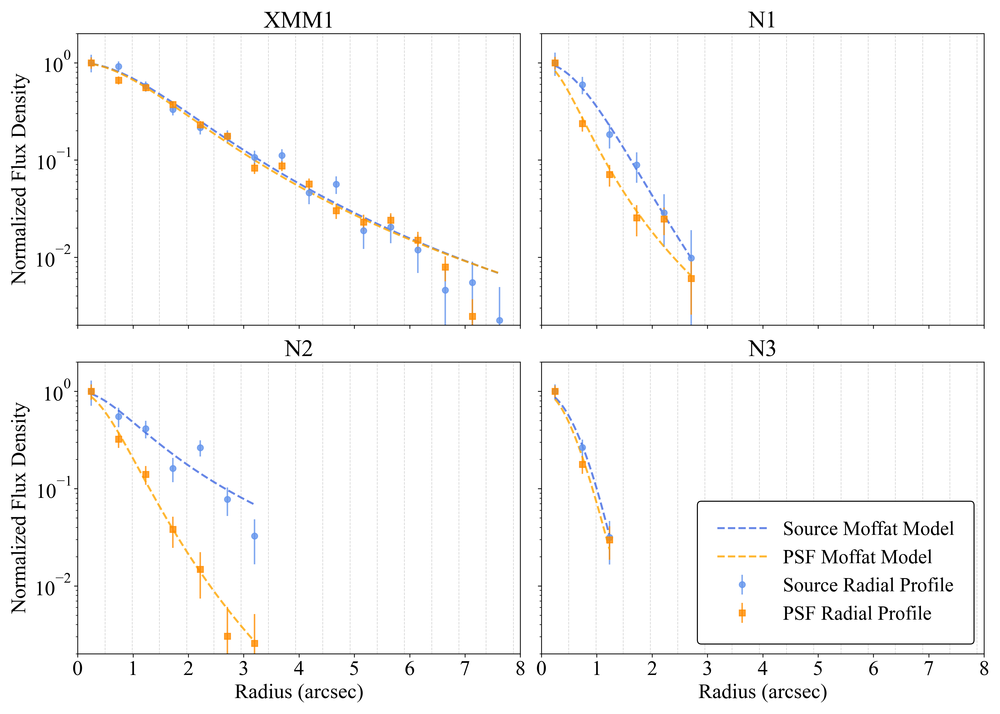
图注：观测源与对应点扩散函数的径向轮廓及Moffat模型拟合。数据点表示每个0.492角秒宽径向环的平均通量密度，误差棒表示标准误差；灰色网格标出一个像素的径向间隔。源与点扩散函数轮廓的偏离用于判断展宽。
怎么看这张图：重点比较N2在中心之外的通量与模拟点源，而不是比较不同源图像的绝对大小；XMM1离轴较远，其点扩散函数本身更宽。N2不对称结构被压成径向平均，给出的半径应视为近似尺度。 直接显示展源判据和点源控制，是非热团块解释的新增证据。
来源与置信度：arXiv HTML；source verified；https://arxiv.org/html/2611.34404v1/Fig4.png
3. Clouds as near-horizon backgrounds in the radio detection of air showers
- 来源：arXiv / astro-ph.HE
- 链接：https://arxiv.org/abs/2611.34399
- 作者：Enrique Huesca Santiago, Giulia Cantarini, Anna Nelles
- 公告 / 来源日期：2026-11-26
- 阅读层级：相关简报
- 评分：novelty 8/10，importance 7/10，relevance 9/10，final 9.00/10
- 推荐理由：提出近水平射电阵列云反射背景并给出量级模型，重要仪器排伪问题但尚未实测确认。
中文题目：云层反射会成为近地平线射电空气簇射背景吗？
问题、方法与结论：AERA、OVRO-LWA、BEACON等自触发阵列曾报告地平线上方约10°–20°的额外脉冲。作者提出云层把地面发射机信号散射向接收阵列的假说，先检查高度、基线与功率预算，再用MARES把液态水滴组成米尺度单元，进而拼成百米云体。50–150 MHz附近的计算显示，接近前向散射时相干增强可使反射达到典型阵列的可探测条件；这只是可行性评估，尚未把任何实测异常归因于云。
意义与贡献：掠地τ中微子产生的空气簇射恰在近地平线，直接屏蔽该区域会损失主要信号。因此，能离开地面方向、又间歇出现的人造干扰值得单独验证。论文把零散异常整理成可由天气、发射机与事件方向共同检验的物理假说。
可借鉴之处：可借鉴双站雷达功率预算与分层散射模拟：先由发射功率、距离和触发门槛求所需截面，再计算云体是否能达到。模拟还给单元位置加随机扰动，抑制规则格点造成的布拉格假增强。对GRAND等阵列，联合保存原始波形、云高和方向信息比只统计触发率更有诊断价值。
局限与关注点：模型只含简化液态球形水滴、有限云体和特定几何，未纳入完整波形、多径或具体触发链。正文与结论所报峰值截面范围并不一致，本文不引用统一的精确截面结论；跨实验角分布也受平面阵列方向简并和本地地平线定义影响。最关键的下一步是实际验证云与异常脉冲的相关性，而非据此认定已有中微子候选是背景。
图9
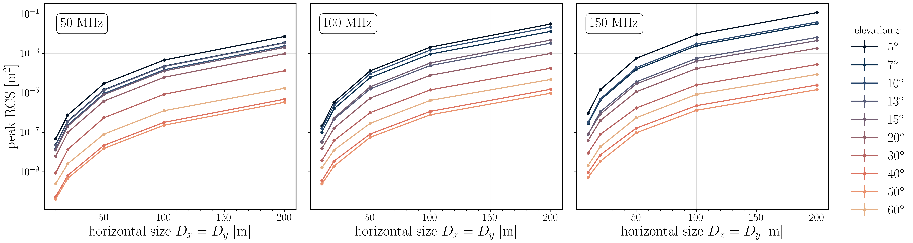
图注：层云模型的峰值雷达散射截面随云体横向尺寸的变化，云厚固定为100米，几何与图8相同。左、中、右面板分别为50、100、150 MHz；横轴横向尺寸Dx=Dy以米计，纵轴峰值截面以平方米计、用对数刻度。不同颜色分别对应5°至60°视仰角，曲线连接各模拟尺寸的结果。
怎么看这张图：比较同一横向尺寸下不同仰角曲线，低仰角的增强才是近地平线背景假说的关键；这不是实测背景率，也不包含完整触发响应。 突出反射可行性对前向散射几何的强依赖。
来源与置信度：arXiv HTML；source verified；https://arxiv.org/html/2611.34399v1/04_Cloud_model_plots/cloud_stratus_bistatic_R20km_v2_peak_by_elevation_dz100m.png
4. Fast radio bursts track cosmic star formation history with time delay: the effect of burst fluence
- 来源：arXiv / astro-ph.HE
- 链接：https://arxiv.org/abs/2611.33906
- 作者：X.D. Jia, D. H. Zhai, J. P. Hu, S. X. Yi, F. Y. Wang
- 公告 / 来源日期：2026-11-26
- 阅读层级：相关简报
- 评分：novelty 7/10，importance 8/10，relevance 8/10，final 8.70/10
- 推荐理由：FRB延迟结论对流量选择建模敏感，揭示系统误差但尚非稳健起源判别。
中文题目：快速射电暴的起源延迟为何随流量处理改变
问题、方法与结论：作者对CHIME两版快速射电暴目录作前向建模，用注入样本描述选择效率，再比较色散量与信噪比联合拟合、仅拟合色散量两种方案。第二版经筛选剩1955个表观不重复事件；联合拟合的延迟与零在两倍标准差内相容，色散量单独拟合却给出约35亿年延迟。这里的延迟指恒星形成到暴发群体形成之间的统计时间，并非单次射电脉冲的传播时间。
意义与贡献：这说明关于年轻磁星或较老前身星的判断会受观测响应与群体模型影响。论文提出流量到信噪比的映射可能压低延迟估计，但没有独立证明仅用色散量就能消除全部偏差；应把两种结果的差异看作系统性诊断，而非已经选定形成通道。
可借鉴之处：可借鉴做法是以同一数据和选择函数逐项移除观测维度，检查物理参数是否稳定，并同时考察宿主和星系际介质的色散分布。改变星系际散度后，色散量单独拟合的延迟可升至约58亿年，显示模型系统误差远大于基准方案的形式统计误差。
局限与关注点：流量与信噪比非线性、有散布，本身不足以证明用注入样本描述的响应必然有偏；还需注入回收闭合验证。宿主色散与红移演化退化、能量函数不演化假设及延迟宽度贴近先验上界都限制结论。作者尚未纳入能量随红移演化，不宜把标题读成无模型依赖的延迟测量。
图7
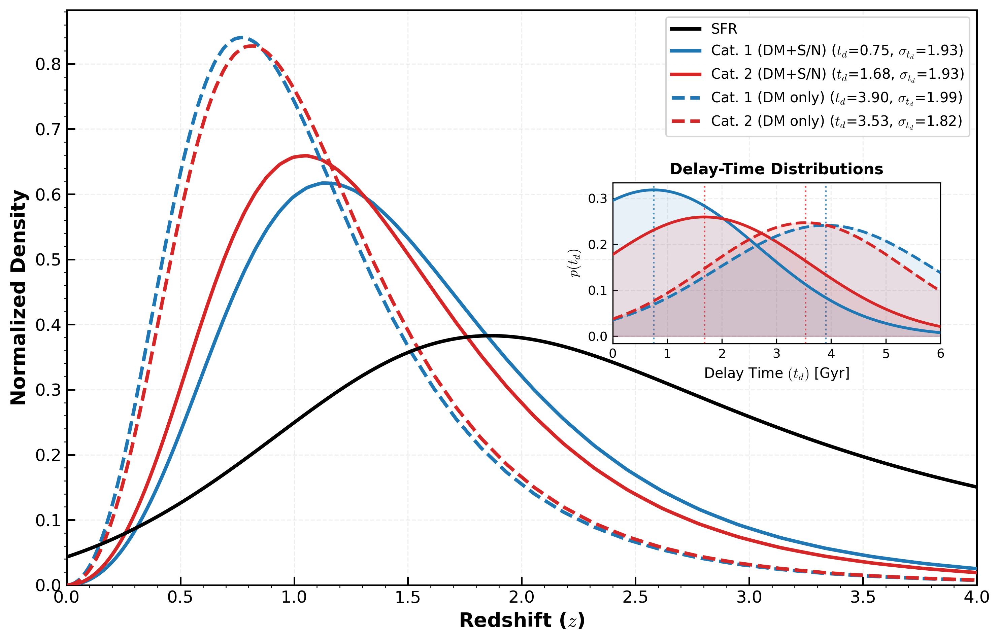
图注：不同目录和拟合方案下的快速射电暴事件率与恒星形成率。黑线为恒星形成率；按原图图例，蓝线为目录1、红线为目录2（原文图注将两色写反，此处据图例注明）。实线联合使用色散量与信噪比，虚线仅使用色散量。主图横轴为红移、纵轴为归一化密度；右侧插图展示延迟时间分布，时间单位Gyr。
怎么看这张图：对比同一颜色的实虚线可见处理方案改变峰值位置；这些曲线是模型推断，不是逐个源的直接红移测量。 支撑本文关键诊断，保留模型与观测证据区别。
来源与置信度：arXiv HTML；source verified；https://arxiv.org/html/2611.33906v1/frb_pz_dtd_multi.png
5. Lower Bound on the Lightest Neutrino Mass with Resonant Neutrino Self-Interactions
- 来源：arXiv / astro-ph.HE
- 链接：https://arxiv.org/abs/2611.34213
- 作者：Shao-Feng Ge, Joao Paulo Pinheiro, Shaoyang Qin, Ruitao Sun, Oleg Titov
- 公告 / 来源日期：2026-11-26
- 阅读层级：相关简报
- 评分：novelty 7/10，importance 7/10，relevance 9/10，final 8.70/10
- 推荐理由：中微子共振输运双再生与质量下限有价值，但依赖额外相互作用模型及较旧事件样本。
中文题目：共振中微子自相互作用能给最轻质量设下限吗？
问题、方法与结论：作者研究高能中微子与宇宙遗迹中微子的共振散射：当最轻质量接近遗迹热动量时，吸收能窗会展宽，谱形因而携带绝对质量信息。采用主要耦合τ味的MeV标量媒介，分别求解中微子与反中微子的传播，并保留两类再生子粒子；将地球端通量折叠成沉积能，拟合IceCube HESE 7.5年、102事例。在媒介质量1 MeV、耦合0.01的基准下，正常与反转排序的95%下限分别为7.76与7.82 meV。
意义与贡献：价值在于把以往寻找新媒介的谱吸收结构转化成质量诊断，同时指出遗迹中微子不能一律视为静止靶。该下限只在指定自相互作用模型和媒介质量范围内成立；没有证明标准模型下最轻中微子一定大于这些值。
可借鉴之处：可借鉴其“热动量平均—宇宙学传播—双再生—探测响应”的完整链条。单一再生项会漏掉重新进入低能区的粒子；只比较真实能量通量也会高估窄吸收谷的可见性。作者还比较了pp与pγ源的粒子/反粒子比例，所得排除边界变化很小。
局限与关注点：最佳自相互作用拟合相对无相互作用仅改善Δχ²约4.5，后者仍被允许。结果依赖幂律源谱、恒星形成率演化和所扫描参数；更重媒介不产生文中下限。图2固定通量参数只是示意，真正图3约束放开归一化和谱指数。后续应检验更灵活源谱及更多事件能否保留这一条件性下限。
图3
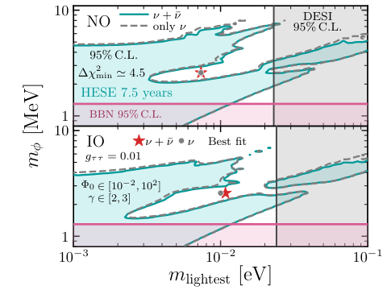
图注：HESE 7.5年数据在最轻中微子质量与媒介质量平面上的95%置信排除区域（阴影）。上、下分别为正常和反转质量排序；青色实线采用中微子与反中微子双输运，灰色虚线只采用中微子输运。红星和灰色圆点为对应最佳拟合。黑实线给出假定ΛCDM时DESI DR2 BAO、CMB和振荡数据的95%质量上限；标出的Δχ²表示自相互作用相对标准情景的拟合改善。 横轴最轻质量单位为eV，纵轴媒介质量单位为MeV；图内粉色水平线与阴影为标注的BBN 95%限制。
怎么看这张图：先固定纵轴媒介质量再读横轴排除区；不能把二维排除轮廓提取成模型无关的普适质量下限。 直接展示文章的条件性质量约束及双再生处理影响。
来源与置信度：arXiv HTML；source verified；https://arxiv.org/html/2611.34213v1/Nu_Constraint.png
6. Optical Light-Curve Broadening in the Redback Binary PSR J2215+5135
- 来源：arXiv / astro-ph.HE
- 链接：https://arxiv.org/abs/2611.34325
- 作者：Amin Farhang, Soroush Shakeri, Habib Khosroshahi, Narjes Shahamat, Razieh Ranjbar, Jerome Orosz, Joshua Tan, Davood Rafiei Karkevandi
- 公告 / 来源日期：2026-11-26
- 阅读层级：相关简报
- 评分：novelty 7/10，importance 8/10，relevance 8/10，final 8.70/10
- 推荐理由：红背双星十年光变形状变化明确揭示质量推断的加热模型系统性，单源两历元限制。
中文题目：红背脉冲星光变变宽揭示中子星称重的加热模型误差
问题、方法与结论：作者用2024年伊朗国家天文台三色测光，与2014年PSR J2215+5135资料比较。光变峰值亮度和相位基本一致，峰两侧却变宽；同一相位分箱直接比较也支持部分波段的差异。论文以轨道几何、伴星大气及一个有效热斑联合拟合，得到2024年中子星质量约1.95个太阳质量；2014年同类模型约2.13个太阳质量，两者在约一倍标准差内相容。
意义与贡献：研究提醒我们，光变反演的质量依赖伴星如何受热，不能把拟合质量差异当作中子星真实变轻。固定与释放热斑参数可使同一2024年数据的质量估计改变约0.2个太阳质量，已接近形式误差；对用蜘蛛脉冲星限制致密物质状态方程尤其相关。
可借鉴之处：有用的方法是先对旧数据使用同一模型重拟合，再用相位分箱、峰相位配准和多种残差重采样检验变化，分离观测差异与模型补偿。作者把倾角、填充因子和温度的联动视为模型吸收遗漏加热成分，而不将每个最佳拟合参数解释为真实演化。
局限与关注点：独立残差置换给出的全局显著性为4.26σ，但保留相位相关的块自助法降为2.63σ，不能只报最高值。三色分别来自连续三夜且部分相位缺测；两次历元无法判定十年缓慢变化还是数日状态。扩展加热未对2024年正式拟合，热斑也不是直接成像的物理结构。
图3
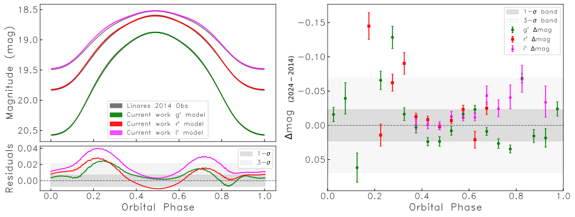
图注：左侧比较2014年灰色和2024年彩色ELC热斑模型，i波段为清晰起见共同上移0.1星等；下方给出各滤光片残差，灰色深浅区域分别表示1σ和3σ范围。右侧为相同相位分箱后2024减2014的观测差，竖直误差棒为传播后的1σ不确定度。
怎么看这张图：先看右侧直接观测差，再看左侧模型如何描述变宽；i波段左翼覆盖不足，模型联合拟合的显著性不能替代该区直接数据证据。 支撑本文关键诊断，保留模型与观测证据区别。
来源与置信度：arXiv HTML；source verified；https://arxiv.org/html/2611.34325v1/mag_model.svg
7. A search and multi-frequency study of curved parsec-scale jets in active galaxies
- 来源：arXiv / astro-ph.HE
- 链接：https://arxiv.org/abs/2611.34496
- 作者：V. A. Makeev, A. B. Pushkarev, Y. Y. Kovalev
- 公告 / 来源日期：2026-11-26
- 阅读层级：相关简报
- 评分：novelty 7/10，importance 7/10，relevance 9/10，final 8.70/10
- 推荐理由：全文复核后降为7/7/9：586源目录与多频几何提供有用增量，但20度选择不完备，周期依赖外部先验，模型区分有限；Eq27到28、角度计算及筛除百分比自洽问题削弱物理推断，不维持初筛8/8。保留相关简报。
中文题目：586条强弯曲AGN喷流目录：多频形态有价值，动力学解释仍有限
问题、方法与结论：作者在Astrogeo的17478个射电源、123456幅VLBI图像中，先选出7927个有分辨延展结构的源，再提取喷流亮度脊线，以位置角累计变化超过20度筛选并人工复核，得到586个稳健强弯曲源，占延展样本约7.4%。多频比较显示高频通常具有更大的单位角距离转向率，说明内核附近的弯曲更突出；单频近直的结构也可能在不同尺度间显著转向。
意义与贡献：贡献是把个例弯曲整理成可复查的大样本，为喷流运动学和发动机研究提供目标。7.4%是特定选择下的下限，不是全体AGN发生率。线性与对数螺旋可分别联系弹道进动和剪切不稳定性，但严格比较仅剩43与8个偏好对象，不能据此确定哪种机制占主导。
可借鉴之处：可借鉴的是高斯残差筛延展源、逐半径亮度中位方向构造脊线、跨频率补充尺度覆盖，并保留人工质量标记。约219年的对数平均进动周期来自外部速度、开角等分布的蒙特卡洛传播，不是直接监测到的周期；后续应补个体速度、视角和核位移。
局限与关注点：样本会漏掉来回摆动但平均转向很小的喷流，频率覆盖、投影和核对齐也带来偏差。原文式27至28的KH参数反解代数不一致，93度乘ln2被误写为186度，相关波长半径比需复核，不能直接引用为可靠约束。多历元分量沿直线还是沿弯曲通道运动，才是区分进动与不稳定性的关键下一步。
图4
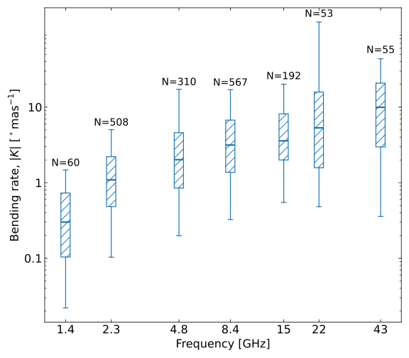
图注：稳健弯曲源的弯曲率随观测频率的分布。横轴为频率（GHz），纵轴为位置角对离核角距离的线性梯度绝对值（度/毫角秒）。箱体覆盖25%–75%分位数，中线为中位数，须线为5%–95%分位数；上方数字为各频段可用源数。
怎么看这张图：高频分布整体向较大弯曲率移动，提示更靠近核的尺度上转向更强。不同频段源数从数十到数百不等，分辨率和可见范围也不同，不能把这些箱体当成同一批喷流的无偏径向剖面，更不能据此确定进动或KH机制。 最直接且不依赖争议物理反解的多频形态结果。
来源与置信度：arXiv HTML；source verified；https://arxiv.org/html/2611.34496v1/freq_bending.svg
8. Is Gravitational-Wave Waveform Systematics a Bottleneck for Formation Channel Inferences using Effective-Spin and Mass-Ratio?
- 来源：arXiv / astro-ph.HE
- 链接：https://arxiv.org/abs/2611.34731
- 作者：Upasana Das, Suvodip Mukherjee
- 公告 / 来源日期：2026-11-26
- 阅读层级：相关简报
- 评分：novelty 7/10，importance 8/10，relevance 8/10，final 8.70/10
- 推荐理由：波形注入回收检验群体自旋质量比关系稳健性，范围限定当前灵敏度和波形族。
中文题目：引力波质量比与自旋关联能否由波形误差制造
问题、方法与结论：作者以NRSur7dq4为注入基准，模拟当前探测器设计灵敏度下的双黑洞事件，再用两种波形族回收参数。信噪比大于12的样本有276例。质量比和有效自旋的估计均可能向中间值收缩，单事件误差之间存在相关性；但回收参数本身没有出现统计显著的群体反相关，同波形自回收也有相似偏移。
意义与贡献：这为利用质量比—自旋关系讨论形成通道提供了一个有限的稳健性检查：单事件参数偏差相关，不等于凭空制造整个人群关联。作者对低质量比区域提出更谨慎的波形复核要求，并标出两个真实事件邻近模拟偏差较大的区域；这不是对这些事件已经测得的系统误差。
可借鉴之处：可复用的是设置同模型注入回收作为噪声与先验效应基线，再与跨模型结果比较，并同时查看绝对偏差和按统计误差归一化的偏差。仅比较最佳拟合值或看到先验边界附近的中位数偏移，容易把普通参数估计效应混称为波形不准。
局限与关注点：全文存在需澄清的设定冲突：讨论称只注入平行或反平行自旋，附录却写各向同性倾角，不能据此认证一般进动系统的稳健性。基准波形本身也近似，偏心未纳入；归一化联合指标忽略两参数协方差，所称联合3σ阈值不可直接当严格二维显著性。本文未完成所有形成通道的层级模型比较。
图4
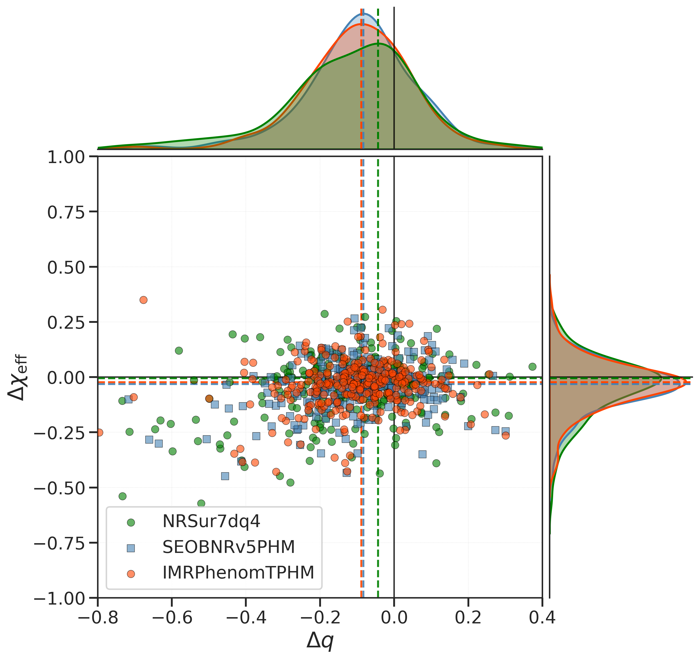
图注：有效自旋偏移与质量比偏移的联合分布。边缘面板展示对应核密度估计，虚线标出各分布峰值，黑实线标示零偏移。不同回收波形与NRSur7dq4自回收的比较用于区分普通参数估计偏移和模型间额外差异。
怎么看这张图：图中是参数误差的联合分布；是否制造天体群体关联要结合表1的回收参数检验，不能仅由这张偏移相关图判定。 支撑本文关键诊断，保留模型与观测证据区别。
来源与置信度：arXiv HTML；source verified；https://arxiv.org/html/2611.34731v1/bias_events_transparent.png
说明
评分由 LLM 给出初评，再由本地阈值策略过滤；IACT、TeV 伽马射线和高能中微子天文学按重点方向处理。